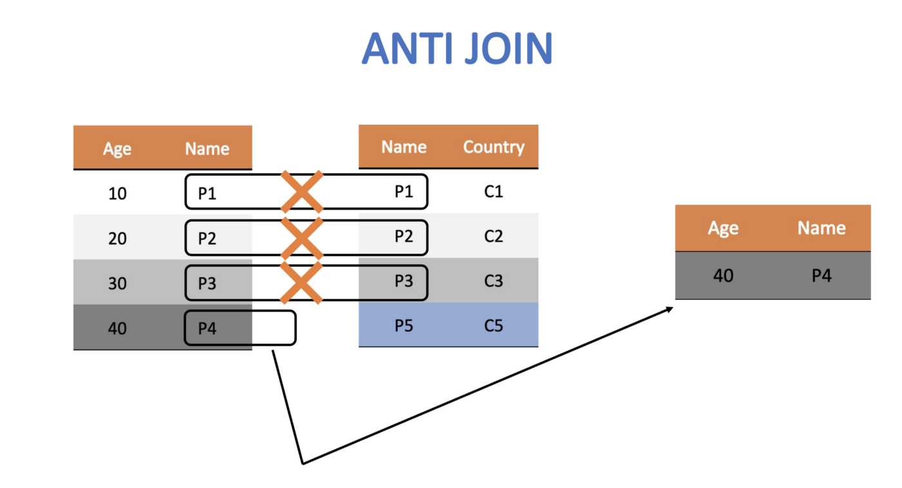

library(academictwitteR)
library(tidyverse)
ccss_tweets_2021 <-
get_all_tweets('(#commoncore OR "common core") -is:retweet lang:en',
"2021-01-01T00:00:00Z",
"2021-05-31T00:00:00Z",
bearer_token,
data_path = "ccss-data/",
bind_tweets = FALSE)
ccss_tweets <- bind_tweet_jsons(data_path = "ccss-data/") |>
select(text,
created_at,
author_id,
id,
conversation_id,
source,
possibly_sensitive,
in_reply_to_user_id)
write_csv(ccss_tweets, "data/ccss-tweets.csv")Unit 3 Case Study: Public Sentiment and the State Standards
ECI 586 Introduction to Learning Analytics
1. PREPARE
Data sources such as digital learning environments and administrative data systems, as well as data produced by social media websites and the mass digitization of academic and practitioner publications, hold enormous potential to address a range of pressing problems in education, but collecting and analyzing text-based data also presents unique challenges. This week, our case study is guided by my colleague Josh Rosenberg’s study, Advancing new methods for understanding public sentiment about educational reforms: The case of Twitter and the Next Generation Science Standards.
We will focus on conducting a very simplistic “replication study” by comparing the sentiment of tweets about the Next Generation Science Standards (NGSS) and Common Core State Standards (CCSS) in order to better understand public reaction to these two curriculum reform efforts. Specifically, our Unit 3 case study will cover the following topics:
- Prepare: We’ll take a quick look at Dr. Rosenberg’s study and load packages we’ll need for analysis.
- Wrangle: We focus on basic text mining processes such as text tokenization and stop word removal. Specifically, we will learn how to “tidy text” so we can perform some basic analyses such as retrieving word counts and term frequencies.
- Explore: In order to see what insight our data provides into answering our research questions, we will calculate some simple summary statistics from our tidied text and use data visualization to highlight some of these insights.
- Model: We learn a little about sentiment lexicons and introduce the {vader} package to model the sentiment of tweets about the NGSS and CCSS state standards in order to better understand public reaction to these two curriculum reform efforts.
- Communicate: To wrap up our case study, we’ll write a brief summary of our findings and a short reflection on what we learned.
1a. Review the Literature
The Unit 3 Case Study: Public Sentiment and the State Standards is guided by a recent publication by (Rosenberg et al., 2021) Understanding Public Sentiment About Educational Reforms: The Next Generation Science Standards on Twitter. This study in turn builds on upon previous work by Wang & Fikis (2017) examining public opinion on the Common Core State Standards (CCSS) on Twitter. For this case study, we will focus on analyzing tweets about the Next Generation Science Standards (NGSS) and Common Core State Standards (CCSS) in order to better understand key words and phrases that emerge, as well as public sentiment towards these two curriculum reform efforts.

Abstract
System-wide educational reforms are difficult to implement in the United States, but despite the difficulties, reforms can be successful, particularly when they are associated with broad public support. This study reports on the nature of the public sentiment expressed about a nationwide science education reform effort, the Next Generation Science Standards (NGSS). Through the use of data science techniques to measure the sentiment of posts on Twitter about the NGSS (N = 565,283), we found that public sentiment about the NGSS is positive, with only 11 negative posts for every 100 positive posts. In contrast to findings from past research and public opinion polling on the Common Core State Standards, sentiment about the NGSS has become more positive over time—and was especially positive for teachers. We discuss what this positive sentiment may indicate about the success of the NGSS in light of opposition to the Common Core State Standards.
Data Sources
Similar to data we’ll be using for this case study, Rosenberg et al. used publicly accessible data from Twitter collected using the Full-Archive Twitter API and the {rtweet} package in R. Specifically, the authors accessed tweets and user information from the hashtag-based #NGSSchat online community, all tweets that included any of the following phrases, with “/” indicating an additional phrase featuring the respective plural form: “ngss”, “next generation science standard/s”, “next gen science standard/s”.
Data used in this case study was obtained prior to Twitter’s transition to X, and used the {academictwitter} package and the sadly no longer accessible Academic Research developer account. The Twitter API v2 endpoints allowed researchers to access the full twitter archive, unlike a standard developer account. Data includes all tweets from January through May of 2020 and included the following terms: #ccss, common core, #ngsschat, ngss.
Below is an example of the code used to retrieve data for this case study. This code is set not to execute and will NOT run, but it does illustrate the search query used, variables selected, and time frame.
Analysis
The authors determined Tweet sentiment using the Java version of SentiStrength to assign tweets to two 5-point scales of sentiment, one for positivity and one for negativity, because SentiStrength is a validated measure for sentiment in short informal texts (Thelwall et al., 2011). In addition, they used this tool because Wang and Fikis (2019) used it to explore the sentiment of CCSS-related posts.
We’ll be using the AFINN sentiment lexicon which also assigns words in a tweet to two 5-point scales, in addition to exploring some other sentiment lexicons to see if they produce similar results. We will use a similar approach to label tweets as positive, negative, or neutral using the {Vader} package which greatly simplifies this process.
The authors also used the lme4 package in R to run a mixed effects model to determine if sentiment changes over time and differs between teachers and non-teachers. We won’t try to replicate in this part of the study, but we will take a look at some of their findings from this model in section 4.
Summary of Key Findings
- Contrasting with sentiment about CSSS, sentiment about the NGSS science education reform effort is overwhelmingly positive, with approximately 9 positive tweets for every negative tweet.
- Teachers were more positive than non-teachers, and sentiment became substantially more positive over the ten years of NGSS-related posts.
- Differences between the context of the tweets were small, but those that did not include the #NGSSchat hashtag became more positive over time than those posts that did not include the hashtag.
- Individuals posted more tweets during #NGSSchat chats, the sentiment of their posts was more positive, suggesting that while the context of individual tweets has a small effect (with posts not including the hashtag becoming more positive over time), the effect upon individuals of being involved in the #NGSSchat was positive.
1b. Define Questions
One overarching question that Silge and Robinson (2018) identify as a central question to text mining and natural language processing, and that we’ll explore later in this case study, is the question:
How do we to quantify what a document or collection of documents is about?
The questions guiding the Rosenberg et al. study attempt to quantify public sentiment around the NGSS and how that sentiment changes over time. Specifically, they asked:
- What is the public sentiment expressed toward the NGSS?
- How does sentiment for teachers differ from non-teachers?
- How do tweets posted to #NGSSchat differ from those without the hashtag?
- How does participation in #NGSSchat relate to the public sentiment individuals express?
- How does public sentiment vary over time?
For this text mining case study, we’ll use approaches similar to those used by the authors cited above to better understand public discourse surrounding these standards, particularly as they relate to STEM education. We will also try to guage public sentiment around the NGSS, by comparing how much more positive or negative NGSS tweets are relative to CSSS tweets. Specifically, in this case study we’ll attempt to answer the following questions:
- What are the most frequent words or phrases used in reference to tweets about the CCSS and NGSS?
- How does sentiment for NGSS compare to sentiment for CCSS?
1c. Load Libraries
tidytext üì¶

As we’ll learn first hand in this module, using tidy data principles can also make many text mining tasks easier, more effective, and consistent with tools already in wide use. The {tidytext} package helps to convert text into data frames with each rows containing an individual word or sequence of words, making it easy to to manipulate, summarize, and visualize text using using familiar functions form the {tidyverse} collection of packages.
Let’s go ahead and load the {tidytext} package:
library(tidytext)For a more comprehensive introduction to the tidytext package, I cannot recommend enough the free and excellent online book, Text Mining with R: A Tidy Approach (Silge & Robinson, 2017). If you’re interested in pursuing text analysis using R after this course, this will be a go to reference.
The vader Package üì¶

The {vader} package is for the Valence Aware Dictionary for sEntiment Reasoning (VADER), a rule-based model for general sentiment analysis of social media text and specifically attuned to measuring sentiment in microblog-like contexts.
To learn more about the {vader} package and its development, take a look at the article by Hutto and Gilbert (2014), VADER: A Parsimonious Rule-based Model for Sentiment Analysis of Social Media Text.
Let’s go ahead and load the VADER library:
library(vader)Note: The {vader} package can take quite some time to run on a large datasets like the one we’ll be working with, so in our Model section we will examine just a small(ish) subset of tweets.
Other Packages
Finally, there are a couple other packages we’ll need to get started. The first should look familiar while second {wordcloud2} package is handy little package for creating interactive word clouds.
library(tidyverse)── Attaching core tidyverse packages ──────────────────────── tidyverse 2.0.0 ──
✔ dplyr 1.1.4 ✔ readr 2.1.5
✔ forcats 1.0.0 ✔ stringr 1.5.1
✔ ggplot2 3.5.1 ✔ tibble 3.2.1
✔ lubridate 1.9.3 ✔ tidyr 1.3.1
✔ purrr 1.0.2
── Conflicts ────────────────────────────────────────── tidyverse_conflicts() ──
✖ dplyr::filter() masks stats::filter()
✖ dplyr::lag() masks stats::lag()
ℹ Use the conflicted package (<http://conflicted.r-lib.org/>) to force all conflicts to become errorslibrary(wordcloud2)2. WRANGLE
The importance of data wrangling, particularly when working with text, is difficult to overstate. Just as a refresher, wrangling involves the initial steps of going from raw data to a dataset that can be explored and modeled (Krumm et al., 2018). This case study will place a heavy emphasis on preparing text for analysis and in particular we’ll learn how to:
- Import Tweets. First we revisit the familiar
read_csv()function for reading in our CCSS and NGSS tweets into R. - Restructure Data. We focus on removing extraneous data using the
select()andfilter()functions from {dplyr}, and revisit functions from the Tidy Your Data Primer for merging data frames. - Tidy Text. Finally, we introduce the {tidytext} package to “tidy” and tokenize our tweets in order to create our data frame for analysis. We also introduce a new join function to remove “stop words” that don’t add much value to our analysis.
2a. Import Tweets from CSV
As noted above, data used in this case study was pulled using an Academic Research developer account and the {academictwitter} package, which uses the Twitter API v2 endpoints and allows researchers to access the full twitter archive, unlike the {rtweet} package, which limits the number of tweets and the length of time from which you can pull tweets.
Data for this case study includes all tweets from January through May of 2020 and includes the following terms: #ccss, common core, #ngsschat, ngss. Since we’ll be working with some computational intensive functions later in this case study that can take some time to run, I restricted the time frame for my search to only a handful of month. Even so, we’ll be working with nearly 30,000 tweets and nearly 1,000,000 words for our analysis!
Let’s use the by now familiar read_csv() function to import our ccss_tweets.csv file saved in our data folder:
ccss_tweets <- read_csv("data/ccss-tweets.csv",
col_types = cols(author_id = col_character(),
id = col_character(),
conversation_id = col_character(),
in_reply_to_user_id = col_character()
)
)
ccss_tweets# A tibble: 27,230 × 8
text created_at author_id id conversation_id source
<chr> <dttm> <chr> <chr> <chr> <chr>
1 "@catturd2 Hmmmm … 2021-01-02 00:49:28 16098543… 1345… 13451697062071… Twitt…
2 "@homebrew1500 I … 2021-01-02 00:40:05 12495948… 1345… 13451533915976… Twitt…
3 "@ClayTravis Dump… 2021-01-02 00:32:46 88770705… 1345… 13450258639942… Twitt…
4 "@KarenGunby @chi… 2021-01-02 00:24:01 12495948… 1345… 13451533915976… Twitt…
5 "@keith3048 I kno… 2021-01-02 00:23:42 12527475… 1345… 13451533915976… Twitt…
6 "Probably common … 2021-01-02 00:18:38 12760173… 1345… 13451625486818… Twitt…
7 "@LisaS4680 Stupi… 2021-01-02 00:16:11 92213292… 1345… 13451595466087… Twitt…
8 "@JerryGl29176259… 2021-01-02 00:10:29 12201608… 1345… 13447179758914… Twitt…
9 "@JBatNC304 @Cawt… 2021-01-02 00:09:15 88091448… 1345… 13447403608625… Twitt…
10 "@chiefaugur I th… 2021-01-01 23:54:38 12495948… 1345… 13451533915976… Twitt…
# ℹ 27,220 more rows
# ℹ 2 more variables: possibly_sensitive <lgl>, in_reply_to_user_id <chr>Note the addition of the col_types = argument for changing some of the column types to character strings because the numbers for those particular columns actually indicate identifiers for authors and tweets:
author_id= the author of the tweetid= the unique id for each tweetconverastion_id= the unique id for each conversation threadin_reply_to_user_id= the author of the tweet being replied to
Your Turn ⤵
Complete the following code chunk to import the NGSS tweets located in the same data folder as our common core tweets and named ngss-tweets.csv. By default, R will treat numerical IDs in our dataset as numeric values but we will need to convert these to characters like demonstrated above for the purpose of analysis. Also, feel free to repurpose the code from above.
ngss_tweets <- read_csv("data/ngss-tweets.csv",
col_types = cols(author_id = col_character(),
id = col_character(),
conversation_id = col_character(),
in_reply_to_user_id = col_character()
)
)
ngss_tweets# A tibble: 8,125 × 8
text created_at author_id id conversation_id source
<chr> <dttm> <chr> <chr> <chr> <chr>
1 "Please help us R… 2021-01-06 00:50:49 32799077… 1346… 13466201998945… Twitt…
2 "What lab materia… 2021-01-06 00:45:32 10103246… 1346… 13466188701325… Hoots…
3 "I recently saw a… 2021-01-06 00:39:37 61829645 1346… 13466173820858… Twitt…
4 "I'm thrilled to … 2021-01-06 00:30:13 461653415 1346… 13466150172071… Twitt…
5 "PLS RT. Excited … 2021-01-06 00:15:05 22293234 1346… 13466112069671… Twitt…
6 "Inspired by Marg… 2021-01-06 00:00:00 33179602… 1346… 13466074140999… Tweet…
7 "PLTW Launch is d… 2021-01-05 23:45:06 17276863 1346… 13466036638386… Hoots…
8 "@NGSS_tweeps How… 2021-01-05 23:24:01 10230543… 1346… 13464677409499… Twitt…
9 "@NGSS_tweeps I d… 2021-01-05 23:21:56 10230543… 1346… 13464677409499… Twitt…
10 "January 31st is … 2021-01-05 23:10:03 23679615 1346… 13465948440435… Hoots…
# ℹ 8,115 more rows
# ℹ 2 more variables: possibly_sensitive <lgl>, in_reply_to_user_id <chr>Importing data and dealing with data types can be a bit tricky, especially for beginners. Recall from previous case studies that RStudio has an “Import Dataset” feature in the Environment Pane that can help you use the {readr} package and associated functions to greatly facilitate this process. If you get stuck, you can copy the code generated in the lower right hand corner of the Import Dataset window.

Now use the following code chunk to inspect the head() of each data frame and answer the questions that follow:
head(ngss_tweets)# A tibble: 6 × 8
text created_at author_id id conversation_id source
<chr> <dttm> <chr> <chr> <chr> <chr>
1 "Please help us RT… 2021-01-06 00:50:49 32799077… 1346… 13466201998945… Twitt…
2 "What lab material… 2021-01-06 00:45:32 10103246… 1346… 13466188701325… Hoots…
3 "I recently saw a … 2021-01-06 00:39:37 61829645 1346… 13466173820858… Twitt…
4 "I'm thrilled to b… 2021-01-06 00:30:13 461653415 1346… 13466150172071… Twitt…
5 "PLS RT. Excited 2… 2021-01-06 00:15:05 22293234 1346… 13466112069671… Twitt…
6 "Inspired by Marga… 2021-01-06 00:00:00 33179602… 1346… 13466074140999… Tweet…
# ℹ 2 more variables: possibly_sensitive <lgl>, in_reply_to_user_id <chr>head(ccss_tweets)# A tibble: 6 × 8
text created_at author_id id conversation_id source
<chr> <dttm> <chr> <chr> <chr> <chr>
1 "@catturd2 Hmmmm “… 2021-01-02 00:49:28 16098543… 1345… 13451697062071… Twitt…
2 "@homebrew1500 I a… 2021-01-02 00:40:05 12495948… 1345… 13451533915976… Twitt…
3 "@ClayTravis Dump … 2021-01-02 00:32:46 88770705… 1345… 13450258639942… Twitt…
4 "@KarenGunby @chie… 2021-01-02 00:24:01 12495948… 1345… 13451533915976… Twitt…
5 "@keith3048 I know… 2021-01-02 00:23:42 12527475… 1345… 13451533915976… Twitt…
6 "Probably common c… 2021-01-02 00:18:38 12760173… 1345… 13451625486818… Twitt…
# ℹ 2 more variables: possibly_sensitive <lgl>, in_reply_to_user_id <chr>Wow, so much for a family friendly case study! Based on this very limited sample, which set of standards do you think Twitter users are more negative about?
- YOUR RESPONSE HERE
Let’s take a slightly larger sample of the CCSS tweets:
ccss_tweets |>
sample_n(20) |>
relocate(text)# A tibble: 20 × 8
text created_at author_id id conversation_id source
<chr> <dttm> <chr> <chr> <chr> <chr>
1 "let’s not act li… 2021-01-11 17:31:46 18038703 1348… 13486840355522… Twitt…
2 "@shoe0nhead Look… 2021-03-29 01:25:34 201790588 1376… 13763424261520… Twitt…
3 "[Read] Mobi Comm… 2021-03-21 13:23:37 13666436… 1373… 13736263491186… Twitt…
4 "@w_terrence They… 2021-01-22 05:39:08 96750651… 1352… 13523759222682… Twitt…
5 "@pancaketownship… 2021-05-15 00:06:40 12382333… 1393… 13932780113326… Twitt…
6 "@glg1101 @cpa_ka… 2021-04-23 18:11:11 13229145… 1385… 13854506770280… Twitt…
7 "@DailyMailUK @Ma… 2021-03-27 15:03:15 13164579… 1375… 13758130247333… Twitt…
8 "600+1000=2000 no… 2021-02-02 05:15:59 636488925 1356… 13564714040743… Twitt…
9 "Have #Common-Cor… 2021-01-16 21:45:08 40672085 1350… 13505597368617… Dynam…
10 "@Patriot89432220… 2021-01-16 22:33:30 45755509 1350… 13505605478219… Twitt…
11 "@lumberjake20 @R… 2021-03-17 05:41:21 38873613 1372… 13719169650995… Twitt…
12 "@DarthZapata @Kr… 2021-03-01 02:00:04 16192443… 1366… 13661270895361… Twitt…
13 "@covie_93 Common… 2021-02-14 16:39:23 10951808… 1360… 13609867291933… Twitt…
14 "However it seems… 2021-04-23 02:34:12 285908278 1385… 13854217166466… Twitt…
15 "@IELTS_T20 Divid… 2021-03-27 14:10:28 13164579… 1375… 13739529680143… Twitt…
16 "@PolitiBunny Mus… 2021-01-22 03:41:44 13170986… 1352… 13524604128942… Twitt…
17 "I remember Repub… 2021-04-25 11:21:09 81010694… 1386… 13862791070428… Twitt…
18 "With K12 math, w… 2021-03-20 12:42:07 17669448 1373… 13732535194116… Twitt…
19 "@SmokeyMagma @Sf… 2021-02-27 21:59:10 458085775 1365… 13657792682744… Twitt…
20 "@OANN Common Cor… 2021-01-11 23:14:22 99043941… 1348… 13487683377323… Twitt…
# ℹ 2 more variables: possibly_sensitive <lgl>, in_reply_to_user_id <chr>Your Turn ⤵
Use the code chunk below to take a sample of the NGSS tweets. Try to do it without looking at the code above first:
ngss_tweets |>
sample_n(20) |>
relocate(text)# A tibble: 20 × 8
text created_at author_id id conversation_id source
<chr> <dttm> <chr> <chr> <chr> <chr>
1 "I am loving this… 2021-02-05 14:04:51 49185075… 1357… 13576907703466… Tweet…
2 "Domino's Pizza i… 2021-03-08 15:26:22 12986825… 1368… 13689462009975… Twitt…
3 "@BK3DSci @BMSsci… 2021-02-06 21:37:49 177724759 1358… 13580776975498… Twitt…
4 "Materials design… 2021-03-22 18:39:36 12444793… 1374… 13740682576998… Twitt…
5 "What’s hatching … 2021-05-04 01:34:42 10247559… 1389… 13893930104090… Twitt…
6 "Q1: Why is Devel… 2021-05-21 01:07:00 558971700 1395… 13955466340423… Tweet…
7 "@Dora_Kastel @NG… 2021-04-30 21:40:32 16394461 1388… 13881690212839… Twitt…
8 "@TedWillard2061 … 2021-04-02 14:02:57 711088177 1377… 13777956744571… Twitt…
9 "Launch the Next … 2021-03-09 14:00:00 21034324 1369… 13692868517233… Tweet…
10 "@NGSS_tweeps I’m… 2021-01-25 19:57:46 23488068… 1353… 13537041804107… Twitt…
11 "Listening to Joh… 2021-02-03 09:45:43 15285921… 1356… 13569016735039… Twitt…
12 "This week’s Stan… 2021-05-17 22:49:39 198680043 1394… 13944249068179… Twitt…
13 "HS teachers in b… 2021-05-24 13:14:56 239946682 1396… 13968169894698… Twitt…
14 "(1/2) New Game: … 2021-02-12 16:48:58 40634620… 1360… 13602696778056… Twitt…
15 "A1 As a teacher … 2021-01-08 02:10:31 31647215… 1347… 13473650324604… Tweet…
16 "Did you know tha… 2021-03-10 12:45:03 17048886… 1369… 13696303773509… Sprou…
17 "*Prioritizing sc… 2021-03-19 01:38:08 85761509… 1372… 13727240342662… Twitt…
18 "Science teachers… 2021-05-19 00:05:02 552952528 1394… 13948062662880… Hoots…
19 "Gotta say the @C… 2021-04-30 21:54:27 132399660 1388… 13882504204730… Twitt…
20 "Carousel signups… 2021-03-26 21:00:00 12659198… 1375… 13755531418449… Twitt…
# ℹ 2 more variables: possibly_sensitive <lgl>, in_reply_to_user_id <chr>Still of the same opinion?
What else you notice about our data sets? Record a few observations that you think are relevant to our analysis or might be useful for future analyses.
What questions do you have about these data sets? What are you still curious about?
2c. Restructure Data
Subset Tweets
As you may have noticed, we have more data than we need for our analysis and should probably pare it down to just what we’ll use.
Let’s start with the CCSS tweets first. And since this is a family friendly case study, let’s use the filter() function introduced in previous labs to keep only those rows containing “possibly sensitive” language:
ccss_tweets_1 <- ccss_tweets |>
filter(possibly_sensitive == "FALSE")Now let’s use the select() function to select the following columns from our ccss_tweets_1 data frame:
textcontaining the tweet which is our primary data source of interestauthor_idof the user who created the tweetcreated_attimestamp for examining changes in sentiment over timeconversation_idfor examining sentiment by conversationsidfor the unique reference id for each tweet and useful for counts
ccss_tweets_2 <- ccss_tweets_1 |>
select(text,
author_id,
created_at,
conversation_id,
id)
ccss_tweets_2# A tibble: 27,122 × 5
text author_id created_at conversation_id id
<chr> <chr> <dttm> <chr> <chr>
1 "@catturd2 Hmmmm “common… 16098543… 2021-01-02 00:49:28 13451697062071… 1345…
2 "@homebrew1500 I agree. … 12495948… 2021-01-02 00:40:05 13451533915976… 1345…
3 "@ClayTravis Dump revisi… 88770705… 2021-01-02 00:32:46 13450258639942… 1345…
4 "@KarenGunby @chiefaugur… 12495948… 2021-01-02 00:24:01 13451533915976… 1345…
5 "@keith3048 I know I am … 12527475… 2021-01-02 00:23:42 13451533915976… 1345…
6 "Probably common core ed… 12760173… 2021-01-02 00:18:38 13451625486818… 1345…
7 "@LisaS4680 Stupid is as… 92213292… 2021-01-02 00:16:11 13451595466087… 1345…
8 "@JerryGl29176259 @3Year… 12201608… 2021-01-02 00:10:29 13447179758914… 1345…
9 "@JBatNC304 @Cawthornfor… 88091448… 2021-01-02 00:09:15 13447403608625… 1345…
10 "@chiefaugur I think the… 12495948… 2021-01-01 23:54:38 13451533915976… 1345…
# ℹ 27,112 more rowsYour Turn ⤵
Note: The select() function will also reorder your columns based on the order in which you list them.
Use the code chunk below to reorder the columns to your liking and assign to ccss_tweets_3:
ccss_tweets_3 <- ccss_tweets_2 |>
select(id,
text,
author_id,
created_at,
conversation_id)
ccss_tweets_3# A tibble: 27,122 × 5
id text author_id created_at conversation_id
<chr> <chr> <chr> <dttm> <chr>
1 1345170311105404928 "@catturd2… 16098543… 2021-01-02 00:49:28 13451697062071…
2 1345167946855964674 "@homebrew… 12495948… 2021-01-02 00:40:05 13451533915976…
3 1345166106013519873 "@ClayTrav… 88770705… 2021-01-02 00:32:46 13450258639942…
4 1345163904670969857 "@KarenGun… 12495948… 2021-01-02 00:24:01 13451533915976…
5 1345163823221792769 "@keith304… 12527475… 2021-01-02 00:23:42 13451533915976…
6 1345162548681863168 "Probably … 12760173… 2021-01-02 00:18:38 13451625486818…
7 1345161934551863296 "@LisaS468… 92213292… 2021-01-02 00:16:11 13451595466087…
8 1345160500666109954 "@JerryGl2… 12201608… 2021-01-02 00:10:29 13447179758914…
9 1345160188542726144 "@JBatNC30… 88091448… 2021-01-02 00:09:15 13447403608625…
10 1345156508842151936 "@chiefaug… 12495948… 2021-01-01 23:54:38 13451533915976…
# ℹ 27,112 more rowsAdd & Relocate Columns
Finally, since we are interested in comparing the sentiment of NGSS tweets with CSSS tweets, it would be helpful if we had a column to quickly identify the set of state standards with which each tweet is associated.
We’ll use the mutate() function introduced in previous case studies to create a new variable called standards to label each tweets as “ngss”:
ccss_tweets_4 <- mutate(ccss_tweets_2, standards = "ccss")
colnames(ccss_tweets_4)[1] "text" "author_id" "created_at" "conversation_id"
[5] "id" "standards" And just because it bothers me, I’m going to use the relocate() function to move the standards column to the first position so I can quickly see which standards the tweet is from:
ccss_tweets_5 <- relocate(ccss_tweets_4, standards)
colnames(ccss_tweets_5)[1] "standards" "text" "author_id" "created_at"
[5] "conversation_id" "id" Again, we could also have used the select() function to reorder columns like so:
ccss_tweets_5 <- ccss_tweets_4 |>
select(standards,
text,
author_id,
created_at,
conversation_id,
id)
colnames(ccss_tweets_5)[1] "standards" "text" "author_id" "created_at"
[5] "conversation_id" "id" Before moving on to the CCSS standards, let’s use the |> pipe operator and rewrite the code from our wrangling so there is less redundancy and it is easier to read:
# Search Tweets
ccss_tweets_clean <- ccss_tweets |>
filter(possibly_sensitive == "FALSE") |>
select(text, author_id, created_at, conversation_id, id) |>
mutate(standards = "ccss") |>
relocate(standards)
head(ccss_tweets_clean)# A tibble: 6 × 6
standards text author_id created_at conversation_id id
<chr> <chr> <chr> <dttm> <chr> <chr>
1 ccss "@catturd2 Hmmm… 16098543… 2021-01-02 00:49:28 13451697062071… 1345…
2 ccss "@homebrew1500 … 12495948… 2021-01-02 00:40:05 13451533915976… 1345…
3 ccss "@ClayTravis Du… 88770705… 2021-01-02 00:32:46 13450258639942… 1345…
4 ccss "@KarenGunby @c… 12495948… 2021-01-02 00:24:01 13451533915976… 1345…
5 ccss "@keith3048 I k… 12527475… 2021-01-02 00:23:42 13451533915976… 1345…
6 ccss "Probably commo… 12760173… 2021-01-02 00:18:38 13451625486818… 1345…Your Turn ⤵
Recall from section 1b. Define Questions that we are interested in comparing word usage and public sentiment around both the Common Core and Next Gen Science Standards.
Create a new ngss_tweets_clean data frame consisting of the Next Generation Science Standards tweets we imported earlier by using the code directly above as a guide.
ngss_tweets_clean <- ngss_tweets |>
filter(possibly_sensitive == "FALSE") |>
select(text, author_id, created_at, conversation_id, id) |>
mutate(standards = "ngss") |>
relocate(standards)
head(ngss_tweets_clean)# A tibble: 6 × 6
standards text author_id created_at conversation_id id
<chr> <chr> <chr> <dttm> <chr> <chr>
1 ngss "Please help us… 32799077… 2021-01-06 00:50:49 13466201998945… 1346…
2 ngss "What lab mater… 10103246… 2021-01-06 00:45:32 13466188701325… 1346…
3 ngss "I recently saw… 61829645 2021-01-06 00:39:37 13466173820858… 1346…
4 ngss "I'm thrilled t… 461653415 2021-01-06 00:30:13 13466150172071… 1346…
5 ngss "PLS RT. Excite… 22293234 2021-01-06 00:15:05 13466112069671… 1346…
6 ngss "Inspired by Ma… 33179602… 2021-01-06 00:00:00 13466074140999… 1346…Merge Data Frames
Finally, let’s combine our CCSS and NGSS tweets into a single data frame by using the union() function from dplyr and simply supplying the data frames that you want to combine as arguments:
ss_tweets <- union(ccss_tweets_clean,
ngss_tweets_clean)
ss_tweets# A tibble: 35,233 × 6
standards text author_id created_at conversation_id id
<chr> <chr> <chr> <dttm> <chr> <chr>
1 ccss "@catturd2 Hmm… 16098543… 2021-01-02 00:49:28 13451697062071… 1345…
2 ccss "@homebrew1500… 12495948… 2021-01-02 00:40:05 13451533915976… 1345…
3 ccss "@ClayTravis D… 88770705… 2021-01-02 00:32:46 13450258639942… 1345…
4 ccss "@KarenGunby @… 12495948… 2021-01-02 00:24:01 13451533915976… 1345…
5 ccss "@keith3048 I … 12527475… 2021-01-02 00:23:42 13451533915976… 1345…
6 ccss "Probably comm… 12760173… 2021-01-02 00:18:38 13451625486818… 1345…
7 ccss "@LisaS4680 St… 92213292… 2021-01-02 00:16:11 13451595466087… 1345…
8 ccss "@JerryGl29176… 12201608… 2021-01-02 00:10:29 13447179758914… 1345…
9 ccss "@JBatNC304 @C… 88091448… 2021-01-02 00:09:15 13447403608625… 1345…
10 ccss "@chiefaugur I… 12495948… 2021-01-01 23:54:38 13451533915976… 1345…
# ℹ 35,223 more rowsNote that when creating a “union” like this (i.e. stacking one data frame on top of another), you should have the same number of columns in each data frame and they should be in the exact same order.
Alternatively, we could have used the bind_rows() function from {dplyr} as well:
ss_tweets <- bind_rows(ccss_tweets_clean,
ngss_tweets_clean)
ss_tweets# A tibble: 35,233 × 6
standards text author_id created_at conversation_id id
<chr> <chr> <chr> <dttm> <chr> <chr>
1 ccss "@catturd2 Hmm… 16098543… 2021-01-02 00:49:28 13451697062071… 1345…
2 ccss "@homebrew1500… 12495948… 2021-01-02 00:40:05 13451533915976… 1345…
3 ccss "@ClayTravis D… 88770705… 2021-01-02 00:32:46 13450258639942… 1345…
4 ccss "@KarenGunby @… 12495948… 2021-01-02 00:24:01 13451533915976… 1345…
5 ccss "@keith3048 I … 12527475… 2021-01-02 00:23:42 13451533915976… 1345…
6 ccss "Probably comm… 12760173… 2021-01-02 00:18:38 13451625486818… 1345…
7 ccss "@LisaS4680 St… 92213292… 2021-01-02 00:16:11 13451595466087… 1345…
8 ccss "@JerryGl29176… 12201608… 2021-01-02 00:10:29 13447179758914… 1345…
9 ccss "@JBatNC304 @C… 88091448… 2021-01-02 00:09:15 13447403608625… 1345…
10 ccss "@chiefaugur I… 12495948… 2021-01-01 23:54:38 13451533915976… 1345…
# ℹ 35,223 more rowsThe distinction between these two functions is that union by default removes any duplicate rows that might have shown up in our queries.
However, since both functions returned the same number of rows, it’s clear we do not have any duplicates. If we wanted to verify, {dplyr} also has an intersect function to merge the two data frames, but only where they intersect(), or where they have duplicate rows.
ss_tweets_duplicate <- intersect(ccss_tweets_clean,
ngss_tweets_clean)
ss_tweets_duplicate# A tibble: 0 × 6
# ℹ 6 variables: standards <chr>, text <chr>, author_id <chr>,
# created_at <dttm>, conversation_id <chr>, id <chr>Your Turn ⤵
Finally, let’s take a quick look at both the head() and the tail() of this new ss_tweets data frame to make sure it contains both “ngss” and “ccss” standards and that the values for each are in the correct columns:
head(ss_tweets)# A tibble: 6 × 6
standards text author_id created_at conversation_id id
<chr> <chr> <chr> <dttm> <chr> <chr>
1 ccss "@catturd2 Hmmm… 16098543… 2021-01-02 00:49:28 13451697062071… 1345…
2 ccss "@homebrew1500 … 12495948… 2021-01-02 00:40:05 13451533915976… 1345…
3 ccss "@ClayTravis Du… 88770705… 2021-01-02 00:32:46 13450258639942… 1345…
4 ccss "@KarenGunby @c… 12495948… 2021-01-02 00:24:01 13451533915976… 1345…
5 ccss "@keith3048 I k… 12527475… 2021-01-02 00:23:42 13451533915976… 1345…
6 ccss "Probably commo… 12760173… 2021-01-02 00:18:38 13451625486818… 1345…tail(ss_tweets)# A tibble: 6 × 6
standards text author_id created_at conversation_id id
<chr> <chr> <chr> <dttm> <chr> <chr>
1 ngss @BK3DSci Brian,… 558971700 2021-05-21 01:10:28 13955471161272… 1395…
2 ngss A1 My students… 14493822… 2021-05-21 01:10:20 13955474728990… 1395…
3 ngss A1: It is an im… 136014942 2021-05-21 01:09:58 13955473807585… 1395…
4 ngss @MsB_Reilly Mod… 31647215… 2021-05-21 01:09:54 13955471085775… 1395…
5 ngss A1.5 I also lov… 14449947 2021-05-21 01:09:46 13955473306029… 1395…
6 ngss @MsB_Reilly Whe… 558971700 2021-05-21 01:09:44 13955471085775… 1395…2d. Tidy Text
Text data by it’s very nature is ESPECIALLY untidy and is sometimes referred to as “unstructured” data. In this section we learn some very useful functions from the {tidytext} package to convert text to and from tidy formats. Having our text in a tidy format will allow us to switch seamlessly between tidy tools and existing text mining packages, while also making it easier to visualize text summaries in other data analysis tools like Tableau.
Tokenize Text
In Chapter 1 of Text Mining with R, Silge & Robinson (2017) define the tidy text format as a table with one-token-per-row, and explain that:
A token is a meaningful unit of text, such as a word, two-word phrase (bigram), or sentence that we are interested in using for analysis. And tokenization is the process of splitting text into tokens.
This one-token-per-row structure is in contrast to the ways text is often stored for text analysis, perhaps as strings in a corpus object or in a document-term matrix. For tidy text mining, the token that is stored in each row is most often a single word, but can also be an n-gram, sentence, or paragraph.
For this part of our workflow, our goal is to transform our ss_tweets data from this:
head(relocate(ss_tweets, text))# A tibble: 6 × 6
text standards author_id created_at conversation_id id
<chr> <chr> <chr> <dttm> <chr> <chr>
1 "@catturd2 Hmmm… ccss 16098543… 2021-01-02 00:49:28 13451697062071… 1345…
2 "@homebrew1500 … ccss 12495948… 2021-01-02 00:40:05 13451533915976… 1345…
3 "@ClayTravis Du… ccss 88770705… 2021-01-02 00:32:46 13450258639942… 1345…
4 "@KarenGunby @c… ccss 12495948… 2021-01-02 00:24:01 13451533915976… 1345…
5 "@keith3048 I k… ccss 12527475… 2021-01-02 00:23:42 13451533915976… 1345…
6 "Probably commo… ccss 12760173… 2021-01-02 00:18:38 13451625486818… 1345…Into a “tidy text” one-token-per-row format that looks like this:
tidy_tweets <- ss_tweets |>
unnest_tokens(output = word,
input = text) |>
relocate(word)
head(tidy_tweets)# A tibble: 6 × 6
word standards author_id created_at conversation_id id
<chr> <chr> <chr> <dttm> <chr> <chr>
1 catturd2 ccss 1609854356 2021-01-02 00:49:28 1345169706207109120 1345170…
2 hmmmm ccss 1609854356 2021-01-02 00:49:28 1345169706207109120 1345170…
3 common ccss 1609854356 2021-01-02 00:49:28 1345169706207109120 1345170…
4 core ccss 1609854356 2021-01-02 00:49:28 1345169706207109120 1345170…
5 math ccss 1609854356 2021-01-02 00:49:28 1345169706207109120 1345170…
6 now ccss 1609854356 2021-01-02 00:49:28 1345169706207109120 1345170…If you take ECI 588: Text Mining in Education, you’ll learn about other data structures for text analysis like the document-term matrix and corpus objects. For now, however, working with the familiar tidy data frame allows us to take advantage of popular packages that use the shared tidyverse syntax and principles for wrangling, exploring, and modeling data.
As demonstrated above, the tidytext package provides the incredibly powerful unnest_tokens() function to tokenize text (including tweets!) and convert them to a one-token-per-row format.
Let’s tokenize our tweets by using this function to split each tweet into a single row to make it easier to analyze and take a look:
ss_tokens <- unnest_tokens(ss_tweets,
output = word,
input = text)
head(relocate(ss_tokens, word))# A tibble: 6 × 6
word standards author_id created_at conversation_id id
<chr> <chr> <chr> <dttm> <chr> <chr>
1 catturd2 ccss 1609854356 2021-01-02 00:49:28 1345169706207109120 1345170…
2 hmmmm ccss 1609854356 2021-01-02 00:49:28 1345169706207109120 1345170…
3 common ccss 1609854356 2021-01-02 00:49:28 1345169706207109120 1345170…
4 core ccss 1609854356 2021-01-02 00:49:28 1345169706207109120 1345170…
5 math ccss 1609854356 2021-01-02 00:49:28 1345169706207109120 1345170…
6 now ccss 1609854356 2021-01-02 00:49:28 1345169706207109120 1345170…There is A LOT to unpack with this function:
- First notice that
unnest_tokens()expects a data frame as the first argument, followed by two column names. - The next argument is an output column name that doesn’t currently exist but will be created as the text is “unnested” into it,
wordin this case). - This is followed by the input column that the text comes from, which we uncreatively named
text. - By default, a token is an individual word or “unigram” but we could use the
token =argument to change our token to bigrams (2 words) or more. - Other columns, such as
author_idandcreated_at, are retained. - All punctuation has been removed.
- Tokens have been changed to lowercase, which makes them easier to compare or combine with other datasets (use the
to_lower = FALSEargument to turn off if desired).
Note: Since {tidytext} follows tidy data principles, we also could have used the |> operator to pass our data frame to the unnest_tokens() function like so:
ss_tokens <- ss_tweets |>
unnest_tokens(output = word,
input = text)
ss_tokens# A tibble: 911,173 × 6
standards author_id created_at conversation_id id word
<chr> <chr> <dttm> <chr> <chr> <chr>
1 ccss 1609854356 2021-01-02 00:49:28 13451697062071… 1345… catt…
2 ccss 1609854356 2021-01-02 00:49:28 13451697062071… 1345… hmmmm
3 ccss 1609854356 2021-01-02 00:49:28 13451697062071… 1345… comm…
4 ccss 1609854356 2021-01-02 00:49:28 13451697062071… 1345… core
5 ccss 1609854356 2021-01-02 00:49:28 13451697062071… 1345… math
6 ccss 1609854356 2021-01-02 00:49:28 13451697062071… 1345… now
7 ccss 1609854356 2021-01-02 00:49:28 13451697062071… 1345… makes
8 ccss 1609854356 2021-01-02 00:49:28 13451697062071… 1345… sense
9 ccss 1249594897113513985 2021-01-02 00:40:05 13451533915976… 1345… home…
10 ccss 1249594897113513985 2021-01-02 00:40:05 13451533915976… 1345… i
# ℹ 911,163 more rowsYour Turn ⤵
Before we move any further let’s take a quick look at the most common word in our two datasets. To do so, use count() function from the {dplyr} package and include the sort = TRUE.
Hint: Like most functions we’ve introduced, the first argument count() expects is a data frame, followed by the column, in our case word, whose values we want to count:
ss_tokens |>
count(word, sort = TRUE)# A tibble: 66,859 × 2
word n
<chr> <int>
1 common 27199
2 core 26992
3 the 25896
4 to 20549
5 and 15686
6 t.co 15389
7 https 15377
8 of 13130
9 a 12543
10 math 12208
# ℹ 66,849 more rowsWhat are the three most common words and how many times do there occur?
YOUR RESPONSE HERE
YOUR RESPONSE HERE
YOUR RESPONSE HERE
As you may have noticed, many of these tweets are clearly about the CCSS and math, but beyond that it’s a bit hard to tell what the tweets are about and whether they are positive or negative because there are so many “stop words” like “the”, “to”, “and”, “in” that don’t carry much meaning by themselves.
Remove Stop Words
Often in text analysis, we will want to remove these stop words if they are not useful for an analysis. The stop_words dataset in the {tidytext} package contains stop words from three lexicons. We can use them all together, as we have here, or filter() to only use one set of stop words if that is more appropriate for a certain analysis.
Let’s take a closer the lexicons and stop words included in each:
View(stop_words)The anti_join Function
In order to remove these stop words, we will use a function called anti_join() that looks for matching values in a specific column from two datasets and returns rows from the original dataset that have no matches like so:

For a good overview of the different dplyr joins see here: https://medium.com/the-codehub/beginners-guide-to-using-joins-in-r-682fc9b1f119.
Now let’s remove stop words that don’t help us learn much about what people are saying about the state standards.
ss_tokens_1 <- anti_join(ss_tokens,
stop_words,
by = "word")
head(ss_tokens_1)# A tibble: 6 × 6
standards author_id created_at conversation_id id word
<chr> <chr> <dttm> <chr> <chr> <chr>
1 ccss 1609854356 2021-01-02 00:49:28 1345169706207109120 1345170311… catt…
2 ccss 1609854356 2021-01-02 00:49:28 1345169706207109120 1345170311… hmmmm
3 ccss 1609854356 2021-01-02 00:49:28 1345169706207109120 1345170311… comm…
4 ccss 1609854356 2021-01-02 00:49:28 1345169706207109120 1345170311… core
5 ccss 1609854356 2021-01-02 00:49:28 1345169706207109120 1345170311… math
6 ccss 1609854356 2021-01-02 00:49:28 1345169706207109120 1345170311… makesNotice that we’ve specified the by = argument to look for matching words in the word column for both data sets and remove any rows from the tweet_tokens dataset that match the stop_words dataset.
When we first tokenized our dataset I conveniently chose output = word as the column name because it matches the column name word in the stop_words dataset contained in the tidytext package. This makes our call to anti_join()simpler because anti_join() knows to look for the column named word in each dataset.
However the by = argument wasn’t really necessary since word is the only matching column name in both datasets and it would have matched those columns by default.
Your Turn ⤵
Use the code chunk below to take a quick count of the most common tokens in our ss_tweets_2 data frame to see if the results are a little more meaningful, then answer the questions that follow.
ss_tokens_1 |>
count(word, sort = TRUE)# A tibble: 66,166 × 2
word n
<chr> <int>
1 common 27199
2 core 26992
3 t.co 15389
4 https 15377
5 math 12208
6 ngss 4290
7 ngsschat 3284
8 amp 3084
9 science 2905
10 students 2577
# ℹ 66,156 more rowsYour Turn ⤵
How many unique tokens are in our data tidied text?
- 66,166
How many times does the word “math” occur in our set of tweets?
- 12,208
Custom Stop Words
Notice that the nonsense word “amp” is among our high frequency words as well as some. We can create our own custom stop word list to to weed out any additional words that don’t carry much meaning but skew our data by being so prominent.
Let’s create a custom stop word list by using the simple c() function to combine our words. We can then add a filter to keep rows where words in our word column do NOT ! match words %in% my_stopwords list:
my_stopwords <- c("amp", "=", "+", "t.co", "https")
ss_tokens_2 <-
ss_tokens_1 |>
filter(!word %in% my_stopwords)Let’s take a look at our top words again and see if that did the trick:
ss_tokens_2 |>
count(word, sort = TRUE)# A tibble: 66,163 × 2
word n
<chr> <int>
1 common 27199
2 core 26992
3 math 12208
4 ngss 4290
5 ngsschat 3284
6 science 2905
7 students 2577
8 education 2493
9 standards 2332
10 school 2212
# ℹ 66,153 more rowsMuch better! Note that we could extend this stop word list indefinitely. Feel free to use the code chunk below to try adding more words to our stop list.
Before we move any further, let’s save our tidied tweets as a new data frame for Section 3 and also save it as a .csv file in our data folder:
ss_tidy_tweets <- ss_tokens_2
write_csv(ss_tokens_2, "data/ss_tidy_tweets.csv")3. EXPLORE
Calculating summary statistics, data visualization, and feature engineering (the process of creating new variables from a dataset) are a key part of exploratory data analysis. For Unit 3, we’re going to keep things super simple and focus on:
Top Tokens. Since once of our goals is to compare tweets about the NGSS and CSSS standards, we’ll take a look at the to 50 words that appear in each.
Word Clouds. To help illustrate the relative frequency for each of these top 50 words, we’ll introduce the {wordclouds2} package for creating interactive word clouds that can be knitted with your HTML doc.
3a. Top Tokens
First, let’s take advantage of the |> operator to combine some of the functions we’ve used above with the top_n() function from the {dplyr} package. By default, this function is looking for a data frame as the first argument, and then the number of rows to return.
Let’s take a look at the top tokens among the CCSS tweets by filtering our standards by CCSS, counting the number of times each word occurs, and taking the look at the 50 most common words:
ccss_top_tokens <- ss_tidy_tweets |>
filter(standards == "ccss") |>
count(word, sort = TRUE) |>
top_n(50)Selecting by nccss_top_tokens# A tibble: 50 × 2
word n
<chr> <int>
1 common 27132
2 core 26924
3 math 12085
4 education 2104
5 standards 1856
6 school 1855
7 kids 1814
8 grade 1484
9 people 1420
10 schools 1299
# ℹ 40 more rowsNot surprisingly, our search terms appear in the top 50 but the word “math” also features prominently among CCSS tweets!
Word Clouds
Word clouds are much maligned and sometimes referred to as the “pie charts of text analysis”, but they can be useful for communicating simple summaries of qualitative data for education practitioners and are intuitive for them to interpret.
The {wordclouds2} package is pretty dead simple tool for generating HTML based interactive word clouds. By default, when you pass a data frame to the wordcloud2() function, it will look for a word column and a column with frequencies or counts, i.e., our column n that we created with the count() function.
Let’s run the wordcloud2() function on our ccss_top_tokens data frame.
wordcloud2(ccss_top_tokens)As you can see, “math” is a pretty common topic when discussing the common core on twitter but words like “core” and “common” – which you can see better if you click the “show in a new window” button or run the code in you console – are not very helpful since those were in our search terms when pulling data from Twitter.
In fact, search terms like these we might want to exclude from a final data product we share with with education partners or in a publication and instead include these these in a title or caption.
ccss_top_tokens |>
filter(word != "common" & word != "core") |>
wordcloud2()Your Turn ⤵
In the code chunk below, filter, count and select the top 50 tokens to create a word cloud for the NGSS tweets. A gold star if you can can do it without using the assignment operator or looking at the code above!
ss_tidy_tweets |>
filter(standards == "ngss") |>
count(word, sort = TRUE) |>
top_n(50) |>
wordcloud2()Selecting by nAlso, take a look at the help file for wordclouds2 to see if there might be other ways you could improve the aesthetics of this visualization.
3b. Exploring Bigrams (Optional)
If you’d like to use the data we’ve been working with a little more, let’s take a quick look at text analysis using bigrams, or tokens consisting of two words.
So far in this lab, we specified tokens as individual words, but many interesting text analyses are based on the relationships between words, which words tend to follow others immediately, or words that tend to co-occur within the same documents.
We can also use the unnest_tokens() function to tokenize our tweets into consecutive sequences of words, called n-grams. By seeing how often word X is followed by word Y, we could then build a model of the relationships between them.
To specify our tokens as bigrams, we do add token = "ngrams" to the unnest_tokens() function and setting n to the number of words in each n-gram. Let’s set n to 2, so we can examine pairs of two consecutive words, often called “bigrams”:
ngss_bigrams <- ngss_tweets |>
unnest_tokens(bigram,
text,
token = "ngrams",
n = 2)Before we move any further let’s take a quick look at the most common bigrams in our NGSS tweets:
ngss_bigrams |>
count(bigram, sort = TRUE)# A tibble: 111,411 × 2
bigram n
<chr> <int>
1 https t.co 6240
2 ngsschat https 721
3 of the 630
4 in the 531
5 ngss https 455
6 the ngss 403
7 to the 318
8 for the 295
9 to be 272
10 on the 239
# ℹ 111,401 more rowsAs we saw above, a lot of the most common bigrams are pairs of common (uninteresting) words as well. Dealing with these is a little less straightforward and we’ll need to use the separate() function from the tidyr package, which splits a column into multiple based on a delimiter. This lets us separate it into two columns, “word1” and “word2”, at which point we can remove cases where either is a stop-word.
library(tidyr)
bigrams_separated <- ngss_bigrams |>
separate(bigram, c("word1", "word2"), sep = " ")
bigrams_filtered <- bigrams_separated |>
filter(!word1 %in% stop_words$word) |>
filter(!word2 %in% stop_words$word)
tidy_bigrams <- bigrams_filtered |>
unite(bigram, word1, word2, sep = " ")Let’s take a look at our bigram counts now:
tidy_bigrams |>
count(bigram, sort = TRUE)# A tibble: 45,507 × 2
bigram n
<chr> <int>
1 https t.co 6240
2 ngsschat https 721
3 ngss https 455
4 ngss ngsschat 236
5 ngss aligned 192
6 ngss standards 168
7 ngss science 154
8 science education 148
9 science standards 112
10 teachers https 106
# ℹ 45,497 more rowsBetter, but there are still many tokens not especially useful for analysis.
Let’s make a custom custom stop word dictionary for bigrams just like we did for our unigrams. A list is started for you below, but you likely want to expand our list off stop words:
my_words <- c("https", "t.co")Now let’s separate, filter, and unite again:
tidy_bigrams <- bigrams_separated |>
filter(!word1 %in% stop_words$word) |>
filter(!word2 %in% stop_words$word) |>
filter(!word1 %in% my_words) |>
filter(!word2 %in% my_words) |>
unite(bigram, word1, word2, sep = " ")Note that since my_words is just a vector of words and not a data frame like stop_words, we do not need to select the word column using the $ operator.
Let’s take another quick count of our bigrams:
tidy_bigrams |>
count(bigram, sort = TRUE)# A tibble: 37,539 × 2
bigram n
<chr> <int>
1 ngss ngsschat 236
2 ngss aligned 192
3 ngss standards 168
4 ngss science 154
5 science education 148
6 science standards 112
7 ngss_tweeps ngsschat 96
8 science ngss 94
9 bmsscienceteach ngss_tweeps 92
10 approved approach 89
# ℹ 37,529 more rowsYour Turn ⤵
Use the code chunk below to tidy and count our bigrams for the CCSS tweets:
# YOUR CODE HEREWhat additional insight, if any, did looking at bigrams bring to out analysis?
- YOUR RESPONSE HERE
4. MODEL
Now that we have our tweets nice and tidy, we’re almost ready to begin exploring public sentiment (at least for the past week due to Twitter API rate limits) around the CCSS and NGSS standards. For this part of our workflow we introduce two new functions from the tidytext and dplyr packages respectively:
How do you “measure” sentiment?
Sentiment analysis tries to evaluate words for their emotional association. In Text Mining with R: A Tidy Approach, Silge and Robinson point out that,
One way to analyze the sentiment of a text is to consider the text as a combination of its individual words and the sentiment content of the whole text as the sum of the sentiment content of the individual words.
This isn’t the only way to approach sentiment analysis, but it is an easier entry point into sentiment analysis and you’ll find that is it often used in publications that utilize sentiment analysis.
The {tidytext} package provides access to several sentiment lexicons, sometimes referred to as dictionaries, based on unigrams, i.e., single words. These lexicons contain many English words and the words are assigned scores for positive/negative sentiment, and also possibly emotions like joy, anger, sadness, and so forth.
The three general-purpose lexicons we’ll focus on are:
AFINNassigns words with a score that runs between -5 and 5, with negative scores indicating negative sentiment and positive scores indicating positive sentiment.bingcategorizes words in a binary fashion into positive and negative categories.nrccategorizes words in a binary fashion (“yes”/“no”) into categories of positive, negative, anger, anticipation, disgust, fear, joy, sadness, surprise, and trust.
Note that if this is your first time using the AFINN and NRC lexicons, you may prompted to download both. Respond yes to the prompt by entering “1” and the NRC and AFINN lexicons will download. You’ll only have to do this the first time you use the NRC lexicon.
Let’s take a quick look at each of these lexicons using the get_sentiments() function and assign them to their respective names for later use:
afinn <- get_sentiments("afinn")
afinn# A tibble: 2,477 × 2
word value
<chr> <dbl>
1 abandon -2
2 abandoned -2
3 abandons -2
4 abducted -2
5 abduction -2
6 abductions -2
7 abhor -3
8 abhorred -3
9 abhorrent -3
10 abhors -3
# ℹ 2,467 more rowsbing <- get_sentiments("bing")
bing# A tibble: 6,786 × 2
word sentiment
<chr> <chr>
1 2-faces negative
2 abnormal negative
3 abolish negative
4 abominable negative
5 abominably negative
6 abominate negative
7 abomination negative
8 abort negative
9 aborted negative
10 aborts negative
# ℹ 6,776 more rowsnrc <- get_sentiments("nrc")
nrc# A tibble: 13,875 × 2
word sentiment
<chr> <chr>
1 abacus trust
2 abandon fear
3 abandon negative
4 abandon sadness
5 abandoned anger
6 abandoned fear
7 abandoned negative
8 abandoned sadness
9 abandonment anger
10 abandonment fear
# ℹ 13,865 more rowsAnd just out of curiosity, let’s take a look at the loughran lexicon as well:
loughran <- get_sentiments("loughran")
loughran# A tibble: 4,150 × 2
word sentiment
<chr> <chr>
1 abandon negative
2 abandoned negative
3 abandoning negative
4 abandonment negative
5 abandonments negative
6 abandons negative
7 abdicated negative
8 abdicates negative
9 abdicating negative
10 abdication negative
# ℹ 4,140 more rows✅ Comprehension Check
How were these sentiment lexicons put together and validated? Hint: take a look at Chapter 2 from Text Mining with R.
Why should we be cautious when using and interpreting them?
Come to the Dark Side

As noted in the PERPARE section, the {vader} package is for the Valence Aware Dictionary for sEntiment Reasoning (VADER), a rule-based model for general sentiment analysis of social media text and specifically attuned to measuring sentiment in microblog-like contexts such as Twitter.
The VADER assigns a number of different sentiment measures based on the context of the entire social-media post or in our case a tweet. Ultimately, however, these measures are based on a sentiment lexicon similar to those you just saw above. One benefit of using VADER rather than the approaches described by Silge and Robinson is that we use it with our tweets in their original format and skip the text preprocessing steps demonstrated above.
One drawback to VADER is that it can take a little while to run since it’s computationally intensive. Instead of analyzing tens of thousands of tweets, let’s read in our original ccss-tweets.csv and take instead just a sample of 500 “untidy” CCSS tweets using the sample_n() function:
ccss_sample <- read_csv("data/ccss-tweets.csv") |>
sample_n(500)Rows: 27230 Columns: 8
── Column specification ────────────────────────────────────────────────────────
Delimiter: ","
chr (2): text, source
dbl (4): author_id, id, conversation_id, in_reply_to_user_id
lgl (1): possibly_sensitive
dttm (1): created_at
ℹ Use `spec()` to retrieve the full column specification for this data.
ℹ Specify the column types or set `show_col_types = FALSE` to quiet this message.ccss_sample# A tibble: 500 × 8
text created_at author_id id conversation_id source
<chr> <dttm> <dbl> <dbl> <dbl> <chr>
1 "@GroinCoinIsBa… 2021-04-19 21:05:20 1.09e18 1.38e18 1.38e18 Twitt…
2 "@Jerny16 @stit… 2021-03-04 16:11:41 2.28e 9 1.37e18 1.37e18 Twitt…
3 "@Timcast I gue… 2021-01-15 16:57:37 1.06e 9 1.35e18 1.35e18 Twitt…
4 "@ttersapublish… 2021-05-03 03:41:09 8.17e 8 1.39e18 1.39e18 Twitt…
5 "@ARCASH @086Ve… 2021-02-03 05:55:12 2.81e 8 1.36e18 1.36e18 Twitt…
6 "@kicktothethro… 2021-03-17 13:37:15 3.00e 8 1.37e18 1.37e18 Twitt…
7 "DeSantis: Ende… 2021-02-09 23:39:00 1.31e18 1.36e18 1.36e18 Twitt…
8 "South Dakota l… 2021-05-21 18:54:50 1.24e18 1.40e18 1.40e18 Nonli
9 "Great Article!… 2021-01-27 16:53:19 4.12e 8 1.35e18 1.35e18 Tweet…
10 "@emergncyminds… 2021-03-02 14:16:36 1.36e18 1.37e18 1.37e18 Twitt…
# ℹ 490 more rows
# ℹ 2 more variables: possibly_sensitive <lgl>, in_reply_to_user_id <dbl>Note above that we passed our read_csv() output directly to our sample() function rather than saving a new data frame object, passing that to sample_n(), and saving as another data frame object. The power of the |> pipe!
On to the Dark Side. The {vader} package basically has just one function, vader_df() that does one thing and expects just one column from one frame. He’s very single minded! Let’s give VADER our ccss_sample data frame and include the $ operator to include only the text column containing our tweets.
Note, this may take a little while to run.
vader_ccss <- vader_df(ccss_sample$text)
vader_ccss text
1 @GroinCoinIsBack @ScottCDunn @jai_lies They want able-bodied serfs.\nCommon core ties in by making unthinking slaves. While the masses are fed the opium of showbiz and sports.
2 @Jerny16 @stitchinthewood @benshapiro I worked in a title one. Common Core has ruined math. Reading at all time low. Emphasis on collective learning is killing basic skills needed to succeed.
3 @Timcast I guess cori is using common core math.
4 @ttersapublisher @GuyCalledJamal @disclosetv Blame it on our lovely common core education lol..
5 @ARCASH @086Very @zerohedge You must be referring to the Common Core reading of the Second Amendment.
6 @kicktothethroat @NikkiMcR Try doing common core math the way public schools tell you to and then get back to us. üòí
7 DeSantis: Ended sanctuary cities, ended common core, no statewide lockdowns.\n\nHawley: Is a Senator and has no major legislative accomplishments to speak of.\n\nDeSantis > Hawley https://t.co/kh7G8nA93S
8 South Dakota lawmakers are using the "letter of intent" to block education bureaucrats from applying for federal grants to teach CRT\n#CriticalRaceTheory #CommonCore #ActionCivics #SouthDakota #KristiNoem https://t.co/xblsbPX45z
9 Great Article! - How to Integrate Social-Emotional Learning into Common Core https://t.co/IdrMtHwsbq\n#SEL #schoolsreopening #EDUCATION #edchat #satchat #suptchat @casecec \nPlease follow us @TheSocialExpres https://t.co/yFzPFOogRz
10 @emergncymindset This is directed at the big pic. For the Gov to stamp an NP as competent.... they must all share common core competencies that are tested prior to being released to work alone. I’m still not comfortable with the idea, Med School has always been the standard and is the best prep.
11 @politickingapp Common Core math again?????\nüå¨Ô∏èüíñ‚ú®üá∫üá∏üíØüôè
12 @breannamorello Radical left math. Similar to common core, it doesn't add up.
13 @SaycheeseDGTL Maybe it's because idk common core math but this addition im doing ain't adding up
14 Arkansas Mother Obliterates Common Core in 4 Minutes! https://t.co/RKeOTq9gx1 via @YouTube \n\nOVOMIT'S 'COMMIE CORE' CONFOUNDING OUR CHILDREN /GRANDCHILDREN & TAKING AWAY THEIR SELF-ESTEEM TO DO BASIC, SIMPLE MATH !!
15 @MeredithBrooks Common core was a disaster!
16 Gospel Snippets: Common Core Is Rotten To The Core! https://t.co/V15lqWXKjj
17 @2CynicAl65 That's what Common Core math gets you. üòÇüòÇüòÇ
18 @pvtjokerus Common core math generation
19 @speechboy71 @TheEconomist Common Core math?
20 Why Common Core failed https://t.co/cmAriA6mtU via @BrookingsInst
21 See?\nIgnorance is not bliss\nit is just ignorant\n\nHere is a little common core math for waitresses that are dumb\n\nIf Johnny's food bill comes to $600\nand his bar bill comes to $1400\nHe owes $2000\n$2000 means $2000 - not $2600\n\nAOC = ü¶áüí©ü§™ü§° https://t.co/WFxt06ccqY
22 @killminusnine @Reverend_Banjo it's probably some common core thing where they thought kids would be confused having a=area when learning geometry and a=slope when learning algebra
23 Common core math at work. Wonder why our kids are so dumb https://t.co/fqlFUExPfA
24 How the Failure of the Common Core Looked From the Ground. An opinion piece from ⁦@educationweek⁩ https://t.co/CptLnA9gtq
25 @ChloeLo99076487 @kstev99 @tdetzi @mtgreenee Common Core Syllabus won't teach that.\nMust change History to keep that from\nbeing found out.\n\nhttps://t.co/Ti0ntYPQ8Q
26 @BruceWild12 None of that common core math either! Shit is wack!
27 @always_chaotic @PolitiBunny Oh boy üôÑü§¶üèΩ‚Äç‚ôÇÔ∏è common core math again ü§∑üèΩ‚Äç‚ôÇÔ∏è
28 @American_Jen Common core math at work! Kids are dumber than a sack of hammers any more
29 @SavageKC3 Unless you're common core then its 5 cause ya carry the 1üòâ
30 @karol @benshapiro Behold the fruits of common core math.
31 Interesting-way back when when I took math 30X 5,000 was 150,000, not 15,000.\n\nSeems there are 3X as many troops in DC as there are in Iraq and Afghanistan, not 30X.Maybe he is using the new common core math where you add a zero at the end for impact ü§∑‚Äç‚ôÇÔ∏è\n\nhttps://t.co/MDIcomENmh
32 Download PDF 8th Grade Common Core Math: Daily Practice Workbook | 1000+ Practice Questions and Video Explanations | Argo Brothers -> https://t.co/aGDIUSqIWU
33 @SHINee giving me the OOOMPH to get through 3rd grade common core effing math with an ADHD & autistic kiddo. ü§¶ü誂Äç‚ôÄÔ∏èüôèüòç‚ù§Ô∏è
34 @Sianeh8 Seeing stuff like this makes me hate common core more and more ü§¶ü誂Äç‚ôÇÔ∏è
35 @WaylonVSmack @bartzjm @mattgaetz Did Trump keep his promise to eliminate Common Core? Did Trump keep his promise to remove all undocumented immigrants? Did Trump keep his promise to eliminate gun-free zones at schools and military bases? Did Trump keep his promise to stop the AT&T Time Warner Merger?
36 @HooliganX_407 @UMCSTAUGUSTINE @GrahamAllen_1 Like you said, ... \n\nor in your case common core math.\n\nActually "at $10 an hr, John Cashier" has to work 40 minutes for a gallon of milk"\n\nIf you can't do elementary school math, stay off twitter
37 @BisforBerkshire @AnnieLowrey There were links made between lexile level and career track in common core referenced materials; but lexile isn’t static and can be increased.
38 @iicfhometolou @MercyOnMe28 I love common core. Makes learning so much easier than "back in the day".
39 @MaricopaDems @bootfunkzilla I hope you are going to be looking for qualified individuals that will get rid of the communist agenda such as Critical Race Theory, Common Core, etc.
40 @Timcast Make sure the kids have a good breakfast, Chinese 101 is right after common core math.\n\nTHIS IS THE WAYüá∫üá∏
41 Read it on PsychToday - Fear of Flying's Common Core https://t.co/jFa2g6FsDx https://t.co/xIFZPJ7Bu6
42 @matthewladner On a related note: since adopting Common Core, are test scores (CA) have been consistently worse(2013).
43 @hubare @simondnoble @DemonicAsh @JamesOKeefeIII @PBS Critical race theory. Common core. Elementary school level gender studies.\nUnification of male/female sports.\nBanning of prayer in school.\nRestricting free speech in school.\nOne side school dress codes.\nI could go on but if you had to ask you are already among the indoctrinated.
44 Biden using common core maff https://t.co/8ulG9Uwija
45 Have #Common-Core Standards ruined our children's #handwriting? https://t.co/KGjSwVIJW9
46 Bush helped poison the well of K-12 with “no child left behind” and common core socialist curriculum. https://t.co/piWzPZm3f1
47 @BrownSpiderCLE @camfromthe216 Common core curriculum it is
48 @Wizard_Predicts Swamp monster. Ruined education in Michigan by forcing common core down our throats. GITMO for her too for crimes agains children via education.
49 @breannamorello @maureen_bannon It's an education issue if he went to a school (public or private) that takes Common Core subsidies. https://t.co/THltGF0CJn
50 @Long_Tailed_Tit @MalloryGates14 @MikeMooreDO Yep, Common core is how “math people” do math in their head. Memorizing multiplication tables is not doing math in your head.
51 @justin_hart @BillGates That's rich. Common Core, financially backed my Bill Gates, is the driving force behind "show your work" or get it marked wrong. Did he forget?
52 @StephenKessen @silverdlfn20061 I know they are, I read my son textbooks, global citizens, and America is demonized...luckily most of his teachers were Christian and Conservative, one of them scrubbed the assignment (common core)and made them learn the Bill of Rights.
53 @Acyn Is this Common Core math?
54 Confused by your kid’s math homework? Here’s how it all adds up. https://t.co/HxpfwFvE2W
55 @HeimishNiyes When will the yiden in USA stop taking money? Common core ??
56 @JackPosobiec Yep!! 80 m for Joe and 75 m for Trump. Which equals 155m votes out of 130 million REGISTERED voters. Must be that common core math they say is the right to do math!!
57 @ABC Are you kidding with your common core sensationalism ????
58 LISF is proud to offer an American curriculum, aligned to the California Common Core State Standards. A huge advantage to using this curriculum is that it promotes student independence in learning.
59 @MarieOw10889725 @Alawnguy @_KennyEnglish @LLinWood Oh, thanks for doing the 2+2 for us all...common core math it appears
60 I hate to burst your Common Core "educated" bubble, but the Nazis were Facists, and the Brown Shirts were the strong arm of the Nazis. ANTIFA and BLM perform the Same Criminal Thug actions as the Brown Shirts except They work for the Progressive Socialist Democrats. https://t.co/FYcT5O6u9Y
61 @DFBHarvard Schools will produce ignorant people? Well Yea, just look at common core. Education has not improved over the years.
62 @BrandonStraka Fuzzy math right there. Common core at its best.
63 @SOMDBreakers @NickySinger777 @CardPurchaser Just wondering how the 1989 griffey isn't in the 80s and is in the 90s. Must be common core learning.
64 Read it on PsychToday - Fear of Flying's Common Core https://t.co/jFa2g6X3v5 https://t.co/xIFZPJ7Bu6
65 How New Common Core Research Connects to Biden's Plans for Children and Families https://t.co/Z0b9RI5t1N
66 Parents are struggling to understand their kids’ math homework. Here’s what’s changed about how schools teach math. https://t.co/ubphlspSSj #informatics
67 Look to the science of learning, rather than regulatory standards, says @tomloveless99. We agree @DigitalPromise's Learner Variability Project. And, science points to an understanding of the whole child for teaching/learning to take place. @BrookingsInst https://t.co/P0Ki9iLCE9
68 @tedlieu Just because you support common core...we don't need a lesson.
69 @AmericanPat1970 @Mercede89974288 @AmericanPats_ You know why it's hard for trumpsters to do math is because we knew how and learn how to do real math not common core math,, for instance2+2=4... not 8.
70 Is that that new common core math https://t.co/WxkUyoToLr
71 @Azking999 @40thStFrancis @Luis6113X @KamVTV Stupid games, stupid prizes. Another win for common core?
72 Its #NationalBakingMonth! See #baking w kids video & #SandwichBread FamilyMeal Lesson Plan w #CommonCore reading& writing activities in English/Spanish from @pilotlightchefs https://t.co/QHy6ZZs3sk #FoodLiteracy #FoodEducation #BakingWithKids #BreadLab @kingarthurflour @BBGA_org https://t.co/cyQEfp8bYt
73 These are the same people who think common core is a curriculum. I don‚Äôt talk education with them. üòÇ https://t.co/hz5Lw0Nat6
74 So, you are claiming that there were over 155M votes cast - when there are only 133M registered voters.\n\nNeat trick, Blitzer. Is that "Common Core" math? https://t.co/oI1X4LKjOD
75 @OhMagaMan1 @dcexaminer Oh they are so crazy. But so is Common Core. They are just taking it to the next level.\n\nFree amazing book to download called "the deliberate dumbing down of america" at https://t.co/qXdbRA8hpb from Education Whistleblower Charlotte Iserbyt. It is BOMBSHELL.
76 @RevolatorThe @NYGovCuomo Get some COMMON CORE EDUCATION bc your lacking in the critical thinking skills department
77 Self-Determined Learning: Fanning Sparks Into Flames | Psychology Today https://t.co/MNTfWUhFQA #EducationEasier
78 To add, here is a summary of common core values of American political culture. #GlobalStudies150\nhttps://t.co/SoyDqPLklf
79 @Minmarion @axios Common Core math.
80 [Download] EPUB Vocabulary in Context for the Common Core Standards, Grade 9 (Steck-Vaughn School Supply) -> https://t.co/gyep23glqH
81 Check out our favorite corner of our #ChulaVista learning center!\n\nIs your student looking for a #fun place to learn #math?\n\nCall now to schedule a free trial!\n\n(619) 946-5686\nMathnasiumofchulavista@gmail.com\nhttps://t.co/OvakI9VFMC\n\n#bonita #commoncore #mathnasium #sandiego https://t.co/4ZDIfLmFyC
82 @speeednet @LozzaFox @BBC As an American, I can tell you to avoid Common Core.
83 @cannoneerfour well lets see, did he use his common core math to come up with this idea.
84 @Stop_Trump20 Is that common core?? ü§î
85 @TravisAllen02 @POTUS 600,000,000? Must be some common core math.
86 @ChrisSmithPFN Thoughts on Common core ? Lol
87 @staceyseektruth Common Core is garbage ! Teachers bring their political opinions to work, and corrupt the kids. Students who belong in psych units are free to abuse others students without punishment. Just a few things wrong with CCSD.
88 Ah, common core math https://t.co/bIiUtUN41l
89 @vampyanji Deliberately dumbing down a nation, traumatizing people with psy-ops, Common Core, fake history, Critical Race Theory, 57 genders, removal of gendered language. Sabatoged minds. Spin bullshit narratives using Mocking Bird MSM to spin lies fake news knowing people trust them.
90 @48chembde @terrancesavery The CPTs’ only graded events right now, outside of Common Core, are Advanced Chem/Bio and the Tech Block exams. I think adding an Annex E or Scheme of Protection eval and a Company OPORD eval would show that those products are their critical tools in the force, ma’am
91 @jaycaspiankang I thought new math means that algebra is integrated all the way up, per my common core knowledge. It's not being lost.
92 common core is the root of all evil https://t.co/IvUm0pLQhM
93 @LeoRimmer69 @Thomas1774Paine Because Democrats implemented common core. The education system is run by Democrats.
94 @StopFraud4 Accuse the other side of that which you are guilty ~ Joesph Goebbels\nNazi Propaganda Minister \n\nThrough common core, they have used tēxt books to create a nation of sheep that refuse to think for themselves and with ANTIFA and BLM they spread the chaos and confusion they need https://t.co/flV3zhPx9h
95 @FarmerBrawn @DailyCaller I think it’s that Common Core math they keep talking about.
96 @Xanielle8 This is a real life common core mess up lmao üòÇ when I saw it I was like wtf is going on lol
97 @RugerBncurtis @GovWhitmer Common Core Math shouldn't be used for data statistics. \nThese numbers will sway to whatever the Gretchen is trying to Control. \nHow many More businesses and lives will we let her Destroy?
98 @yeti6actual @J_Thomas2003 @Doctrine_Man There is a 3-hr critical thinking block in the CCC common core. We’ve been working with ALCC to potentially lengthen that. As part of that, we’re testing a 3-day critical thinking MTT in March and May.
99 All the Boomers, and Gen Xers, and even some Millennials that want to bitch about Common Core math but are proving they were literally never taught critical thinking skills üôÑ
100 @chrislhayes @JohnJHarwood Crazy that Biden received over 81 million votes. In common core math, that’s more than 74 million. They never mention that.
101 @Rifleman4WVU Gates wrote up common core.
102 Yeah, the public school I’m in has more fleshed & funded curriculums than the charters I was at. Charters & privates are not bound to common core so they can make up whatever they want & teach it to your child. \n\nI know because I use to do it. That’s literally not it. https://t.co/ro3MIoSChi
103 @Askren I started mine by analyzing eight setting books and found the common core components.\n\nThen I cried for two years.
104 Common core math https://t.co/PrKFHtY5ri
105 and I know it's not because of "common core" bc I taught that grade with common core
106 @Sites4Congress @Liz_Cheney Did you and Liz Cheney take math? Trump got 74 million votes out of 133 million registered voters in the USA. Explain to me how Joseph Biden got 81 million votes? Not possible even using Common Core.
107 @NBCNews Don’t use common core math when trying to tell America that 8 more people died than last years number. Smart people can research and do math.
108 @JrsSteph ü§£isn‚Äôt that the common core math car design?
109 Download The OpenMP Common Core: Making OpenMP Simple Again (Scientific and Engineering Computation) => https://t.co/XKfID5Y8cj
110 @breannamorello Must be that New common core math üßÆ
111 @BeschlossDC Even in common-core math, 81 million > 74 million.
112 @Filmaker02 @Cernovich Do you smear poo on your face for fun? I know common core has gutted reading comprehension in favor of social justice pablum... but to quote Joey Biden "c'mon maaaannnnn"
113 @baseballcrank It looks like @AOC is another victim of Common Core math. Then again, who thinks an Economics major would need to use math unless they were serving beer & wine.
114 @justafactimo @careegsmith @StephenKing Here you go buddy. From your favorite website. Do the math if common core hasn't killed that for you.\n\nhttps://t.co/OXsk4JWknk
115 @TanMart03 Damn you all common core math nerds why don’t any of you do columnar and carry the damn 1?
116 @CAgovernor So it's 2021. I am told that we are in a "climate crisis" & we only have 10 yrs till we all die. That puts us in 2031. Your deadline is 2045 for complete phase out.\n\nMore of that Obama common core "science" BS?
117 Want it described in one word: Communitarianism! It's Tyrannical Control via Political Virus. Groundwork? Think: Common Core. Today's experience, are the fruits of under the radar Common Core subversion of all aspects of society. Like a wood work infestation from the back - üëÜüëá https://t.co/r2DDcC3pJD
118 @JohnnyboySP @ScottAdamsSays "Positive impact" is a relative term. And that's our problem with Bill Gates. He's behind Common Core, wants more immigration, favors the Great Reset etc. We are not bound by any requirement to accept his politics or authority, whether he remains in pursuit of money or not.
119 Download Mobi 4th Grade Math Workbook: Common Core Math Workbook >> https://t.co/87xzqIBQrY
120 @theotherlindel Common Core math...
121 Commonly in math this is known as BEDMAS (or, in the US and a few other places, as PEMDAS). Typically, this is introduced in grade 6 (as indicated by the Ontario, Australia, and Common Core curriculums) after students have been introduced to brackets and exponents. /55
122 Come on @Twitter...\nhow can I be up 160.2% on impressions\nbut down 22.3% on Profile visits...\nStop using the common core math...\nokie dokie...
123 @madocsselassie @demorizi_eudy Probably that common core bullshit
124 @IM_Communityitw @realhealthtoken There are five common core issues in technology today: scalability, security, interoperability, speed and privacy. How will Health Token tackle these problems
125 @potatoslav @jacksonhinklle If the spending for healthcare is $4t and there’s 330m people, what math are you using to get to $5-$6k/per person? That’s over $12/person, M4A is magically cutting costs by $2t? Even common core math says you’re being duped......
126 @SchmittNYC Same publisher that Bribed the OBamas into giving them the common core curriculum contact. This shouldn’t surprise anyone
127 Looks like the new curriculum was directly plagiarized from a Virginia-based program called the "Common Core." H https://t.co/sEZtsmCDAe #AB
128 @Acyn I guess lindsey is using common core math. And newspeak. Less is more.
129 Short thread. \n\nI've wondered how and why the Common Core and NGSS (in the course of working on a paper abt how positive public opinion toward the NGSS seems to be surprisingly positive, esp. compared to the Common Core: https://t.co/zDW7MiMQt9).
130 Common Core Was Always Doomed. Five Principles (At Least) That Joe Biden Can Learn From The Core’s Failure. https://t.co/zpv2tQPOPl https://t.co/bH29Tv1Cv5
131 @RaheemKassam indoctrination, the media, electronics, common core, chemicals..........
132 @ChuckSoltys Common core like critical race theory is there to destroy America not make it better
133 @AnneWheaton I know people talk about Common Core math, but that isn’t how it works!
134 @MsJR88 Maybe it's that new fandangled common core math.
135 @tweettruth2me Theyre a gateway "drug". You start with a few and then chicken math happens (something akin to common core) and before long youre swimming in feathers and eggsüòÇ
136 @HereGoJayAgain Why do we have common core math ü§¶üèæ‚Äç‚ôÇÔ∏èü§¶üèæ‚Äç‚ôÇÔ∏è
137 Schools Test-Drive Common Core - https://t.co/7IWbQMdDMY
138 @NickAdamsinUSA Decades of liberal common core education is taking its toll now.
139 @AnnaApp91838450 @realDonaldTrump Killary + Club Gitmo = Justice\n\nIt's simple Common Core math.\n\nAdd it up!\n\nUSA #1
140 @obbgf Not in the US, it hasn't. But in (relatively) recent years, schools have introduced not only "Common Core" Math learning, but other ways of learning math - which would be wonderful if kids were allowed to choose which type was most their style. Rather, schools choose a type.
141 THREAD: Watson became a visible figure campaigning around MS against Common Core.\n\nThis was circa the McDaniel vs. Cochran Civil War of 2014, when Team McDaniel argued that Haley Barbour was liberal because he was on Team Cochran.\n\nWatch out! Bill Gates! üò± 1/ https://t.co/MDjwg0g4Zc
142 @Beardaknowledge @Rimoyer Common core math is stupid! You know it, I know it, everybody knows it...
143 @BethNetherland @moms4FAPE @Homeschool_LLC @Bethany11588401 @DrTeresaSanders @coachdiz @coachadam34 @Mr_Ankrum @1in5advocacy @educatt nonsense! I've seen damage to dyslexics from public & Montessori. However, good pedagogy cuts through it all. Common Core pushes for high outcomes. I see capitalist parents pushing to remove Common Core & asking for more pre-job training! Local Montessori = no standards
144 common core must be stopped kids and parents don't understand kids are failing because ot Jeb Bush did this!
145 Did it finally dawn on him they used him and don’t give a crap what happens now?? Love that common core education that taught kids to not think for themselves https://t.co/MTbd126cTk
146 @crvnberrie I would be like Jokes on you, they don't use common core in college, it's worthless üòõ
147 @TheFilAmNerd Common core is awesome!
148 @catturd2 That's common core for ya
149 @TimMaxwell22 Do they still teach about common denominators in common core math?
150 @ArataAstro This that common core shitüò≠
151 How many people know that the Common Core Education System that is being taught to your children, in home schooling / schools all across America, was originally designed for & is still in use as one of the core parts in the Deep State's Trauma Based MK Ultra Mind Control Program?
152 !6th Grade Math Workbook: Common Core Math Workbook CLICK HERE : https://t.co/sqsky5q3vF
153 Top 10 Reasons Why Standardized Testing Is Here to Stay https://t.co/5cSYQqSF9V #commoncore
154 @LesGara_InAK That should be a point of pride! I for one am ecstatic to be blocked by our FREEDOM lovin’, 1st Amendment bloviatin’, gun wieldin’, FAA / Federal law obfuscatin’ Senator Lora Reinbold. She lost me with COMMON CORE IS THE UN… type ignorance. Way before she really went wild.
155 @TimRunsHisMouth Maybe doing nothing is better than imposing BS common core curriculum or imposing even more Leftist indoctrination programs. But- she should have worked to advocate for more education and less SJW crap. Our younger generation is educated but ignorant.
156 @stephstear @CBPRGV Republicans don't care about that. They have their own slaves to corporate and cash cows. They don't want the riches of the American Rich to be diluted with more mouths to feed. They don't care about the common core of their christian values. Jesus taught them better.
157 We're a couple of days away from the Jan. 31st grant registration deadline for the #CalWaterH2OChallenge! #Teach your 4th-6th-grade students about caring for water in this class competition that's NGSS + Common Core State Standards-aligned!\n\nRegister at https://t.co/beGSMNc0iX https://t.co/ytm2wi6TpC
158 @CovidObsessed ü§î Is that common core math?
159 Note to @UTLAnow #CriticalRaceTheory #CommonCore et al: Congratulations. You've added new meaning to Little 'Red' Schoolhouse. @JenniferHorn https://t.co/qpSE4kfMy0
160 @guelphgirlchris No kidding! Common Core math sucks!
161 @RPuma1998 @AngelKa36216359 @TaritaC @carzubi9 @nosey_boots @WilliamRemo24 @bernicelkeller @RepCori @OversightDems Reading comprehension is not your strong point..... \n\n#NoChildLeftBehind #CommonCore
162 @Model3Owners Divide and Conquer: An Adult Course in Common Core Division. Step-by-step guide for understanding and applying Common Core division concepts. This course contains videos teaching new ways to divide that students are learning in school today.\nhttps://t.co/XZg9RnQKk3\n@nasahqphoto
163 @PeterSchiff It’s still over 50k. Geez common core math has made everyone an idiot
164 I've seen a lot of SMB Operating Systems including EOS, Rockefeller, ISO, etc.\n\nThey all have three common, core systems as part of their setup.\n\nA system to\n\n1. record and solve problems\n2. listen to and use customer feedback\n3. discuss, decide, implement internally
165 @TeiaOKOK I've had to learn and teach common core for two different grade levels this last year and it makes me want to die.üò≠
166 @rising_serpent $1400. Common core math.
167 Common Core Skills £59.95 Paediatric First Aid - dates throughout April/May £69.50\n\nMapped to Ofsted requirements \nhttps://t.co/TMJRBZITpM https://t.co/OKwFKrYm3P
168 FREE RESOURCE | Help Armie the armadillo with his measuring skills! Download and share: https://t.co/xMAKq2WZ4h\n\nCommon Core alignment: CCSS.ELA-LITERACY.L.1.5.C\n\n#edutwitter #homeschooling https://t.co/3X57dp6Hto
169 @MWMom123 @EliseStefanik @gatesfoundation Perhaps they saw in her a friend to Common Core, charter schools, and the evaluation of teachers based on standardized testing. ü§∑ü誂Äç‚ôÄÔ∏è
170 Kindle Download Grade 6 Test Practice for Common Core (Barron's Core Focus) >> https://t.co/7EYhFlXKyn
171 Common Core Rescue Plan https://t.co/w6CTZob4Ko
172 @ASnilloc @pookaanniee @tishray @tradcatmaria The husband and wife come before the children! Why would she want to ignore his needs & an opportunity to serve him whose labors provide for them all?\n\nAnd why isn't she homeschooling? It's easier than putting up with driving, lunches, & idiotic common core homework assignments
173 @Johnny_Joey @RichardGrenell It’s the common core math for me
174 @Thewiseonewon Did she ever do anything about getting rid of common core?\nI haven't heard much about that.
175 @CurtBoyleTR @libbyroze My partner teaches high-school advanced algebra. I explained to her how I do basic math in my head, and she said she never considered doing it that way.\n\nI was all common core before common core was common....
176 @BoSnerdley @politico It wasn't enough to dumb down curriculum with Common Core, now kids will be behind even more
177 @FlashToso @thehill Because obviously states especially with large urban areas are failing in education. They need to be held accountable and reformed. Common core is designed to trian everybody one way when not everybody learns that same way. It is wrong.
178 @rottsbot @OldSchoolCoug @rweingarten I looked up common core - looks similar to how I do mental arithmetic, which has always felt a bit Heath Robinsonesque but brought me more enjoyment from maths than the way I was taught at school. Looks weird on paper though ü§∑‚Äç‚ôÇÔ∏è
179 @SandyForLiberty The government must be using common core math.
180 @KelgoreTrout common core
181 @catturd2 Common .core
182 One should have absolutely NOTHING to do with the other! The teacher's union has become a behemoth and wields too much political power-alliance w/the left. We have teachers who don't give a crap (NOT ALL) and can't be fired & common core curriculum which teaches our kids nothing. https://t.co/wR90FR4fhI
183 Review Online School Zone - Math Basics 3 Workbook - Ages 8 to 9, 3rd Grade, Common Core, Multiplication, Division, Word Problems, Place Value, Fractions, and More ... Workbook Series) (Deluxe Edition 64-Page) => https://t.co/uYm8HTT1YP
184 Common Core and the Child with Learning Disabilities https://t.co/Mtsmy5swzS
185 It’s so fun to read the different responses. It reminds me of my son learning the common core method. https://t.co/TFgxH0dO9d
186 @KALS_Kingdom I will not take common core apologia on my tl *spits*
187 @donkamion78 Can never trust the guy who came up with Common Core math. Ruined generations understanding math.
188 I teach my students the “old math” instead of common core and COLOR ME SURPRISED they actually understand it for the first time
189 @WeAreTeachers Ever want to show students how to identify the days of the week using a calendar? Originally designed for kindergartners, this lesson can be adapted for any grade level.\n\n#commoncore #technology #calendar #googleslides #kindergarten\n\nhttps://t.co/Cjtm1weg8H
190 @kellyinbigsky @CANCELtheGOP @Jim_Jordan Correct Kelly. Common Core being based in the need to teach critical thinking skills to our kids. If successful we would not miss the point of spelling it Gym.
191 @Kelly_K_77 @RiotActRadio @HouseGOP I dont usually respond to ppl who use pronouns in their profileüôÑ. You are a good example of public school/common core math education. One of the dumbest tweets of day - congrats!
192 @SteveInmanUIC Thank God for common core when it comes to taking these idiots down they have no brains whatsoever
193 @jbmcgee @CEDR_US I mostly agree, with the caveat that Common Core and teacher eval policies may continue to have a bigger impact on schools than is widely appreciated (with a separate question being whether that impact is positive)
194 #CommonCore #CommonSense Knowledge is power site:Is this #compact style of writing #common or unique as editors say https://t.co/sxW9RHgWzm
195 @DBreath2021 @Fenian1978 @LadyLantzALot @PopeJudasV @MalloryGates14 @MikeMooreDO You want students to memorize & follow algorithms without understanding how to apply knowledge to solve real world problems?\nFact check how standards like Common Core work & how they affect classwork.
196 It's really interesting how the same people who raged against Common Core because it prescribed the same curriculum nationwide demanding that we now prescribe reopening nationwide
197 Nothing they tell us adds up. Thanks Common Core math. https://t.co/uE80ij43pR
198 Two weeks?\n\nCommon Core Math used for:\n\nPolls\nBallots\nCases\nDeaths\n\n#Merica
199 Having trouble keeping up with Democratic Common Core Tax Math but does that mean if a Couple make $200k each they will qualify? Is this "bracket" creep? https://t.co/OeGbvHOgon
200 @Goalkickingguru um hmm... \nanother brilliant lesson from \n"common core curriculum"?
201 Download Kindle Common Core English Workbook: Grade 5 English => https://t.co/Kw0tquEuUb
202 @SaraGonzalesTX Common core math...
203 There are Republicans in office at this very moment who are there in no small part because they said shit like Common Core was creeping socialism https://t.co/7fEHZ2cKSR
204 If You Liked Common Core, You're Going To Love Joe Biden's Civics https://t.co/bDNyxOJmaC
205 @tweettruth2me Blame GW Bush and Obama for NCLB and Common Core garbage.
206 @pepsigardenhose @JackJoh12317178 @RKParK8 @catturd2 Sure when you use common core math and process the same batch of ballots 80 times. Then yes, he got more votes.
207 @ckirkirt @newsmax You must be liberal and had common core math! 6 voted. Need 4 to continue. You said 2 voted not to. 6-2=4 when I went to school. Granted that was the dark ages in the 70s! LOL...LIBERALS!
208 @Bea_Trice55 @miles_dizzy No, curriculum is decided at district level. The common core was adopted state by state. I served on a school board for 8 yrs. The district decides what is taught, the federal govt provides $ based on free/reduced lunch rates. \nGood question. ü§ó
209 @LiteNDarkness @Robjam6 @mbkelly001 @laurenboebert Is this about education or about civil rights?\nAre you upset with common core curriculum or uni-sex bathrooms?
210 @AlbertWynder While our name does not come from the Common Core (the Common in CommonLit refers to the “Commons” - resources that are for and accessible to everyone), our assessments are aligned to Common Core Standards, among other state standards frameworks.
211 Common Core Math....I HATE YOU!!!
212 @DMann19513206 @PayTurpin @wokelike1984 @Breaking911 They received a common core education.
213 @ebmalinzakMD @James_Kim_MD @ASRA_Society @EMARIANOMD @PennAnesthesia @PennRaaps @dr_tgro @nelkassabany @VeenaGraffMD @AmandaKumarMD @jeffgadsden @KalagaraHari @galusweegie @dr_rajgupta Forget common core math. THIS should be part of elementary school curriculum (and no, not JUST because I would actually understand it and not have to ask Siri.....)
214 @planty_boo Exactly this. It's frustrating to have issues dismissed bc of ADHD, or a teacher who mistreated me because she didn't know how to act with it because all the other kids with adhd were in the common core class and I was the only one to make advanced. She purposely failed me.
215 @GottliebShow Must be big fans of common core math at Abilene Christian.\n\nEither that or they’re counting on Jesus himself to multiply those dollars like they’re fish and loaves
216 @divinedre11 This is where Common Core comes in. We are taught to carry a 1 but not why just it’s the rule. Common Core will get you to 75 but at least you can explain and replicate the same answer to someone with no addition skills programed into their head.
217 @thepennyhoarder Maybe because there is no such thing as COMMON CORE money?
218 Help teach important social & emotional learning skills such as empathy and gratitude, while covering required ELA Common Core Standards through fun digital stories & lessons w/ @Peekapak! https://t.co/dKsl6PkVjK #edtech #edchat #teaching #SEL #engagechat https://t.co/QoLiFzAyQ0
219 @PoliNott @mmpadellan How does deductive reasoning, fact vs. opinion teach anything that would help folks understand HIPAA? Common Core, which is very unpopular for many, is meant to teach folks how to make sense of text. We teach to these standards every damn day. Blaming ed system is lazy analysis.
220 @kerpen Must be that Common Core Math I've been hearing so much about
221 @0K_ultra Isnt common core math designed to help students who have trouble with "just add the numbers lol"\nLike it's basically training different strategies for visualizing computations
222 After Telenor's demonstration of a truly multi-vendor cloud native 5G SA network running on Red Hat OpenShift Container Platform, ZTE announced their 5G Common Core to be vendor validated on Red Hat OpenShift as a fully-converged c…https://t.co/gx2XkB6aZR https://t.co/6YaZKH8mQ9
223 * Opportunity Zones are expected to spur $100 billion in long-term private capital investment in economically distressed communities across the country.\n\n* Trump directed the Education Secretary to end Common Core.üëÄüëÄ\n\n* Trump signed the 9/11 Victims Compensation Fund into law.
224 @catturd2 Must be common core.
225 Here is the core of common core. Take a few unwanted facts, add some adjectives and adverbs, and viola, a completely different meaning that supports your agenda, instead of revealing that your plans(DEMANDS), are TOTALLY ridiculous https://t.co/jgiT2tEptC
226 @kuviraswhip @hananenebff @SITHKLAUS common core so bakaü•∫üçí
227 @rweingarten Is this that Common Core math we've heard so much about? So, every woman in America, and then some, left their jobs in 2020? Does this include Trans women? I'm trying to figure out how this is possible.
228 @ryank25 @CadeCrawford3 @JeanneLaurente @christina_bobb Trump Black Vote Up\nTrump Hispanic Vote Up\nTrump Women Vote Up\nTrump Cuban Vote Up\n2016 64 Million Votes\n2020 74 Million Votes\nNo way Biden went from Hillary's 67 Million to 84 Million\nYou must have taken Common Core Math\nStatistics & Math make this Impossible\nNO INVESTIGATION!!
229 @catturd2 Common core math
230 Good night to everyone except for the individuals who came up with common core math.
231 @politickingapp Common Core Math! ü§£ü§£ü§£ü§£ü§£ü§£
232 @DevlinWilder @wdunlap Only in the mind of a common core liberal. The answer is 1. That's the beauty of math - only answer.
233 @SuperCupcakez @wagatwe You blame Common Core for traditionally LOCAL grading policy? Just read its requirements (standards) NO grading included.
234 @dougstafford @Cernovich Bill Gates may be the most influential single individual when it comes to changing/implementing US regulations.\n\nHe got common core implemented almost single-handedly. \n\nOPT program expansion also him. Huge, under-the-radar policy that imports millions of sci/tech workers.
235 @McWordinson @MarkVirag @FWAsteria @MalloryGates14 @MikeMooreDO I was taught it that way too. I'm 41. I just remember those tips from the worksheets. It wasn't called common core back then. Both have their place. Common core just doesn't look good on paper. üò¨
236 @HotlineJosh Should work out about as well as Common Core and the upcoming Common Care...ü§¶üèº
237 @hotgirlfoofa Idfk, Pythagoras is the most idiotic thing that I have ever learned, and I had to learn common core long division
238 @goodblackdude You the mean the woman that promised to get common core out of the schools? Good riddance.
239 Ghana’s common core programme: A curriculum paradigm whose time has come [Article] https://t.co/geioAJviL2
240 üîπ Both have Jesus named in advance by an angelic visitor.\n\n üîπ Both have Jesus born in Bethlehem, at which point Mary and Joseph live together.\n\n üîπ And both have Jesus grow up in Nazareth.\n\nMatthew and Luke‚Äôs narratives thus share a common core.
241 @Michael99846133 @BIZPACReview I took a refresher course in Common Core arithmetic and failed :) It's Area 51üëçüëç
242 What sort of Common Core bull shit math were we using before? https://t.co/DVAYm1m2Il
243 @Mz2euceBOSS I wish I had been taught common core. I don’t think I would have struggled with math as much as I did if I understood the why and not just the how.
244 @Khodatii @johnoloche @Sianeh8 @la_dy_pearl Is this that common core math? https://t.co/YCncH1qsso
245 He used Gates Common Core Math to come to this conclusion. https://t.co/DGVks7DhxC
246 Dumbing down Americans.....\nFirst common core\nNow ...no school except watching some videos https://t.co/2Ma6Nrd8gI
247 "93% of its students are economically disadvantaged...On the state’s Common Core-aligned state assessment, 72% of SJ Humanitas students met standards for English language arts, compared to the district average of 53% of high school students."\n\nhttps://t.co/RBVgfOEorH
248 @wishbumpycoulda @Sianeh8 I'd teach how to change the percentage into a simple decimal then perform the operation. Many states have rejected common core for this very reason, adopting the more perrenialist approaches to foundational learning.
249 @Clover54Draves @TimRunsHisMouth Follow the bouncing ball\n\nPacking = A D D I T I O N A L\n\nReplacing = actually replacing those who retired or died\n\nThis isn't common core math, Har https://t.co/EtlZ3p0NxK
250 Common core math strikes again! https://t.co/ddNpT1m4QR
251 @RealMattCouch COMMON CORE.
252 @Conserv24843762 @Lovelife2801 Hey now its the new common core spelling curriculum. How dare you speak of such indiscretion
253 Every successful business has one thing in common:\n\n*Core Values* https://t.co/F9SmQejAUR
254 @silentknight79 Meanwhile I’m watching videos on how to do common core math.
255 #Fraud?\neven #CommonCore #Math...\nThey call it #algebra & tell us they're #Arabic #numerals but it's #Vedic math,\nmeaning #scientific,\n#knowledge based,\nnot mere #computation.\n\nWe can tack fraud onto plenty western governments #scheme,\nnot just math.\n\n#HistoryGate #NewChronology
256 @JohnCollins_KP I like what you did there. Very nice use of old math. Common Core math is evil ü§£
257 i play jumpstart, but math's hard\nand i can't stand learning anything\n i like when grown-ups call me smart\nbut i'm dumb, so i won't add sums up anymore\nand i barely even care that i'm forgetting all the common core
258 Confused by your kid’s math homework? Here’s how it all adds up. https://t.co/2pO13qdniw
259 @reason Once I was able to deprogram the common core bullshit and teach her math the way I learned it suddenly she was able to do all the maths lol. Now she's going to be homeschooled going forward.
260 @TheoKeith @FOX9 Ladies and gentlemen, let’s hear it for common core math! https://t.co/81I4B9qSLf
261 Common core or is Corp?!? https://t.co/HNu64okDlH
262 Must be that Common Core math or something https://t.co/In0njdq1i4
263 @elijahmanor i take it "how to make it big in the music biz" is common core for 1st graders out there...right?
264 [Download] EBOOK 7th Grade Math Workbook: Common Core Math Workbook => https://t.co/OhhZtygUEK
265 @MickSchuster @johnpavlovitz @NRA That’s discrimination and a lack of equity. People shit on common core but when students move from one state to another because of their parents job decisions they then are punished for having a better/ worse school district (either way). Cont.
266 Are #Fractions and #Decimals causing stress at home?\n\nMathnasium instructors are here to help, virtually or in-person! \n\nSchedule a Free Trial today! üìöüñå\n\n(858)800-4284 | https://t.co/u1YkWLkY6N #freetrial #mathhelp #commoncore https://t.co/qxhieN8OIl
267 @richmond_stone8 @kylenabecker 100 thousand were in the Capitol rioting? Sounds like you do the common core math.
268 that is until the cdc & faux fauci start their common core math with the numbers.... https://t.co/XLRWM2fv0M
269 @CEDR_US Thoughts on why this result? (Its not common core, cursive, or god being removed from the classroom)
270 DEFCON 1 [DOUBLE TAKE] Snapchat activity at elevated levels: Ta-Nehisi Coates adopting Common Core by this ad break.
271 @Lisa_SEND School was designed to educate the common core. Nothing has changed! https://t.co/4DBwabjtDY
272 @tylxer_ my pleasure! math really is magic. i think that’s why schools tryna confuse kids w this common core nonsense. if we all understood these formulas... it’d be over.
273 @amuse @Higgy_59 I blame Common Core Math.
274 #XenobladeChronicles2 #NintendoSwitch\nI found her in a common Core Crystal\nI wonder if she's a good Blade? https://t.co/sc0ApURfHb
275 The Most #Effective Exercises and Review #CommonCore # Math Questions. https://t.co/W1aDtkA0Al
276 @shipwreckedcrew Common Core math
277 @TinDizzy @JanisIrwin We get through this by appreciating the good in people and uniting by the common core of wanting to help each other.
278 @karol @yesnicksearcy everyone should leave public schools in general, the good teachers and faculty are outnumbered 10-1\n\nteaching to pass tests, \ncommon core math, \nwoke indoctrination,\nnot teaching cursive, \nrewriting history or preaching opinion instead of history, \n\nit goes on and on.
279 @teachergoals I started teaching the year Common Core was implemented ‚Äî I did not learn about it in college. üòë
280 @GinnyWThomas @RyanAFournier And you're math skills must be common core ...
281 @PrettyBadLefty The past generations taught common core or double talk answers are going to accept this answer. Damn sad. Basically they won't see how screwed they truly are.
282 IM ONLY THINKING ABOUT THIS AGAIN bc im looking at common core state standards right now
283 @Jerny16 @NicholasCifolil @stitchinthewood @benshapiro No, I understand it better than you know and I have children whom I've had to help with their common core math homework for example. Please stop talking down to me.
284 Remember when “common core” was the political buzzword (well phrase) about education policy and nobody talking about it even really knew/understood what it meant?
285 @MaruschkaMea @ian_mckelvey @apaniclassic Is that some kind of a common core political analysis?
286 @parlertakes Oh so this is common core math?!
287 @biggsag @SilviaAscarelli So first off, the whole point of Common Core was to make elementary math much harder and to connect concepts.\n\nBefore Common Core, what was notable was how well elementary school kids compared to middle and high school.
288 Common core math right here. https://t.co/NDqmNQdA0e
289 I’ve said it one and I will say it many times again, but common core is fucking stupid.
290 @NealSilvester $600 + $1400 = $2000. I think. Unless there‚Äôs a common core equation here I‚Äôm not aware of. ü§∑ü躂Äç‚ôÄÔ∏è
291 @YuJAIro_Hanma @jones2282 @Adrian88 @leleana @GregAbbott_TX Your math is irrelevant and incomplete if you don't count those who never tested but had symptoms. Is this the new common core math I've heard about?
292 @MattWalshBlog What kind of testing? Like common core? I thought conservatives were against that state mandated type stuff. What ‘other reqs’? Like being a wealthy white male land owner? It can’t be a college degree b/c conservatives don’t like ‘coastal elites’. I’m interested in your plan.
293 üòÇüòÇüòÇ Dude... That's that Common Core, #NewMath stuff!!! https://t.co/vmeACpYrue
294 Common Core learning is really that useless huh? I don’t use y=mx+b to figure out what I need to to with my camera bro. High School doesn’t matter at all.
295 “At school & district levels in NC, I saw few people, even administrators, who knew why the standards were being implemented or how to implement them,” writes @stevepeha regarding ⁦@tomloveless99⁩’s new book on failure of the Common Core.\n\nAt #RHSU. https://t.co/saFIrlN5C2
296 @TSJRAVERY @bcknbetter @DatemeinCcs @dicklacerry it‚Äôs a study that isn‚Äôt true üò≠ i live here i‚Äôm telling you that‚Äôs completely inaccurate. yeah we do common core here and the test scores reflect how bad it is compared to european countries but all i‚Äôm saying is we‚Äôre not nearly as behind as people tell you we are
297 Who remembers Combat Vehicle Identification? #CVID Can you ID these vehicle? I bet these Master Gunner Common Core Soldiers can! Class is in session and full, that’s how you #generatelethality\n@316CAVBDE @ChapterUscaa @FortBenning @ArmorSchool @USAARMS @CarvetTate https://t.co/YCDWLkstUC
298 Odd that Common Core math is also "following" this break down pattern. Unraveling. That is what is happening. Unraveling Creation. https://t.co/uTKtBHF3Ir
299 @ASewcialist I'm dreading when my kids are old enough to have real math in school because I'm know I'm going to be so pissed at common core math
300 Common core math, why are we putting more complicated steps to solve a simple problem? #wackywednesday #mathismath https://t.co/w2fOeZ07Ga
301 Confused by your kid’s math homework? Here’s how it all adds up. https://t.co/QCoEnbLiwr #Math
302 @ClaudeL1979 @StanielSorensen @bridgettyh @TheRealAndrew_ Naw, they do Common Core math: 2 + 2 = purple because penguins don't wear pants ü§£
303 I get the intent of the common core math initiatives but there’s been a poor implementation across the board and a lot of resistance from parents. And it’s unfortunate because it would have been executed better it might have made at least a few moth people love maths.
304 @DanBridges203 @Naperville203 Common core was also created to help with “inequity”. While it may have helped underperforming students, it lowered the bar so overachieving students were not challenged or pushed to reach their full potential. Let’s raise everyone up instead of making everyone the same.
305 that have increased the socioeconomic disadvantages. Rather, the government doubled down on the "No Child Left Behind" failed policy with Common Core and Standardized testing. Both have failed to help students. Now, on top of the continuous failures of the government...
306 A Stealth Plan to Radicalize Students: Common Core CIVICS https://t.co/rGCj7oZs2d via @eagleforum
307 That pesky your and you’re. Maybe they need to add that to Common Core English? https://t.co/havhUu3mBz
308 @catturd2 Common-core engineeringü§£ü§£ü§£ü§£ü§£
309 @KTVN We get $1,400 in stimulus but have to pay $5,750 in taxes to pay for the $1,900,000,000,000. More Common Core math.
310 @DonaldJTrumpJr @JessieJaneDuff Common Core math
311 Common Core for English https://t.co/YxqApe1g9L
312 @M__Gabb Common core math?
313 @catturd2 Common core.
314 Common Core Critics Slam Confirmation Of John King As U.S. Education Secretary https://t.co/yEJxNu7qEU
315 So y’all know how y’all are like “common core is BS” \n\nStandard algorithm DOES NOT COMPUTE for a lot of kids . \n\nSo it’s a waste of time to beat a dead horse when you can , idk ..teach them alternatives to solve the math problems.
316 @JackPosobiec They will do like fire departments do and lower the standards. Same principle as common core education.
317 @feelin_moody @katiemedleyy This is common core @JamesH23396694
318 @NOTaPatriot2 @EricBarronMAGA NWO common core, among many other things, removed creativity from the elementary school curriculumü•∫
319 @DonaldJTrumpJr It’s also time to re-educate our teachers.The Obama and Bill Gates-Common Core is failing our kids at a 70% failure rate.Going online last year,I realized my 4th grader knew nothing for her grade level,but was getting straight A’s and I’m in a Republican district in Ohio.
320 @bigD_Dez @jdowning711 @itsahmedyall @ReejFPS I did not grow up on common core math, that shit garbage, it wasn't even conceived until I was done with school. You don't need to rewrite it, but you can for ease of understanding, or in some cases like they do for testing people to complicate it to make sure you understand it
321 @thisabellelam my mom gets so frustrated with common core because teaching my brother gets really difficult when you have to solve something multiple ways. she's asked me for help and I'm like idk what they're doing either
322 @TopFIightGaming Common Core is dumb imo. Plus when I went to College they don't use it at all. I felt bad for the incoming Freshman when I was Senior since they only knew how to do math that way. Which put them at a disadvantage.
323 @Peony459 @DallasDietzenba Sad, schools have "dummied down" kids w/common core and indoctrination. Critical thinking and logic are not taught. Just look up what you want on the Internet and spit it back out.
324 I'm good with math but I don't always understand how my 2nd grader is learning it. Are there any good Youtube channels for explaining common core methods/thought processes to parents? This would help me help her.
325 Who "invented" "Common Core" math? I'd like to have a word w/that person
326 @tedcruz Give them some time, they are using common core to get to the answer. They have some proving and possibly some corrections to work through.
327 @CBSNews Say....Who's the idiot that came up with common core math? Asking for the stupid.
328 @awfrench1 #CravenEdChat \nA3: I'm not thinking of how the testing affects 1 grp more adversely than another, but rather how the testing affects all S's adversely because it's based on a false premise: the validity/value of common core. In that sense, the testing negatively affects all S's.
329 @bilmac82 @PISDI94_96 Sorry but you must of been taught common core. The same one that claims Obama saved all the bees. Smh. If history does make them look good they just change it.
330 Download Mobi 4th Grade Common Core Math: Daily Practice Workbook - Part II: Free Response | 1000+ Practice Questions and Video Explanations | Argo Brothers => https://t.co/7m20O6OhPZ
331 @ChristiFriesen Was it common core math?
332 @ChuckAPierce @NOVALISTIC @shanselman @KE6ZGP This really doesn’t explain how the worst aspect is the over reliance on successive tests to explain student progress or failure. The students who advance into high school under Common Core were routinely throwing up from the stress and pressure.
333 @LukeBryanOnline Divide and Conquer: An Adult Course in Common Core Division. Step-by-step guide for understanding and applying Common Core division concepts. This course contains videos teaching new ways to divide that students are learning in school today.\nhttps://t.co/XZg9Ro8lID\n@matt_levine
334 @HeuristicLineup Welcome to common core. The only thing common about it is I don’t get it. I usually rewrite my kids school work
335 @Dan_Gray I’d recommend taking a look at Common Core State Standards. Home school curriculum often uses that as a reference when developing their content. They might not follow all the standards, but are pretty strongly aligned. Two other set of standards to look at are NGSS and CSTA
336 @PhilWil21202903 @mborcicky1 @Ferenczy68 @Safwatric420 @IGN With "Respect" 100% Correct analogy! You must be learning/learned Common core curriculum History? https://t.co/UV98V1JIGN
337 @GooGwaba Yet, that's exactly what common core was designed for.
338 Oppose all federalization of education, now proceeding apace pre-school to college. American education in the 21st century has been an experiment in extreme standardized testing, largely driven by the Gates foundation ("Common Core") etc. A complete idiotic flop, @arneduncan.
339 The political calculation you're in search of can be found under "Common Core" Be warned, it may take you 6 sheets of paper to work the math. Good luck. https://t.co/dcLt0CuIjX
340 @ABC COMMON CORE MATH https://t.co/C7BwZpageZ
341 @4HumanUnity @realDonaldTrump Common core math is not real math.
342 History.\nWith compliments, Common Core.... https://t.co/5jQTUQs4ji
343 Daily Tip: Referencing Common Core (or other curriculum) Standards https://t.co/5h4SVmiP7d #edtpa
344 @Tweeeety86 Excuse me but wtf is common core fuckin math lol üòÇ ü§∑‚Äç‚ôÇÔ∏èü§¶‚Äç‚ôÇÔ∏èüôÑüò≥üòú https://t.co/RrZAHL5NRH
345 .@sydneyfjohnson, California math curriculum spurs new controversy about accelerated learning https://t.co/Axo2oMjS2N "Nearly a decade after #CommonCore math standards were adopted in California, the majority of K-12 students are not yet meeting grade-level benchmarks"
346 @JUICYxFRUIT It’s that common core
347 Part of Common Core was using NGO's to produce a Globalist curriculum for American Teachers and then training activists how to infiltrate the schools and push their "free" curriculum their focus- Transgenderism, that is actually the root of #CRT\n\nI knew about that 24 years ago.
348 @emzanotti Is that common core math?
349 @gummibear737 Common Core Math
350 @awarrior828 Get rid of common core math. Drill basic math facts. Phonics, spelling cursive handwriting. Latin starting in 3rd grade, history and geography instead of social studies. Limit mainstreaming special needs kids who should be in special Ed and group kids based on ability.
351 @SceneAlot @melindagates @BillGates They gave the Memphis school district 100 million dollars...social experiments. Destroyed the district, then walked away. BTW. The Common Core Curriculum was developed and funded by the Gates Foundation
352 @RedState Common core bull crap never adds up
353 PDF Free The Common Core Companion: The Standards Decoded, Grades 6-8: What They Say, What They Mean, How to Teach Them (Corwin Literacy) >> https://t.co/cqJ7NXrAUw
354 @PresidentPat Nah. Common core language (at least in my state) attempts to justify value of such texts by capital of content, but not skill so...
355 @tedcruz,\nI understand that #KnowNothingJoe Biden is having these new Common Core speed limit signs posted around the Capitol complex. https://t.co/1CzkX1lVP3
356 üì¢Calling all #Autobody Techs: OC's first common core curriculum intake for level 1 starts April 19 at #okanagancollege. Only a few seats left! \nApply for free online here: https://t.co/sJHImLeGKl https://t.co/SDkZN7ZOjU
357 @mackie4567 @SeanDunn10 They're finding not only plagiarized parts, but that they basically took common core from Virginia curriculum and shoehorned it into ours. \n\nHence the inclusion of Mesopotamia etc
358 Tom Loveless: Why Common Core Failed https://t.co/FR9GqC3z5M via @dianeravitch
359 @iamknitguy @gwshockey It's common core. They're also working on Calculus, but can't teach basic penmanship. üôÑüò≠
360 @barstoolsports Common core math
361 @Tactical_review That's what common core does to a ü߆
362 Ever want to show students how to identify shapes and use multiple ones to create a new pattern? Originally designed for kindergartners, this lesson can be adapted for any grade level.\n\n#commoncore #technology #math #shapes #googleslides #kindergarten\n\nhttps://t.co/jdPyuZVmUs
363 @JoeBuscaglia The "~" must not be part of common core learning.
364 @CharisMusic Common core math strikes again.
365 @48chembde I‚Äôve just become Army encyclopedia from all the common core lessons ma‚Äôam üòÇ
366 @CTyankee860 @ABC The whole common core fiasco was about disrupting our education system, dumbing down our children & turning them into militant activists for the party & its agenda.
367 #WishList \nFull Funding for Public Schools\nFederal Leadership on Restoring K-12 Curriculum\nFederal Mandates for Human Rights K-12 schooling: mandatory and enforced daily recess, gym\nFederal Mandate for Play-Based Kindergarten\nCancellation of Common Core https://t.co/G9VDdi4zx2
368 @RubinReport That's common core math right there.
369 @PaulBrakefield @ACTBrigitte Common Core Math.ü§£
370 @thehill Common core math
371 Unpopular math education opinion: There is nothing wrong with Common Core.
372 @JulyJane @emgeeteevee @KenzoShibata That’s an interesting response to an article that explains what Common Core is, the flaws with it, and host of other flaws in the Obama admin’s education plans
373 @MeOwOser @Whaka_yea My sister was one grade above the age cap of kids switched to common core. Kids below her would constantly ask her questions about math because all the honors students basically got like D's after it was introduced
374 @Jennyjen010 Common core 2+2 =58ü§£
375 30/ The example given in the Common Core is that:\n\n“Find a percent of a quantity as a rate per 100 (e.g., 30% of a quantity means 30/100 times the quantity); solve problems involving finding the whole, given a part and the percent.”
376 @pptsapper Got my 1059 for ILE Common Core, this calls for a beer. https://t.co/rJuDt6EGS2
377 @DianeTierno @ACTforAmerica That’s some dominion common core math. It’s all good and about to be cleaned up
378 @daveweigel Common core math? The mind of a psychopath. Leaving a seat empty = court packing. Do you even know how to feed yourself or what toilet paper is used for? Can you dress yourself or do you need assistance for that too?
379 @antihero_kate Remember when these same idiots said Common Core Math was gonna fix everything? I'm wondering when we're going to figure out that nearly every time the Education System makes changes to how we teach, it inevitably turns out to be wrong.
380 @mcq1818 @tommymcgowan @FoxNews We read it Kyle! Did you? It’s common core bs, stifles advanced learning dressed up as “better learning for all”, but unless your a moron, you know that isn’t true. Also, many kids in my advanced math classes growing up were non whites? This is Liberal idiocy at its finest!
381 Me changing the subject: “Honestly the real fucking problem in schools is common core math.” And it worked for 5 minutes
382 @vjeannek @AmericaRising17 @rweingarten Common core teachers
383 Common Core Math\nAll the cool kids are doin it...... https://t.co/X7pp6Rhw4Q
384 @jasonfitchmusic @josephy48744805 @newsmax üòÇüòÇüòÇ right? He looks young it‚Äôs probably that common core math
385 @Xeviiii_ Common core kids punching the air
386 @jeffdotseth La Fleur doing all the home schooling for the kids with the common core math got in his head. He thought he just needed another five point field goal
387 @omgness4real must be common core feet cuz that aint 6 feet
388 @lulurickman @CodeMonkeyZ They use Common Core math to count votes in Georgia.
389 @tweettruth2me Really sucks for my middle child. He was in the process of really learning common core. Which i DO NOT understand, i was no help with my oldest. He spent a year with me, then to send him back to that, made me very nervous!
390 @hardRwonk @ResistScaryBear @spurtmagoo Teachers didn’t “fail” anyone. Common core did. Teachers are expected to hit certain benchmarks at certain times in the year. You can’t slow down to help those behind. If you don’t hit standards, or if your students test badly, you could lose your job.
391 @CurtMills @seanmdav People who place their faith in politics & ideologies no longer believe we all share a common core human essence; making it easier to justify their intolerance & hate for those outside their amorally secular silos of ideological conformity. A simple thank you is asking too much.
392 grown ass adults not understanding common core math are the reason we need common core math
393 @kmbc 1 in 5 would be like 20 percent of population stop using common core math. Its dumb...
394 #CommonCore #CommonSense Knowledge is power site:Is this #compact style of writing #common or unique as editors say https://t.co/sxW9RHgWzm
395 @bleuciel1967 @davereaboi You just described Obama's common core to a T
396 @bob_calder @Literature_Lady The bulk of our issues w/common core was vocabulary we didn't recognize.
397 @tweettruth2me Common core Math might turn you off.
398 @SusanC916 @vegix @funkutron @PatriciaRork 2 the only government program that was successful\n\nCommon Core... Just plain Nonsense
399 @Crypticfreaksc1 @OldTownCards Omg I wanted to make this joke üòÇüòÇ my first tweet said ‚Äúso this is what common core math is ü§îü§îü§î‚Äù
400 @blue_prop Is this common core math?
401 They have no critical thinking skills. Basically they are Common Core rejects https://t.co/akg3djdULG
402 @Alan__020 This country has been invaded and infiltrated so that our common core values which made this country so civilised are diluted and disrespected and discarded .
403 üòéI think this becomes a top-5 example of Cavaleri‚Äòs Principle. This 2-min video, and Cavaleri‚Äòs P. itself, are simple & profound (deep) at the same time‚Äîoften the nature of #math. This may explain 1 reason why it was included in the common core. Don‚Äôt miss the last 25 seconds.ü§î https://t.co/L0XQHlE9ds
404 @spartygrad95 @chuck_stccc @HarryLigule @iTweetTurf @wallygresham @POTUS Obama had book deals during his presidency. Funny how company that he got his book deal through also got contract for educational common core textbooks.
405 @RubinReport @thesamsorbo @JillSimonian @DeAngelisCorey As a conservative AND public school admin. I would like you to show me what you are reading in the common core standards that draw you to this conclusion. I subscribe to you on Locals and am a huge fan. I think you might be missing some information around the common core.
406 @mmpadellan @MeidasTouch I think Georgia had three recounts, which would mean Trump lost Georgia four times...but they once promised me there would be no Common Core math....
407 Why the fuck are we still teaching common core math in Utah schools?? @GraniteSchools @GovCox @UtahGOP Keep em stupid, aimirite?
408 @HeyItsJordhan Stop this is so simple. Is this common core wizardry?!
409 @RebekahMcKendry I use math every day at work (hospital lab) and this shit confounds me. When my son was elearning, we did math the way I was taught. He got it. Common core, he doesn't.
410 @ASavageNation Bill Gates paid for the common core workbooks they’re using in CA. You can bet the private school he’d sending his kids to are teaching real math and cursive writing.
411 @IngrahamAngle I can control who my children are around when homeschooled. Public schools are not all that. Common core sucks,kids are brats teachers are not professional like before they treated thier position as a job dressed like it as well not like today. Wannabe best friends.üôÑ
412 @PootDibou @diamondblue777 @RAGINxCAJUN @freefromtyrann1 @ziggystardad @PaulStetson13 @LadyOfTheOcean1 @_Kel_Varnsen_ @medwoman1 @1Quetzalcoatl1 @Lastplace_champ @ahrehead @TheOldPoet @KtKori @Brian_Alford @martuk56 @ConcernedinPV @EthanolFree90 @Vickie627 @JDW714 @MistressRedWasp @LisaNicholo @MikeKen64929822 @JenCages @NessLoq @Rocket_DILLIGAF @chrisg409ubc @mathmomma24 @417craig @Peace4PaIestine @atumpkins11 @22CB22CB @Rocket_1981 @Merry_Hippie @Forseti_Pazzo @Sinner_Lilith @PoliticsPot @ziggystardad7 @henriziolkowski @GQPklepto @thedemorats @TaiDecker @MamaLouies @trabriverman @JdubAndrew @theresapelegano @JonSmith922 @Emma34770971 @psfnyc5 @hoare1234 The problem with common core for me was that I had a child try to teach me. We didn't do our numberin' like that in my day.
413 Ummm yeah! @BetsyDeVosED collected a fine paycheck from we taxpayers, but was an absolute failure in fixing our public schools! We still have Common Core and a system of failing kids! So STHU Betsy! @realDonaldTrump is glad to rid of you and so are we the people. https://t.co/bAqThqJZYV
414 @Fights_For_Kids Take a look - it actually is based on common core which funny enough originated in the Us then went abroad and now is back to the IS. https://t.co/95ng7QxLY6
415 @stillgray Common Core
416 Download Now =-> https://t.co/DyZ938qiMK\n=======\n[Read] PDF 3rd Grade Common Core Math: Daily Practice Workbook - Part I: Multiple Choice | 1000+ Practice Questions and Video Explanations | Argo Brothers by Argo Brothers
417 Divide and Conquer: An Adult Course in Common Core Division. Step-by-step guide for understanding and applying Common Core division concepts. This course contains videos teaching new ways to divide that students are learning in school today.\nhttps://t.co/W3YWh462d7\n@PhysicsAndAst
418 @GeorgiaLogCabin common core, am I missing the tool to cut to the core?
419 @McFadden1932 @kcdartexpress I’m afraid you’re correct. Our enemies have succeeded in dividing us. A divided nation can easily be controlled. How do we save ourselves without leadership or principles to follow? How do we revolutionize if we’re all fighting for different goals? Common core principles are lost
420 Divide and Conquer: An Adult Course in Common Core Division. Step-by-step guide for understanding and applying Common Core division concepts. This course contains videos teaching new ways to divide that students are learning in school today.\nhttps://t.co/XZg9Ro8lID\n@onlinekailash https://t.co/tzS8HKvXbD
421 @JordanSchachtel @julie_kelly2 Everyone conveniently forgetting what a walking disaster this fellow is. https://t.co/pziQ8NBFRg
422 @TMZDeeDee @queenofdimeras Common core the new math lord only knows why "shrugs"
423 @madmissmattie @StevenTDennis @NMblondewino I think that's common core math they are using.
424 @itsmackwac @anabragafans @McLovinHanson @Robert01395518 @702_aj @wiseguy702 @Prayerful57Girl @LisaRmero @Peppermintmom @CarmRandazzo I wonder when they will realize common core never works. They try it every few years and it still fails. When I was in elementary school in the 70s they tried it and it failed.
425 Download Common Core English Workbook: Grade 5 English >> https://t.co/YmniwEoebs
426 @CrimeThailand @travelfish I’m actually not sure of the difference in Australia and SE Asia. But when I was in school in the USA and Indonesia (American system) we used traditional arithmetic (eg long division) and algebra. Common Core in the US, though maligned, is far better for theory
427 @TouchedYouLast @lat_gigi @MustweSuffer @Tommytabtab @marcorubio Common Core math has failed you, buddy. Factor in that almost 1/2 the US population doesn't pay taxes and you will get about $13000 per taxpayer.
428 @Thomas1774Paine W...T...F...‽ Now it is OVERT dumbing down of We The Peop)e] Ya, it was "common core" before, but at least the name was non-threatening.
429 @jerry6667 @Tex_968 @vjeannek @ScottTBrower1 FYI the source was listed on the bottom left. \n\nArgue with the U.S. Energy Department —\n\nObviously you graduated Summa cum laude in common core right?
430 FREE RESOURCE | Help Plato learn about the main idea! --> https://t.co/kceV98YS2E\n\nCommon Core alignment: CCSS.ELA-LITERACY.RL.1.2\n\nFind 100s of Google Classroom-integrated resources in our library and üíô be every child's most loved English teacher!\n\n#ELAteachers #edutwitter https://t.co/nLnFfi7GY1
431 @jioornavsiri @o_guest Part of it is the stupid way they taught arithmetic back then. All they taught you was those terrible algorithms that you could only really do on paper to actually use. Working through common core worksheets with my nieces helped me develop much better "mental" arithmetic skills
432 @patriottakes This common core math is no joke.
433 I suggest a new #CommonCore #Education: (S)science, (T)Technology, (E)Engineering, (E)English, (M)Math, (P)Physical Education, (H)History, (A)Art, (R)Reading, (M)Music all of this to start as early as a child can learn.
434 Easy math for you common core confused...\nAt 25k/year, it would require 40 working people to make 1Mil annually. 10% of 1Mil = 100k.\nSo, 40 workers paying 100k combined. \nOne millionaire business person pays 10% on his/her millions...100k, for every Mil...one person.\nFair.
435 "How Public Schools Are Indoctrinating Students To Marxism" - It's a real problem and has been for years and not just in the U.S. Ever heard of "Common Core?" Go research - https://t.co/S5IbAUqGni
436 @GovBillLee @RepDebraMoody @joey_senator @RonGant @SenJohnson @WilliamLamberth Also, Commissioner Schwinn, ever the fan of no-bid contracts for preferred vendors, is pushing Wit & Wisdom by Great Minds- formerly Common Core, Inc. Those affiliated w/the organization have gone to prison for kick-backs on no- bid contracts. More here: https://t.co/XYODzMg9nC
437 Here we have the product of today's entitlement society..with some common core math thrown in . \n6 doomed humans . https://t.co/YJlzudbmjd
438 Common Core math architect, Jason Zimba, readily admits that students will not be STEM-ready: https://t.co/5h3tPaWSfC
439 Why our many big plans to raise education standards will never work https://t.co/NB4SF0xYUb
440 @Viror12 @JackPosobiec Pumpkin Spice is it? That's a cute name! Anyway, I am not sure you actually READ that stimulus bill did you? Before you make such statements YOU may want to go ahead and read through it yourself. Also 69%? Is that common core math?
441 @TheDigriz @9thFloorAZ Common core
442 @Illumina70 @Cassiega1959 @RedJohnBounds The class system has already changed in my lifetime. It's no longer a gradation surrounding common core values in our particular strata.\n\nIt's now just money. Youcare "in" if you have it, or "out" if you don't.
443 @POTUS Then ditch CRT, common core and social justice initiatives and start teaching the three R’s again.
444 @philrispoli @EggerDC @DonaldJTrumpJr Common core critical thinking skills
445 @newsmax For those that have common core math skills they have purposely worded it to make you think it’s a high number of people. 1 out of 5 is 20%, which means 80% oppose it. Propaganda!
446 @RyanTreeFiddy @mrivera11191 @WhiteHouse It all starts w/ education. We have to increase our common core standards, we're falling behind the rest of the world despite having some of the best schools because we also have some of the worst schools and states that don't seem to care (looking at you Mississippi and SC)
447 Following math, science is the next subject in the [gov’t created] Common Core to become subjective, fueled by the pandemic, allowing indisputable scientific facts to be open to debate/opinion. This: https://t.co/FukXGk7UqU
448 @TimMurtaugh It’s that new Common Core math
449 @SydneyLWatson No..No..No...\n\nThat’s 8.1 m not 81m. the order of magnitude mistake is commonly found when examining and auditing the accuracy of these “common core” algorithms and socialism expert commentators.
450 Good for you!! We don’t want your Common Core pushing, alternative- fact revisionist kind around our teachers anyway. Teaching is difficult enough without your “my kid is never wrong” bullshit. #SupportOurTeachers https://t.co/kU0eP0touS https://t.co/xXF2KAP3Eg
451 @SteveScalise @NewYorkGOP Hold on now, he may be using common core.
452 @ligioadiutrix Common Core requires times tables & standard methods. Those who read its requirements know.
453 Impressionable children are being taught how to pleasure adults of the same sex. WTF is WRONG with you?? Did you EVER get RID of Common Core,ya lazy HAG?\nDisgraceful!\n\nEd Sec DeVos Resigns: 'Impressionable Children Are Watching All This' https://t.co/Lz0pFUq3Qd via @BreitbartNews
454 If you don't understand this then you grew up with Common Core math where 2+2= whatever you want it to be! There are some "real geniuses" out there these days! https://t.co/TbkoHWpPKe
455 @seanhannity like the common core version of 100 days or
456 I used to be so confused when I found out Bill Gates funded Common Core math because it was so blatantly stupid, like how could someone so smart fund something so stupid. Now it all makes sense. The actual goal IS to make the plebes more stupid so they’re easier to control. https://t.co/wqDEcACW2X
457 @nicolealicerose @bradbatt @GOP Yep. Common core math is actually quite a good strategy to do math. ü§¶ü誂Äç‚ôÄÔ∏è
458 Divide and Conquer: An Adult Course in Common Core Division. Step-by-step guide for understanding and applying Common Core division concepts. This course contains videos teaching new ways to divide that students are learning in school today.\nhttps://t.co/XZg9Ro8lID https://t.co/k5vgOQ4WQc https://t.co/yf89SPxqEz
459 Boomers/Xers: Kids & their dumb stupid pointless Common Core math! The old math is fine!\n\nBoomer/Xer cashiers: You gave me $20.02 for a bill of $14.52. This confuses & frightens me. Hang on while I get a manager to figure out your change. Why do customers have to be so difficult?
460 @JonGabrielB @ivanhoe011 @jordanbpeterson When a nurse mixed my mother's chemo, it had to be precise. There was no wiggle room.\n\nGood luck to future cancer patients, Common Core will literally be the death of them
461 Graphic Revolve: Common Core Editions Ser.: The Three Musketeers by L. R… #ebay #book #books https://t.co/XsBsfKWEEp
462 @niiyon_ @jermsguy @TheRightMelissa Its absolutely amazing to me that you have people hitting the like button on your statement. Common core math has really destroyed the left.
463 CVC Phonics Word Houses | Consonant, Vowel, Consonant Sounds | Phonics Worksheet | Grades K-1 | No Preparation Packet | Common Core Aligned by Cameron Frank Products for $1.97 https://t.co/apMW8ArKex
464 @LAVfromNC @NCPoliticalSpin @RepCawthorn You mean some kind of common core standards for K-12 education....
465 Common Core was about Communist Core....if the masses can't think....they are easier to control https://t.co/lNQ8JJCCLg
466 @Mrtdogg No needle AND she didn't push the plunger! "Good for thee, but not for me"!! I've heard Gates children are not vaccinated nor are they taught Common Core.
467 @AmieWohrer Between common core math, not teaching history, and this crap; we are doomed as a society.\n\nThe Left is a lot Progress for the rich and those in power, gladly watching their follower digress and become useful idiots.
468 @AEIeducation @MeganKuhfeld @NWEA @McKinsey @natmalkus What should kids be doing this summer? Staying inside so that they may score better on NWEA Common Core tests (@minnichc)? Or boating, biking, flying kites, planting, talking, playing? I say the latter. \n\nhttps://t.co/yCeRJhFAzS
469 Common core math:\nObama 68 million votes\n 65% approval rating\n\nBiden. 81 million votes\n 48% approval rating\n\nI'm SOLD! Nothing to see here.
470 @truthstreamnews Tag. See Tag. See, see. My first reading lesson in school. Is 'See, see' even a sentence? Pre common core 196(8) ish. Funny
471 Read it on PsychToday - Fear of Flying's Common Core https://t.co/jFa2g6X3v5 https://t.co/xIFZPJ7Bu6
472 @MSNBC @HayesBrown @MSNBCDaily Those will look great. 1 windmill=2 D size batteries. Common core at its best.
473 @karnine1776 @ericswalwell It is!!! Where fang fang helps teach @ericswalwell common core math üôÑ
474 @sorrywednesday it's going over their math and then recording an audio file confirming every week that you did it, a sworn affidavit for having witnessed some common core in action
475 @irvcash @Xfinity Demand. And yes, all companies have the common core principle — “how do I exploit some facet of the market”. \n\nAnd it does, if I throttle a person who rarely uses it they might cancel v. if you’re a power user you’re more likely to upgrade to sustain whatever you’re doing
476 .@JAndrewKlein now discussing the specific needs of K-12 teachers and school curricula, and working to develop pre-packaged modules w/ @TheHuntington educators & collections in future, following C3 common core standards! https://t.co/xwYy5WRRrf\n\n#RenSA21
477 i like when people think i'm smart \nbut i'm dumb, so i won't add sums up anymore \nand i barely even care that i'm forgetting all the common core
478 @grrl_geek "Common core" may mean the problems are presented differently from when you or I learned how to solve the equations, but the equations, and the solution methods, should remain the same.\nGood luck, and congats on achieving "Math Aunt" status!
479 @mama__kiittyxo Indicators? We have standards and elements. Some Common Core states use standards and indicators (e.g. Colorado). Or are you referring to IDEA indicators?
480 Dismantling the Federal Dept. of Education is not anti-education.\n\nIt is anti-bureaucracy, a bureaucracy that ruins education. Thanks to the DoE, we have the Student Loan Crisis, Common Core Curriculum, social promotion, standardized testing, etc.\n\nGet rid of the DoE. https://t.co/QIIzhSQvjd
481 Common Core is a failing piece of garbage
482 @InezFeltscher I was in a twitter thread where we were venting about common core math and how dumb it is when some clown crashed it to tell us we were wrong and it was the height of arrogance for a parent to presume how to best teach are own children.\nWhy? His speech pathalogist gf said so.
483 Its not RACIST, it's Prejudice. It's not Transgender, it's Trans-sexual. You new age thinkers love to twist things and make them more complicated than they actually are. Like stupid ass Common Core Math. Pussy American liberals. That's a couple reasons why America is NOT great!!
484 @nypost Common core math: 100 = ♾️
485 @rweingarten Hey GW, I found one of those kids that was left behind. Can you work with Randi & not use that 115% useless common core math too? Lol
486 @kerryjeanlister @gerrybrooksprin I see you don’t understand \n“ common core “ , this may help but doubtful, it’s Bullshit https://t.co/wVCJxr4QFZ
487 @marinerigs @resiste62270058 @MsAvaArmstrong @FungKoo1 Could be what Common Core is teaching - like, history began with Martin Luther King.
488 @DaikichiTinker I am a firm believer that our current educational system is not designed to educate our children but it is designed to trick them, and to make it as hard as it possibly can for them learn. Also common core math is the devil https://t.co/Axpgg7GD6M
489 @markliggett @SeanFulce2040 Well, the vote counting used the same math that was used to count the Covid deaths that were Trump’s fault. #commoncore which means the counters remain in their happy place and come up with the numbers that make them feel good.
490 @MindyAlyseWeiss @JoyceGrackle @seymouragency When considering a NF PB, how important is the back matter? Does it need to align with common core?
491 Democrats omitted the lessons on communism from the racist Common Core curriculum on purpose so the woke generation has no clue about how it works against the people and for the establishment elites. Communism has failed in every country and the USA is next if we don't wake up
492 @HooterG @Time4SumAxShun BIll Gates was behind Common Core
493 @yonszenshpensz @yourewrongabout @Remember_Sarah I swear I heard folks grumbling about new math but I didn’t know if it was real or not so I don’t know maybe I learned new math and didn’t know it? Common core, though, that’s a mf.
494 I'm not normal, but it's easy to figure out, 33 x 66=75% when he goes on 1 on 1 he has a 75% 143rd of the time the numbers don't lie. Common Core math is working @TVsRob_Official @JeffyJFR @KeithMalinak @PatUnleashed
495 @goodblackdude There are lots of stupid people in America, they come in all colors. I suspect this is why Common Core was developed and foisted upon us. A mind really is a terrible thing to waste.
496 @davereaboi First the Left introduces common core math, then they falsify science\nThen they start re-writing history books, and now they are doing the same to biology books.\nGeez, enough already. https://t.co/XpJHPFP1jq
497 Instructional Materials Evaluation Tool (IMET)\nDesigned by some of the lead writers of the Common Core, the IMET is a free tool that states and districts are using to evaluate the alignment of instructional materials to the Common Core\nhttps://t.co/kPRHpmM2Db
498 @amynlawrence101 True story - in yesterday IEP mtg, Admin tells me, “according to #CommonCore” measure... blablabla\n\nI asked what was name of the specific “CC program she was using”\n::ahem:: interesting, bcz that CC had been outlawed in TN schools, yes? \n\nDISTINCT shift on IEP #tnedu Team faces
499 @akilbello @CollegeBoard @ACT I asked the College Board if I could include an SAT question in my book on the Common Core. They said no.
500 @TrophyWifeDayna I re-learned math... the common core way! üòÜüëçüèº
word_scores
1 {0, 0, 0, 0, 0.3, 0, 0, 0, 0, 0, 0, 0, 0, 0, 0, 0, 0, 0, 0, 0, 0, 0, 0, 0, 0, 0}
2 {0, 0, 0, 0, 0, 0, 0, 0, 0, 0, 0, 0, -2.1, 0, 0, 0, 0, 0, -1.1, 0, 0, 0, 0, 0, -3.4, 0, 0, 0, 0, 2.2}
3 {0, 0, 0, 0, 0, 0, 0, 0, 0}
4 {0, 0, 0, -1.4, 0, 0, 0, 2.8, 0, 0, 0, 2.35}
5 {0, 0, 0, 0, 0, 0, 0, 0, 0, 0, 0, 0, 0, 0, 0, 0}
6 {0, 0, 0, 0, 0, 0, 0, 0, 0, 0, 0, 0, 0, 0, 0, 0, 0, 0, 0, 0, 0}
7 {0, 0, 0, 0, 0, 0, 0, -1.2, 0, 0, 0, 0, 0, 0, 0, 0, -1.2, 0, 0, 0, 0, 0, 0, 0, 1.1, 0, 0}
8 {0, 0, 0, 0, 0, 0, 0, 0, 0, 0, -1.9, 0, 0, 0, 0, 0, 0, 0.9, 0, 0, 0, 0, 0, 0, 0, 0, 0}
9 {3.1, 0, 0, 0, 0, 0, 0, 0, 0, 0, 0, 0, 0, 0, 0, 0, 0, 0, 0, 1.3, 0, 0, 0, 0}
10 {0, 0, 0, 0, 0, 0, 0, 0, 0, 0, 0, 0, 0, 0, 2.133, 0, 1.3, 0, 0, 0, 1.2, 0, 0, 0, 0, 0, 0, 0, 0, 0, 0, 0, 0, -1, 0, 0, 0, -1.702, 0, 0, 0, 0, 0, 0, 0, 0, 0, 0, 0, 0, 0, 3.2, 0}
11 {0, 0, 0, 0, 0, 0}
12 {0, 0, 0, 0, 0, 0, 0, 0, 0, 0, 0, 0}
13 {0, 0, 0, 0, -0.2, 0, 0, 0, 0, 0, 0, 0, 0, 0, 0, 0}
14 {0, 0, 0, 0, 0, 0, 0, 0, 0, 0, 0, 0, 0, 0, 0, 0, 0, 0, 0, 0, 0, 0, 0, 0, 0, 0, 0, 0, 0}
15 {0, 0, 0, 0, 0, -3.1}
16 {0, 0, 0, 0, 0, -2.3, 0, 0, 0, 0}
17 {0, 0, 0, 0, 0, 0, 0, 0, 0}
18 {0, 0, 0, 0, 0}
19 {0, 0, 0, 0, 0}
20 {0, 0, 0, -2.3, 0, 0, 0}
21 {0, -1.5, 0, 0, -1.998, 0, 0, 0, -1.1, 0, 0, 0, 0, 0, 0, 0, 0, 0, 0, 0, -2.3, 0, 0, 0, 0, 0, 0, 0, 0, 0, 0, 0, 0, 0, 0, 0, 0, 0, 0, 0, 0, 0, 0, 0, 0, 0, 0, 0}
22 {0, 0, 0, 0, 0, 0, 0, 0, 0, 0, 0, 0, 0, 0, -1.3, 0, 0, 0, 0, 0, 0, 0, 0, 0, 0}
23 {0, 0, 0, 0, 0, 0, 0, 0, 0, 0, 0, -2.593, 0}
24 {0, 0, -2.3, 0, 0, 0, 0, 0, 0, 0, 0, 0, 0, 0, 0, 0, 0}
25 {0, 0, 0, 0, 0, 0, 0, 0, 0, 0, 0, 0, 0, 0, 0, 0, 0, 0, 0, 0, 0}
26 {0, 0, 0, 0, 0, 0, 0, 0, -2.6, 0, 0}
27 {0, 0, 0, 0, 0, 0, 0, 0, 0, 0}
28 {0, 0, 0, 0, 0, 0, 0, 0, -1.5, 0, 0, 0, 0, 0, 0, 0}
29 {0, 0, 0, 0, 0, 0, 0, 0, 0, 0, 0, 0, 0}
30 {0, 0, 0, 0, 0, 0, 0, 0, 0}
31 {0, 0, 0, 0, 0, 0, 0, 0, 0, 0, 0, 0, 0, 0, 0, 0, 0, 0, 0, 0, 0, 0, 0, 0, 0, 0, 0, 0, 0, 0, 0, 0, 0, 0, 0, 0, 0, 0, 0, 0, 0, 0, 0, 0, 0, 0, 0, 0, 0, 0, 0}
32 {0, 0, 0, 0, 0, 0, 0, 0, 0, 0, 0, 0, 0, 0, 0, 0, 0, 0, 0, 0, 1.1, 0}
33 {0, 1.4, 0, 0, 0, 0, 0, 0, 0, 0, 0, 0, 0, 0, 0, 0, 0, 0, 0, 0, 0}
34 {0, 0, 0, 1.5, 0, 0, 0, -2.7, 0, 0, 0, 0, 0, 0}
35 {0, 0, 0, 0, 0, 0, 0, 1.3, 0, 0, 0, 0, 0, 0, 0, 0, 1.3, 0, 0, 0, 0, 0, 0, 0, 0, 0, 1.3, 0, 0, 0, 0, 0, 0, 0, 0, 0, 0, 0, 0, 0, 1.3, 0, -1.2, 0, 0, 0, 0, 0}
36 {0, 0, 0, 1.5, 0, 0, 0, 0, 0, 0, 0, 0, 0, 0, 0, 0, 0, 0, 0, 0, 0, 0, 0, 0, 0, 0, 0, 0, 0, 0, 0, 0, 0, 0, 0, 0, 0, 0, 0, 0, 0}
37 {0, 0, 0, 0, 0, 0, 0, 0, 0, 0, 0, 0, 0, 0, 0, 0, 0, 0, 0, 0, 0, 0, 0, 0, 1.65}
38 {0, 0, 0, 3.2, 0, 0, 0, 0, 0, 0, 2.07835, 0, 0, 0, 0, 0}
39 {0, 0, 0, 1.9, 0, 0, 0, 0, 0, 0, 0, 0, 0, 0, 0, 0, 0, 0, 0, 0, 0, 0, 0, -1.3, 0, 0, 0, 0, 0}
40 {0, 0, 1.3, 0, 0, 0, 0, 1.9, 0, 0, 0, 0, 0, 0, 0, 0, 0, 0, 0, 0, 0}
41 {0, 0, 0, 0, 0, -2.2, 0, 0, 0, 0, 0, 0}
42 {0, 0, 0, 0, 0, 0, 0, 0, 0, 0, 0, 0, 0, 0, 0, 0, 0}
43 {0, 0, 0, 0, 0, -0.65, 0, 0, 0, 0, 0, 0, 0, 0, 0, 0, 0, 0, 0, 0, 0, 0, 0, 0, -0.8, 1.15, 0, 0, 0, 0, 0, 0, 0, 0, 0, 0, 0, 0, 0, 0, 0, 0, 0, 0, 0, 0, 0, 0, 0, -0.6}
44 {0, 0, 0, 0, 0, 0}
45 {0, 0, 0, -2.1, 0, 0, 0, 0}
46 {0, 0, -2.5, 0, 1.1, 0, 0, 0, -1.2, 0, 0, 0, 0, 0, 0, 0, 0, 0}
47 {0, 0, 0, 0, 0, 0, 0}
48 {0, 0, 0, -2.1, 0, 0, 0, 0, 0, 0, 0, 0, 0, 0, 0, 0, 0, 0, 0, 0, 0, 0, 0, 0}
49 {0, 0, 0, 0, 0, 0, 0, 0, 0, 0, 0, 0, 0, 0, 0, 0, 0, 0, 0, 0, 0}
50 {0, 0, 0, 1.2, 0, 0, 0, 0, 0, 0, 0, 0, 0, 0, 0, 0, 0, 0, 0, 0, 0, 0, 0, 0, 0}
51 {0, 0, 0, 2.6, 0, 0, 0, 0.1, 0, 0, 0, 0, 0, 0, 0, 0, 0, 0, 0, 0, 0, 0, 0, -2.1, 0, 0, -0.9}
52 {0, 0, 0, 0, 0, 0, 0, 0, 0, 0, 0, 0, 0, 0, 0, 0, 0, 0, 0, 0, 0, 0, 0, 0, 0, 0, 0, 0, 0, 0, 0, 0, 0, 0, 0, 0, 0, 0, 0, 0}
53 {0, 0, 0, 0, 0, 0}
54 {-1.3, 0, 0, 0, 0, 0, 0, 0, 0, 0, 0, 0, 0}
55 {0, 0, 0, 0, 0, 0, 0, -1.2, 0, 0, 0, 0, 0}
56 {0, 1.2, 0, 0, 0, 0, 0, 0, 0, 0, 0, 0, 0, 0, 0, 0, 0, 0, 0, 0, 0, 0, 0, 0, 0, 0, 0, 0, 0, 0, 0, 0, 0, 0, 0}
57 {0, 0, 0, 0.4, 0, 0, 0, 0, 0, 0}
58 {0, 0, 2.1, 0, 0, 0, 0, 0, 0, 0, 0, 0, 0, 0, 0, 0, 0, 1.3, 1, 0, 0, 0, 0, 0, 0, 0, 1.4, 0, 0, 0, 0}
59 {0, 0, 0, 0, 0, 1.9, 0, 0, 0, 0, 0, 0, 0, 0, 0, 0, 0}
60 {0, -1.35, 0, 0, 0, 0, 0, 0, 0, 0, 0, 0, 0, 0, 0, 0, 0, 0, 0, 0, 3.45, 0, 0, 0, 0, 0, 0, 0, 0, 0, 0, -3.6, 0, 0, 0, 0, 0, 0, 0, 0, 0, 0, 0, 0, 0, 0, 0}
61 {0, 0, 0, 0, -1.1, 0, 1.1, 0, 0, 0, 0, 0, 0, 0, 0, 0, -1.554, 0, 0, 0}
62 {0, 0, 0, 0, 0, 0, 0, 0, 0, 3.2}
63 {0, 0, 0, 0, 0, 0, 0, 0, 0, 0, 0, 0, 0, 0, 0, 0, 0, 0, 0, 0, 0, 0, 0}
64 {0, 0, 0, 0, 0, -2.2, 0, 0, 0, 0, 0, 0}
65 {0, 0, 0, 0, 0, 0, 0, 0, 0, 0, 0, 0, 0, 0}
66 {0, 0, -1.8, 0, 0, 0, 0, 0, 0, 0, 0, 0, 0, 0, 0, 0, 0, 0, 0}
67 {0, 0, 0, 0, 0, 0, 0, 0, 0, 0, 0, 0, 0, 1.5, 0, 0, 0, 0, 0, 0, 0, 0, 0, 0, 0, 0, 0, 0, 0, 0, 0, 0, 0, 0, 0}
68 {0, 0, 0, 0, 1.7, 0, 0, 0, 0, 0, 0}
69 {0, 0, 0, 0, 0, 0, 0, -0.4, 0, 0, 0, 0, 0, 0, 0, 0, 0, 0, 0, 0, 0, 0, 0, 0, 0, 0, 0, 0, 0, 0, 0, 0, 0}
70 {0, 0, 0, 0, 0, 0, 0, 0}
71 {0, 0, 0, 0, -2.4, 0, -2.4, 2, 0, 2.8, 0, 0, 0}
72 {0, 0, 0, 0, 0, 0, 0, 0, 0, 0, 0, 0, 0, 0, 0, 0, 0, 0, 0, 0, 0, 0, 0, 0, 0, 0, 0, 0, 0}
73 {0, 0, 0, 0, 0, 0, 0, 0, 0, 0, 0, 0, 0, 0, 0, 0, 0, 0, 0, 0}
74 {0, 0, 0, 0, 0, 0, 0, 0, 0, 0, 0, 0, 0, 0, 0, 0, 0, 0, 0, 2, -0.2, 0, 0, 0, 0, 0, 0, 0}
75 {0, 0, 0, 0, 0, 0, -0.8465, 0, 0, 0, 0, 0, 0, 0, 0, 0, 0, 0, 0, 0, 0, 3.45, 4.2, 0, 0, 0, 0, 0, 0, -0.75, 0, 0, 0, 0, 0, 0, 0, 0, 0, 0, 0, 0, 0}
76 {0, 0, 0, 0, 0, 0, 0, 0, 0, 0, 0, 0, -1.3, 0, 0, 0}
77 {0, 0, 0, 0, 0, 0, 0, 0, 0, 0, 0}
78 {0, 0, 0, 0, 0, 0, 0, 0, 0, 1.7, 0, 0, 0, 0, 0, 0}
79 {0, 0, 0, 0, 0}
80 {0, 0, 0, 0, 0, 0, 0, 0, 0, 0, 0, 0, 0, 0, 0, 1.1, 0}
81 {0, 0, 0, 2, 0, 0, 0, 0, 0, 0, 0, 0, 0, 0, 0, 0, 2.3, 0, 0, 0, 0, 0, 0, 0, 0, 0, 2.3, 0, 0, 0, 0, 0, 0, 0, 0, 0, 0}
82 {0, 0, 0, 0, 0, 0, 0, 0, 0, 0, 0, -1.2, 0, 0}
83 {0, 1.1, 0, 0, 0, 0, 0, 0, 0, 0, 0, 0, 0, 0, 0, 0, 0}
84 {0, 0, 0, 0, 0, 0}
85 {0, 0, 0, 0, 0, 0, 0, 0, 0}
86 {0, 0, 0, 0, 0, 0, 2.35}
87 {0, 0, 0, 0, 0, 0, 0, 0, 0, 0, 0, 0, 0, 0, 0, 0, 0, 0, 0, 0, 0, 0, 0, 0, 2.3, 0, -3.2, 0, 0, 0, 1.628, 0, 0, 0, 0, -2.1, 0, 0}
88 {0, 0, 0, 0, 0}
89 {0, 0, -0.5, 0, 0, 0, -2.3, 0, 0, 0, 0, 0, -2.1, 0, -1.3, 0, 0, 0, 0, 0, 0, 0, 0, 0, 0, 0, -2.8, 0, 0, -1.7, 0, 0, 0, 0, -1.8, -2.1, 0, 0, 0, 2.3, 0}
90 {0, 0, 0, 0, 0, 0, 0, 0, 0, 0, 0, 0, 0, 0, 1, 0, 0, 0, 0, -1.9, 0, 0, 0, 0, 0, 0, 0, 0, 0, 0, 0, 0, 0, 0, 0, 0, 0, 0, 0, 0, 0, 0, 0, 0, -1.3, 0, 0, 0, 0, 0}
91 {0, 0, 0, 0, 0, 0, 0, 0, 0, 0, 0, 0, 0, 0, 0, 0, 0, 0, 0, 0, 0, 0, 0.962}
92 {0, 0, 0, 0, 0, 0, 0, -3.4, 0}
93 {0, 0, 0, 0, 0, 0, 0, 0, 0, 0, 0, 0, 0, 0}
94 {0, -0.8, 0, 0, 0, 0, 0, 0, 0, 0, -1.8, 0, 0, 0, 0, -1, 0, 0, 0, 0, 0, 0, 0, 0, 0, 0, 1.1, 0, 0, 0, 0, 0, -1.2, 0, 0, 0, 0, 0, 0, 0, 0, 0, 0, 0, 0, -2.7, 0, -1.2, 0, 0, 0}
95 {0, 0, 0, 0, 0, 0, 0, 0, 0, 0, 0, 0, 0}
96 {0, 0, 0, 0, 0, 0, 0, 0, -1.5, 0, 2.45, 0, 0, 0, 0, 0, 0, 0, 1.5, -2.8, 0, 0, 0, 2.35}
97 {0, 0, 0, 0, 0, 0, 0, 0, 0, 0, 0, 0, 0, 0, 0, 0, 0, 0, 0, 0, 0, 0, 0, 0, 0, 0, 0, 0, 0, 0, 0, 0, 0, -2.5}
98 {0, 0, 0, 0, 0, 0, 0, -1.3, 0, -1.9, 0, 0, 0, 0, 0, 0, 0, 0, 0, 0, 0, 0, 0, 0, 0, 0, 0, 0, 0, 0, 0, 0, -1.3, 0, 0, 0, 0, 0, 0}
99 {0, 0, 0, 0, 0, 0, 0, 0, 0, 0, 0, 0.15, 0, -1.4, 0, 0, 0, 0, 0, 0, 0, 0, 0, 0, 0, 0, 1.443, 0, 0, 0}
100 {0, 0, -1.4, 0, 0, 0, 0, 0, 0, 0, 0, 0, 0, 0, 0, 0, 0, 0, 0, 0, 0, 0, 0}
101 {0, 0, 0, 0, 0, 0}
102 {1.2, 0, 0, 0, 0, 0, 0, 0, 0, 0, 0, 0, 0, 0, 0, 0, 0, 0, 0, 0, 0, 0, 0, 0, 0, 0, 0, 0, 0, 0, 0, 0, 0, 0, 0.3, 0, 0, 0, 0, 0, 0, 0, 0, 0, 0, 0, 0, 0, 0, 0, 0, 0, 0, 0}
103 {0, 0, 0, 0, 0, 0, 0, 0, 0, 0, 0, 0, 0, 0, 0, 0, 0, -1.6, 0, 0, 0}
104 {0, 0, 0, 0}
105 {0, 0, 0, 0, 0, 0, 0, 0, 0, 0, 0, 0, 0, 0, 0, 0, 0}
106 {0, 0, 0, 0, 0, 0, 0, 0, 0, 0, 0, 0, 0, 0, 0, 0, 0, 0, 0, 0, 0, 0, 0, 0, 0, 0, 0, 0, 0, 0, 0, 0, 0, 0, 0, 0, 0, 0, 0}
107 {0, 0, 0, 0, 0, 0, 0, 0, 0, 0, 0, 0, 0, 0, 0, -2.87835, 0, 0, 0, 0.3, 1.7, 0, 0, 0, 0, 0, 0}
108 {0, 0, 0, 0, 0, 0, 0, 0, 0}
109 {0, 0, 0, 0, 0, 0, 0, 0, 0, 0, 0, 0, 0, 1.1, 0}
110 {0, 0, 0, 0, 0, 0, 0, 0, 0}
111 {0, 0, 0, 0, 0, 0, 0, 1.1, 0, 0}
112 {0, 0, 0, 0, -0.75, 0, 0, 0, 0, 0, 1.15, 0, 0, 0, 0, 0, 0, 0, 0, 0, 0.85, 0, 0, 1.2, 0, 0, 0, 0, 0, 0, 0, 0}
113 {0, 0, 0, 1.5, 0, 0, 0, -1.1, 0, 0, 0, 0, 0, 0, 0, 0, 0, 0, 0, 0, 0, 0, 0, 0, 0, 0, 0, 0, 0, 0, 0}
114 {0, 0, 0, 0, 0, 0, 0, 0, 0, 2, 0, 0, 0, 0, 0, 0, 0, 0, 2.59, 0, 0, 0, 0}
115 {0, -1.7, 0, 0, 0, 0, 0, 0, 0, 0, 0, 0, 0, 0, 0, 0, 0, 0, -1.7, 0}
116 {0, 0, 0, 0, 0, 0, 0, 0, 0, 0, 0, 0, 0, -3.1, 0, 0, 0, 0, 0, 0, 0, 0, 0, -2.9, 0, 0, 0, 0, 0, 0, 0, 0, 0, 0, 0, 0, 0, 0, 0, 0, 0, 0, 0, 0, 0}
117 {0.3, 0, 0, 0, 0, 0, 0, 0, 0, 0, 0, 0, 0, 0, 0, 0, 0, 0, 0, 0, 0, 0, 0, 0, 0, 0, 0, 0, 0, 0, 0, 0, 0, 0, 1.5, 0, 0, 0, 0, 0, 0, 0, 0, 0, 0}
118 {0, 0, 2.6, 0, 0, 0, 0, 0, 0, 0, 0, -1.7, 0, 0, 0, 0, 0, 0, 0, 0, 0, 0, 1.27835, 0, 3.1, 0, 0, 0, 0, 0, 0, 0, 0, 0, 0, 1.6, 0, 0, 0, 0.3, 0, 0, 0, 0, 0, 0, 0, 0, 0}
119 {0, 0, 0, 0, 0, 0, 0, 0, 0, 0, 0, 0}
120 {0, 0, 0, 0}
121 {0, 0, 0, 0, 0, 0, 0, 0, 0, 0, 0, 0, 0, 0, 0, 0, 0, 0, 0, 0, 0, 0, 0, 0, 0, 0, 0, 0, 0, 0, 0, 0, 0, 0, 0, 0, 0, 0, 0, 0, 0, 0, 0, 0, 0, 0}
122 {0, 0, 0, 0, 0, 0, 0, 0, 0, 0, 0.45, 0, 0, 0, 0, 0, 0, -1.8, 0, 0, 0, 0, 0, 0, 0}
123 {0, 0, 0, 0, 0, 0, -2.8}
124 {0, 0, 0, 0, 0, 0, 0, 0, 0, 0, 0, 0, 1.4, 0, 0, 0, 0, 0, 0, 0, 0, 0, 0, -1.7}
125 {0, 0, 0, 0, 0, 0, 0, 0, 0, 0, 0, 0, 0, 0, 0, 0, 0, 0, 0, 0, 0, 0, 0, 0, 0, 0, 0, 0, 0, -0.5, 0, 0, 0, 0, 0, 0, 0, 0, 0, 0, -1.8}
126 {0, 0, 0, 0, 0, 0, 0, 0, 1.4, 0, 0, 0, 0, 0, 0, 0, 0, 1.1, 0}
127 {0, 1.5, 0, 0, 0, 0, 0, 0, 0, 0, 0, 0, 0, 0, 0, 0, 0, 0, 0}
128 {0, 0, 0, 0, 0, 0, 0, 0, 0, 0, 0, 0, 0, 0}
129 {0, 0, 0, 0, 0, 0, 0, 0, 0, 0, 0, 0, 0, 0, 0, 0, 0, 0, 0, 0, 0, 0, 2.6, 0, 0, 0, 0, 0, 0, 0, 0, 1.2, 2.6, 0, 0, 0, 0, 0, 0, 0}
130 {0, 0, 0, 0, -3.2, 0, 0, 0, 0, 0, 0, 0, 0, 0, 0, 0, 0, -2.3, 0, 0}
131 {0, 0, 0, 0, 0, 0, 0, 0}
132 {0, 0, 0, 1.5, -1.3, 0, 0, 0, 0, 0, -2.5, 0, 0, 0, 0, -1.406}
133 {0, 0, 0, 0, 0, 0, 0, 0, 0, 0, 0, 0, 0, 0, 0}
134 {0, 0, 0, 0, 0, 0, 0, 0, 0}
135 {0, 0, 0, 0, 0, 0, 0, 0, 0, 0, 0, 0, 0, 0, 0, 0, 0, 0, 0, 0, 0, 0, 0, 0, 0, 0, 0, 0, 0}
136 {0, 0, 0, 0, 0, 0, 0, 0, 0}
137 {0, 0, 0, 0, 0, 0}
138 {0, 0, 0, 0, 0, 0, 0, 0, 0, 0, 0, 0}
139 {0, 0, 0, 0, 0, 0, 0, 2.4, 0, 0, 0, 0, 0, 0, 0, 0, 0, 0}
140 {0, 0, 0, 0, 0, 0, 0, 0, 0, 0, 0, 0, 0, 0, 0, 0, 0, 0, 0, 0, 0, 0, 0, 0, 0, 0, 0, 0, 0, 0, 0, 4.05, 0, 0, 0, 0, 0, 0, 0, 0, 0, 0, 0, 0, 0, 0, 0, 0, 0}
141 {0, 0, 0, 0, 0, 0, 0, 0, 0, 0, 0, 0, 0, 0, 0, 0, 0, 0, 0, 0, -2.9, 0, 0, 0, 0, 0, -1.5, 0, 0, 0, 0, 0, 0, 0, 0, 0, 0, 0, 0, 0, 0, 0, 0, 0, 0}
142 {0, 0, 0, 0, 0, 0, -2.4, 0, 0, 0, 0, 0, 0, 0, 0, 0}
143 {0, 0, 0, 0, 0, 0, 0, 0, 0, 0, -1.7, 0, 0, -2.2, 0, 0, 0, 0, 0, 0, 0, 1.9, 0, -1.2, 0, 0, 0, 0, 0, 0, 0, 0, 0, 0, 0, 0, 0, 0, 0, 0, 0, 0, 0, 0, 0, 0, 0, 0, 0, 0, 0, -1.2, 0}
144 {0, 0, 0, 0, -0.9, 0, 0, 0, 0, 0, 0, 0, -2.3, 0, 0, 0, 0, 0, 0}
145 {0, 0, 0, 0, 0, 0, 0, 0, 0, 0, 0, 0, 0, -1.6, 0, 0, 0, 3.2, 0, 0, 0, 0, 0, 0, 0, 0, 0, 0, 0, 0, 0}
146 {0, 0, 0, 0, 1.5, 1, 0, 0, 0, 0, 0, 0, 0, 0, 0, 0, -1.9, 0}
147 {0, 0, 0, 0, 3.1}
148 {0, 0, 0, 0, 0, 0}
149 {0, 0, 0, 0, 0, 0, 0, 0, 0, 0, 0, 0}
150 {0, 0, 0, 0, 0, -2.6}
151 {0, 0, 0, 0, 0, 0, 0, 0, 0, 0, 0, 0, 0, 0, 0, 0, 0, 0, 0, 0, 0, 0, 0, 0, 0, 0, 0, 0, 0, 0, 0, 0, 0, 0, 0, 0, 0, 0, 0, 0, 0, 0, 0, 0, -1.8, 0, 0, 0, 0, 0, 0}
152 {0, 0, 0, 0, 0, 0, 0, 0, 0, 0, 0, 0}
153 {0.8, 0, 0, 0, 0, 0, 0, 0, 0, 0, 0, 0}
154 {0, 0, 0, 0, 0, 0, 0, 1.4, 0, 0, 0, 0, 2.3, 0, 0, -1.1, 0, 0, 3.933, 0, 0, 0, 0, -1.4, 0, 0, 0, 0, 0, 0, 0, 0, 0, 0, -1.3, 0, 0, 0, 0, 0, 0, 0, 0, -1.5, 0, 0, 0, 0, 0, 0}
155 {0, 0, 0, 0, 0, -0.703, 0, -0.2, 0, 0, 0, 0, 0, -0.2, 0, 0, 0, 0, 0, 0, 0, 0, 0, 0, 0, 0, 0, 0, 0, 0, 0, 0, -1.982475, 0, 0, 0, 0, 0, 0, -1.65}
156 {0, 0, 0, 0, -1.628, 0, 0, 0, 0, 0, 0, 0, 0, 0, 0, 0, 0, 0, 0, -0.222, 0, -1.776, 0, 0, 0, 2.6, 0, 0, 0, 0, 0, 0, 0, 0, 0, 0, -1.628, 0, 0, 0, 0, 0, 0, 0, 1.7, 0, 0, 0, 1.9}
157 {0, 0, 0, 0, 0, 0, 0, 0, 0, 0, 1.5, 0, 0, 0, 0, 0, 0, 0, 0, 0, 0, 2.2, 0, 0, 0, 0, 0, 0, 0, 0, 0, 0, 0, 0, 0, 0, 0, 0, 0}
158 {0, 0, 0, 0, 0, 0, 0}
159 {0, 0, 0, 0, 0, 0, 0, 2.9, 0, 0, 0, 0, 0, 0, 0, 0, 0, 0}
160 {0, 0, -0.296, 0, 0, 0, -1.5}
161 {0, 0, 0, 0, 0, 0, 0, 0, 0, 0, 0, 0, 0, 0, -1.702, 0, 0, 0}
162 {0, 0, 0, 0, 0, 0, 0, 0, 0, 0, 0, 0, 0, 0, 0, 0, 0, 0, 0, 0, 0, 0, 0, 0, 0, 0, 0, 0, 0, 0, 0, 0, 0, 0, 0, 0, 0, 0, 0}
163 {0, 0, 0, 0, 0, 0, 0, 0, 0, 0, 0, 0, 0, -2.3}
164 {0, 0, 0, 0, 0, 0, 0, 0, 0, 0, 0, 0, 0, 0, 0, 0, 0, 0, 0, 0, 0, 0, 0, 0, 0, 0, 0, 0, 0, 0, 0, 0.8, -1.7, 0, 0, 0, 0, 0, 0, 0, 0, 0, 0, 0, 0}
165 {0, 0, 0, 0, 0, 0, 0, 0, 0, 0, 0, 0, 0, 0, 0, 0, 0, 0, 0, 0, 0, 0.3, 0, -2.9}
166 {0, 0, 0, 0, 0}
167 {0, 0, 0, 0, 0, 0, 0, 0, 0, 0, 0, 0, 0, 0, 0, 0, 0, 0}
168 {3.033, 0, 0, 1.7, 0, 0, 0, 0, 0, 0, 0, 0, 0, 1.2, 0, 0, 0, 0, 0, 0, 0, 0}
169 {0, 0, 0, 0, 0, 0, 0, 0, 0, 2.2, 0, 0, 0, 0, 0, 0, 0, 0, 0, 0, 0, 0, 0, 0, 0}
170 {0, 0, 0, 0, 0, 0, 0, 0, 0, 0, 0, 0, 0, 0}
171 {0, 0, 2.3, 0, 0}
172 {0, 0, 0, 0, 0, 0, 0, 0, 0, 0, 0, 0, 0, 0, 0, 0.3, 0, -1.5, 0, 0, 0, 0, 1.8, 0, 0, 0, 0, 0, 0, 0, 0, 0, 0, 0, 0, 0, 0, 0, 1.8, 0, 0, 0, 0, 0, 0, 0, -2.6, 0, 0, 0, 0}
173 {0, 0, 0, 0, 0, 0, 0, 0, 0}
174 {0, 0, 0, 0, 0, 0, 0, 0, 0, 0, 0, 0, 0, 0, 0, 0, 0, 0}
175 {0, 0, 0, 0, 0, 0, 1, 0, 0, 0, 0, 0, 0, 0, 0, 0, 0, 0, 0, 0, 0, 0, 0, 0, 0, 0, 0, 0, 0, 0, 0, 0, 0, 0, 0, 0, 0, 0, 0, 0}
176 {0, 0, 0, 0, 0, 0, 1.702, 0, 0, 0, 0, 0, 0, 0, 0, 0, 0, 0, 0}
177 {0, 0, 0, 0, 0, 0, 0, 0, 0, 0, 0, -2.3, 0, 0, 0, 0, 0, 0, 0, 0, 0, 0, 0, 0, 0, 0, 0, 0, 0, 0, 0, 0, 0, 0, 0, 0, 0, 0, 0, 0, -2.1}
178 {0, 0, 0, 0, 0, 0, 0, 0, 0, 0, 0, 0, 0, 0, 0, 0, 0, 0, 0, 0, 0, 0, 0, 0, 0, 0, 0, 0, 0, 4.3395, 0, 0, 0, 0, 0, 0, 0, 0, 0, 0, 0, -1.05, 0, 0, 0, 0}
179 {0, 0, 0, 0, 0, 0, 0, 0, 0}
180 {0, 0, 0}
181 {0, 0, 0}
182 {0, 0, 0, 0, 0, 0, 0, 0, 0, 0, 0, 0, 0, 0, 0, 0, 0, 0, 0, 0, 0, 0, 0, 0, 0, 0, 0, 0, 0, 0, 0, 0, 1.184, 0, 0, 0, 0, 0, 1.924, 0, 0, 0, 0, 0, 0, 0, 0, 0, 0}
183 {0, 0, 0, 0, 0, 0, 0, 0, 0, 0, 0, 0, 0, 0, 0, 0, 0, 0, 0, 0, 0, -1.7, 0, 1.4, 0, 0, 0, 0, 0, 0, 0, 0, 0, 1.1, 0}
184 {0, 0, 0, 0, 0, 0, 0, 0, 0}
185 {0, 0, 2.593, 0, 0, 0, 0, 0, 0, 0, 0, 0, 0, 0, 0, 0, 0, 0, 0, 0}
186 {0, 0, 0, 0, 0, 0, 0, 0, 0, 0, 0, 0}
187 {0, 0, 0, -1.702, 0, 0, 0, 0, 0, 0, 0, 0, 0, -2.1, 0, 0, 0}
188 {0, 0, 0, 0, 0, 0, 0, 0, 0, 0, 0, 0, 0, 0, 1.633, 0, 0, 0, 0, 0, 0, 0, 0}
189 {0, 0, 0.3, 0, 0, 0, 0, 0, 0, 0, 0, 0, 0, 0, 0, 0, 0, 0, 0, 0, 0, 0, 0, 0, 0, 0, 0, 0, 0, 0, 0, 0, 0, 0, 0, 0}
190 {0, 0, 0, 0, 0, 0, 0, 0, 0, 0, 0, 0, 0, 0, -1.3, 0, 0, 0, 0, 0, 0, 2.8, 0, 0, 0, 0.444, 0, 0, 0, 0, 0, 0}
191 {0, 0, 0, 0, 0, 0, 0, 0, 0, 0, 0, 0, 0, 0, 0, 0, 0, 0, 1.9, 0, 0, 0, 0, 0, 0, 0, 0, 0, 0, -2.3, 0, 0, 0, 0, 2.4}
192 {0, 1.5, 1.1, 0, 0, 0, 0, 0, 0, 0, 0, 0, 0, 0, 0, 0, -1.2, 0, 0}
193 {0, 0, 0, 0, 1.5, 0, 0, 0, 0, 0, 0, 0, 0, 0, 0, 0, 0, 0, 0, 0, 0, 0, 0, 0, 0, 0, 0, 2.3, 0, 0, 0, 0, 0, 0, 0, 0, 0, 2.6}
194 {0, 0, 0, 0, 0, 0, 0, 0, 0, 0, 0, 0, 0, 0, 0, 0, 0, 0}
195 {0, 0, 0, 0, 0, 0, 0, 0.3, 0, 0, 0, 0, 0, 0, 0, 0, 0, 0, 0, 0, 0, 0.8, 0, 0, -1.7, 0, 0, 0, 0, 1.5, 0, 0, 0, 0, 0, 0, 0, 0}
196 {0, 0, 1.993, 0, 0, 0, 0, 0, -2, 0, 0, 0, 0, 0, 0, 0, 0, 0, 0, -0.9, 0, 0, 0, 0, 0, 0}
197 {0, 0, 0, 0, 0, 0, 1.9, 0, 0, 0, 0}
198 {0, 0, 0, 0, 0, 0, 0, 0, 0, 0, 0, 0}
199 {0, -0.85, 0, 0, 0, 0, 0, 0, 0, 0, 0, 0, 0, 0, 0, 0, 0, 0, 0, 0, 0, 0, 0, 0, 0, 0, 0, 0}
200 {0, 0, 0, 0, 2.8, 0, 0, 0, 0, 0}
201 {0, 0, 0, 0, 0, 0, 0, 0, 0, 1.1, 0}
202 {0, 0, 0, 0}
203 {0, 0, 0, 0, 0, 0, 0, 0, 0, 0, 0, 0, 0, -1.2, 0, 0, 0, 0, 0, -2.6, 1.5, 0, 0, 0, 0, 0, 0}
204 {0, 0, 1.8, 0, 0, 0, 0, 0, 3.2, 0, 0, 0, 0}
205 {0, -1.4, 0, 0, 0, 0, 0, 0, 0, 0, 0, 0}
206 {0, 0, 0, 0, 1.3, 0, 0, 0, 0, 0, 0, 0, 0, 0, 0, 0, 0, 0, 0, 0, 0, 1.7, 0, 0, 0, 0}
207 {0, 0, 0, 0, 0, 0, 0, 0, 0, 0, 0, 0, 0, 0, 0, 0, 0, 0, 0, 0, 0, 0, 0, 0, 0, 0, 0, 0, 0, 1, 0, 0, 0, 0, 0, 0, 0, 0, 0}
208 {0, 0, -1.2, 0, 0, 0, 0, 0, 0, 0, 0, 0, 0, 0, 0, 0, 0, 0, 0, 0, 0, 0, 0, 0, 0, 0, 0, 0, 0, 0, 0, 0, 0, 0, 0, 0, 0, 0, 0, 0, 0, 0, 1.9, 0, 0}
209 {0, 0, 0, 0, 0, 0, 0, 0, 0, 0, 0, 0, 0, 0, -1.6, 0, 0, 0, 0, 0, 0, 0}
210 {0, 0, 0, 0, 0, 0, 0, 0, 0, 0, 0, 0, 0, 0, 0, 0, 0, 0, 0, 0, 0, 0, 0, 0, 0, 0, 0, 0, 0, 0, 0, 0, 0, 0, 0, 0, 0, 0, 0, 0, 0}
211 {0, 0, 0, -3.433, 0}
212 {0, 0, 0, 0, 0, 0, 0, 0, 0, 0}
213 {0, 0, 0, 0, 0, 0, 0, 0, 0, 0, 0, 0, 0, 0, -0.9, 0, 0, 0, 0, 0, 0, 0, 0, 0, 0, 0, 0, -1.2, 0, 0, 0, 0, 0, 0, 0, 0, 0, 0, 0, 0, 0, 0}
214 {0, 0, 0, 0, -1.9, 0, 0, 0, 0, 0, 0, 0, 0, 0, 0, 0, 0, 0, 0, 0, 0, 0, 0, 0, 0, 0, 0, 0, 0, 0, 0, 0, 0, 0, 0, 0, 0, 0, 0, 0, 0, 0, 0, 0, 0, 0, 0, 0, 1, 0, 0, -2.3, 0}
215 {0, 0, 0, 0, 0, 0, 0, 0, 0, 0, 0, 0, 0, 0, 0, 0, 0, 0, 0, 0, 0, 0, 0, 0, 1.5, 0, 0, 0, 0}
216 {0, 0, 0, 0, 0, 0, 0, 0, 0, 0, 0, 0, 0, 0, 0, 0, 0, 0, 0, 0, 0, 0, 0, 0, 0, 0, 0, 0, 0, 0, 0, 0, 0, 0, 0, 0, 0, 0, 0, 0, 0, 0, 0, -1.8, 0, 0, 0, 0, 0, 0}
217 {0, 0, 0, 0, 0, -1.2, 0, 0, 0, 0, 0, 0}
218 {1.7, 0, 0.8, 0, 0, 0.6, 0, 0, 0, 0, 0, 0, 2.3, 0, 0, 0, 0, 0, 0, 0, 0, 2.3, 0, 0, 0, 0, 0, 0, 0, 0, 0, 0, 0, 0, 0}
219 {0, 0, 0, 0, 0, 0, 0, 0, 0, 0, 0, 0, 0, 1.7, 0, 0, 0, 0, 0, 0, 0, 0, 0, 0, 0, 0, 0, 0, 0, 0, 0, 0, 0, 0, 0, 0, 0, 0, 0, 0, 0, 0, -1.7, 0, -2.2, 0, 0, 0, -1.5, 0}
220 {0, 0, 0, 0, 0, 0, 0, 0, 0, 0, 0, 0, 0}
221 {0, 0, 0, 0, 0, 0, 0, 1.7, 0, 0, 0, -1.7, 0, 0, 0, 0, 0, 2.35, 1.5, 0, 0, 0, 0, 0, 0, 0, 0}
222 {0, 0, 0.4, 0, 0, 1.9, 0, 0, 0, 0, 0, 0, 0, 0, 0, 0, 0, 0, 0, 0, 0, 0, 0, 0, 0, 0, 0, 0, 0.9, 0, 0, 0, 0, 0, 0, 0, 0, 0}
223 {0, 1.8, 0, 0, 0, 0, 0, 0, 0, 0, 0, 0, 0, 0, 0, 0, -1.8, 0, 0, 0, 0, 0, 0, 0, 0, 0, 0, 0, 0, 0, 0, 0, 0, 0, 0, 0, -1.3, 0, 0, 0, 0}
224 {0, 0, 0, 0, 0}
225 {0, 0, 0, 0, 0, 0, 0, 0, 0, 0, -0.9, 0, 0, 0, 0, 0, 0, 0, 0, 0, 0, 0, 0, 0, 1.5, 0, 0, 0, 0, 0, 0, 0, 0, 0, 0, -2.526, 0}
226 {0, 0, 0, 0, 0, 0, 0}
227 {0, 0, 0, 0, 0, 0, 0, 0, 0, 0, 0, 0, 0, 0, 0, 0, 0, 0, 0, 0, 0, 0, 0, 0, 0, 0, 0, 0, 0, 0, 0, 0, 0, 0, 0, 0, 0, 0, 0}
228 {0, 0, 0, 0, 0, 0, 0, 0, 0, 0, 0, 0, 0, 0, 0, 0, 0, 0, 0, 0, 0, 0, 0, 0, 0, 0, 0, 0, -1.2, 0, 0, 0, 0, 0, 0, 0, 0, 0, 0, 0, 0, 0, 0, 0, 0, 0, 0, 0, 0, 0, 0, 0, -1.933, 0}
229 {0, 0, 0, 0}
230 {1.9, 0, 0, 0, 0, 0, 0, 0, 0, 0, 0, 0, 0, 0, 0}
231 {0, 0, 0, 0, 0}
232 {0, 0, 0, 0, 0, 0, 0, 0, 0, 0, 0, 0, 0, 0, 0, 0, 0, 2.8, 0, 0, 0, 0, 0}
233 {0, 0, 0, -1.4, 0, 0, 0, 0, 0, 0, 0, 0, 0, 0, 0, 0, -1.933, 0, 0}
234 {0, 0, 0, 0, 0, 0, 0, 0, 2.193, 0, 0, 0, 0, 0, 0, 0, 0, 0, 0, 0, 0, 0, 0, 0, 0, 0, 0, 0, 0, 0, 1.3, 0, 0, 0, 0, 0, 0, 0, 0}
235 {0, 0, 0, 0, 0, 0, 0, 0, 0, 0, 0, 0, 0, 0, 0, 0, 0, 0, 0, 0, 0, 0, 0, 0, 0, 0, 0, 0, 0, 0, 0, 0, 0, 0, 0, 0, 0, 0, -1.406, 0, 0, 0}
236 {0, 0, 0, 0, 0, 0, 1.1, 0, 0, 0, 0, 0, 0, 0, 2.2}
237 {0, 0, 0, 0, 0, 0, -2.893, 0, 0, 0, 0, 0, 0, 0, 0, 0, 0, 0, 0, 0, 0, 0}
238 {0, 0, 0, 0, 0, 0, 0, 1.5, 0, 0, 0, 0, 0, 0, 0, 0, 1.9, 0}
239 {0, 0, 0, 0, 0, 0, 0, 0, 0, 0, 0, 0}
240 {0, 0, 0, 0, 0, 0, 0, 0, 0, 0, 0, 0, 0, 0, 0, 0, 0, 0, 0, 0, 0, 0, 0, 0, 0, 0, 0, 0, 0, 0, 0, 0, 0, 0, 0, 0, 0, 0, 0, 0, 1.2, 0, 0, 0}
241 {0, 0, 0, 0, 0, 0, 0, 0, 0, 0, 0, 0, -2.3, 2, 0, 0, 0}
242 {0, 0, 0, 0, 0, 0, -2.6, 0, 0, 0, 0, 0, 0}
243 {0, 0, 1.7, 0, 0, 0, 0, 0, 0, 0, 0, 0, 0, 0, 0, -1.4, 0, 0, 0, 0, 0, 0, 0, 0, 0, 0, 0, 0, 0, 0, 0, 0, 0}
244 {0, 0, 0, 0, 0, 0, 0, 0, 0, 0, 0}
245 {0, 0, 0, 0, 0, 0, 0, 0, 0, 0, 0, 0}
246 {-0.5, 0, 0, 0, 0, 0, 0, -1.2, 0, 0, 0, 0, 0, 0}
247 {0, 0, 0, 0, 0, 0, 0, 0, 0, 0, 0, 0, 0, 0, 0, 0, 0, 0, 0, 0, 0, 0, 0, 0, 0, 0, 0, 0, 0, 0, 0, 0, 0, 0, 0, 0}
248 {0, 0, 0, 0, 0, 0, 0, 0, 0, 0, 0, 0, 0, 0, 0, 0, 0, 0, 0, 0, -2.3, 0, 0, 0, 0, 0, 0, 0, 0, 0, 0, 0, 0, 0, 0}
249 {0, 0, 0, 0, 0, 0, 0, 0, 0, 0, 0, 0, 0, 0, 0, 0, 0, 2.733, 0, 0, 0, 0, 0, 0, 0, 0, -2.6, 0, 0, 0, 0, 0, 0, 0}
250 {0, 0, 0, -1.5, 0, 0}
251 {0, 0, 0}
252 {0, 0, 0, 0, 0, 0, 0, 0, 0, 0, 0, 0, 0, 0, 0, 0, 0, 0}
253 {0, 2.8, 0, 0, 0, 0, 0, 0, 0, 1.7, 0}
254 {0, 0, 0, 0, 0, 0, 0, 0, 0, 0, 0, 0}
255 {-1.4, 0, 0, 0, 0, 0, 0, 0, 0, 0, 0, 0, 0, 0, 0, 0, 0, 0, 0, 0, 0, 0, 0, 0, 0, 0, 0, 0, -4.2, 0, 0, 0, 0, 0, 0, 0, 0, 0, 0}
256 {0, 0, 1.5, 0, 0, 0, 0, 0, 2.093, 0, 0, 0, 0, 0, 0, 0, 0, -3.4, 0}
257 {0, 0.7, 0, 0, 0, -0.6, 0, 0, 0, 0, 0, 0, 0, 2.25, 0, 0, 0, 0, 2.55, 0, 0, -3.45, 0, 0, 0, 0, 0, 0, 0, 0, 0, 0, 0, 2.882475, 0, 0, 0, 0, 0, 0, 0}
258 {-1.3, 0, 0, 0, 0, 0, 0, 0, 0, 0, 0, 0, 0}
259 {0, 0, 0, 0, 0, 0, 0, 0, 0, 0, -2.8, 0, 0, 0, 0, 0, 0, 0, 0, 0, 0, 0, 0, 0, 0, 0, 0, 0, 0, 2.35, 0, 0, 0, 0, 0, 0, 0, 0}
260 {0, 0, 0, 0, 0, 0, 0, 0, 0, 0, 0, 0, 0}
261 {0, 0, 0, 0, 0, 0}
262 {0, 0, 0, 0, 0, 0, 0, 0, 0}
263 {0, 0, 0, 0, 0, 0, 0, 0, 0, 0, 0, 0, 0, 0, 0, 0, 0, 0, 0, 0, 0}
264 {0, 0, 0, 0, 0, 0, 0, 0, 0, 0, 1.1, 0}
265 {0, 0, 0, 0, 0, 0, 0, -0.65, 0, 0, 0, -1.3, 0, 0, 0, 0, 0, 0, 0, 0, 0, 0, 0, 0, 0, 0, 0, 0, 0, 0, 0, 0, 0, -3, 0, 0, 0, 2.85, -3.15, 0, 0, 0, 0, 0}
266 {0, 0, 0, 0, 0, -1.8, 0, 0, 0, 0, 0, 0, 0, 1.7, 0, 0, 0, 0, 0, 2.3, 0, 0, 0, 0, 0, 0, 0, 0, 0, 0}
267 {0, 0, 0, 0, 0, 0, 0, 0, 0, 0, 1.5, 0, 0, 0, 0, 0, 0}
268 {0, 0, 0, 0, 0, 0, 0, 0, 0, 0, 0, 0, 0, 0, 0, 0, 0}
269 {0, 0, 0, 0, 0, 0, 0, 0, 0, 0, 0, 0, 1.1, 0, 0, 0, 0, 0}
270 {0, 0, 0, 0, 0, 0, 0, 0, 0, 0, 0, 0, 0, 0, 0, 0, 0, 0}
271 {0, 0, 0, 0, 0, 0, 0, 0, 0, 0, 0, 0, 0}
272 {0, 0, 2.7, 0, 0, 0, 0, 0, 0, 0, 0, 0, 0, -0.9, 0, 0, 0, 0, 0, -1.7, 0, 0, 0, 0, 0, 0, 0, 0, 0}
273 {1.7, 0, 0, -1.4, 0, 0, 0}
274 {0, 0, 0, 0, 0, 0, 0, 0, 0, 0, 0, 0, 0, 0, 0, 1.9, 0, 0}
275 {0, 0, 2.393, 0, 0, 0, 0, 0, 0, 0, 0}
276 {0, 0, 0, 0}
277 {0, 0, 0, 0, 0, 0, 0, 1.9, 0, 1.9, 0, 0, 0, 0, 0, 0, 0, 0, 0, 0, 0, 1.7, 0, 0}
278 {0, 0, 0, 0, -0.2, 0, 0, 0, 0, 0, 1.9, 0, 0, 0, 0, 0, 0, 0, 0, 0, 0, 0, 0, 0, 0, 0, 0, 0, 0, 0, 0, 0, 0, 0, 0, 0, 0, 0, 0, 0, 0, 0}
279 {0, 0, 0, 0, 0, 0, 0, 0, 0, 0, 0, 0, 0, 0, 0, 0, 0, 0, 0, 0}
280 {0, 0, 0, 0, 0, 0, 0, 0, 0, 0, 0}
281 {0, 0, 0, 0, 0, 0, 0, 0, 0, 0, 0, 0, 0, 0, 1.6, 0, 0, -1.7, -2.1, 0, 0, 0, 0, 0, 1.628, 0, 1.9, 0}
282 {0, 0, 0, 0, 0, 0, 0, 0, 0, 0, 0, 0, 0, 0, 0, 0}
283 {0, 0, 0, 0, -1.2, 0, 0, 0, 1.9, 0, 0, 0, 0, 0, 0, 0, 0, 0, 0, 0, 1.7, 0, 0, 0, 0, 0, 0, 0, 0, 1.3, -1.2, 0, 0, 0, 0}
284 {0, 0, 0, 0, 0, 0, 0, 0, 1.1, 0, 0, 0, 0, 0, 0, 0, 0, 0, 0, 0, 0, 0, 0, 0}
285 {0, 0, 0, 0, 0, 0, 0, 0, 0, 0, 0, 0, 0}
286 {0, 0, 0, 0, 0, 0, 0, 0}
287 {0, 0, 0, 0, 0, 0, 0, 0, 0, 0, 0, 0, 0, 0, 0, 0, 0, 0, 0, 0, 0, 0, 0, 0, 0, 0, 0, 0, 0, 0, 1.1, 0, 0, 0, 0, 0, 0, 0, 0, 0}
288 {0, 0, 0, 0, 0, 0}
289 {0, 0, 0, 0, 0, 0, 0, 0, 0, 0, 0, 0, 0, 0, 0, 0, 0, -4.0395}
290 {0, 0, 0, 0, 0, 0, 0, 0, 0, 0, 0, 0, 0, 0, 0, 0, 0, 0, 0, 0}
291 {0, 0, 0, 0, 0, 0, 0, 0, 0, 0, 0, 0, 0, 0, 0, 0, 0, 0, 0, 0, 0, 0, 0, 0, 0, 0, 0, 0, 0, 0, 0, 0}
292 {0, 0, 0, 0, 0, 1.22165, 0, 0, 0, 0, 0, 0, 0, 0, 0, 0, 0, 0, 0, 0, 0, 1.5, 0, 0, 1.5, 0, 0, 0, 0, 0, 0, 0, 0, 0, 0, 0, 0, 0, 1.5, 0, 0, 0, 1.7, 0, 0, 0}
293 {0, 0, 0, 0, 0, 0, 0, 0, 0}
294 {0, 0, 0, 0, 0, 0, -2.07835, 0, 0, 0, 0, 0, 0, 0, 0, 0, 0, 0, 0, 0, 0, 0, 0, 0, 0, 0, 0, 0.1, 0, 0}
295 {0, 0, 0, 0, 0, 0, 0, 0, 0, 0, 0, 0, 0, 0, 0, 0, 0, 0, 0, 0, 0, 0, 0, 0, 0, 0, 0, 0, 0, 0, 0, 0, 0, -2.3, 0, 0, 0, 0, 0, 0, 0}
296 {0, 0, 0, 0, 0, 0, 0, 0, 0, 0.9, 0, 0, 0, 0, 0, 0, 0, 0, 0, 0, 0.739175, 0, 0, 0, 0, 0, 0, 0, 0, 0, 0, 0, -1.25, 0, 0, 0, 0, 0, 0, 0, 0, 0, 0, 0, 0, 0, 0, 0, 0, 0, 0, 0, 0, 0, 0}
297 {0, 0, -1.4, 0, 0, 0, 0, 0, 0, 0, 0, 0, 0, 0, 0, 0, 0, 0, 0, 0, 0, 0, 0, 0, 0, 0, 0, 0, 0, 0, 0, 0, 0, 0, 0, 0, 0}
298 {-1.3, 0, 0, 0, 0, 0, 0, 0, 0, 0, 0, 0, 0, 0, 0, 0, 0, 0, 0, 1.1, 0}
299 {0, 0, -2.4, 0, 0, 0, 0, 0, 0, 0, 0, 0, 0, 0, 0, 0, 0, 0, 0, 0, 0, 0, 0, -3.493, 0, 0, 0, 0}
300 {0, 0, 0, 0, 0, 0, 0, 0, 0, 0, 0, 0.8, 0, 0, -1.7, 0, 0, 0}
301 {-1.3, 0, 0, 0, 0, 0, 0, 0, 0, 0, 0, 0, 0, 0}
302 {0, 0, 0, 0, 0, 0, 0, 0, 0, 0, 0, 0, 0, 0, 0, 0, 0, 0, 0, 0, 0}
303 {0, 0, 0, 0, 0, 0, 0, 0, 0, 0, 0, 0, 0, 0, -3.15, 0, 0, 0, 0, 0, 0, 0, 0, 0, 0, 0, 0, 0, -3, 0, 0, 0, 0, 0, 0, 2.85, 0, 0, 0, 0, 0, 0, 0, 0, 0, 0, 4.8, 0}
304 {0, 0, 0, 0, 0, 0, 1, 0, 1.7, 0, 0, 0, 0, 0, 0, 0, 0, 0, 0, -0.5, 0, 0, 0, 0, 0, 0, 0, 0.296, 0, 0, 0, 0.1, 0, 0, 0, 0, 0, 0, 0, 0, 0, 0, 0, 0, 0}
305 {0, 0, 1.1, 0, 0, -1.7, 0, 0, 0, 0, 0, 0, 0, -1.2, 0, 0, 0, -2.3, 0, 0, 0, 0, 0, 0, 0, 0, 0, -2.3, 0, 1.7, 0, 0, 0, 0.8, 0, 0, 0, -2, 0, 0, 0}
306 {0, -0.3, 0, 0, 0, 0, 0, 0, 0, 0, 0, 0}
307 {0, -1.2, 0, 0, 0, 0, 0, 0, 0, 0, 0, 0, 0, 0, 0, 0}
308 {0, 0, 0}
309 {0, 0, 0, 0, 0, 0, 0, 0, 0, -0.6, 0, 0, 0, 0, -0.6, 0, 0, 0, 0, 0, 0, 0}
310 {0, 0, 0, 0, 0}
311 {0, 0, 0, 0, 0}
312 {0, 0, 0, 0}
313 {0, 0, 0}
314 {0, 0, -1.2, -1.6, 0, 0, 0, 0, 0, 0, 0, 0, 0}
315 {0, 0, 0, 0, 0, 0, 1.5, 0, 0, 0, 0, 0, 0, 0, 0, 0, 0, 0, 0, 0, 0, 0, 0, 0, 0, -2.0637, 0, 0, 0, 0, 0, -3.3, 0, 0, 0, 0, 0, -0.4, 0, 0, 0, 0, 0.8, 0, 0, -1.7}
316 {0, 0, 0, 0, 1.5, -1.4, 0, 0, 0, -1.2, 0, 0, 0, 0, 0, 0, 0, 0}
317 {0, 0, 0, 0, 0, 0, 0}
318 {0, 0, 0, 0, 0, 0, 0, 0, 0, 0, 1.6, 0, 0, 0, 0, 0}
319 {0, 0, 0, 0, 0, 0, 0, 0, 0, 0, 0, 0, 0, 0, -2.3, 0, 0, 0, 0, 0, -2.3, 0, 0, 0, 0, 0, 0, 0, 0, 0, 0, 0, 0, 0, 0, 0, 0, 0.9, 0, 0, 0, 0, 0, 0, 0, 0, 0}
320 {0, 0, 0, 0, 0, 0, 0, 0, 0, 0, 0, 0, 0, 0, -1.3, 0, 0, 0, 0, 0, 0, 0, 0, 0, 0, 0, 0, 0, 0, 0, 0, 0, 0, 0, 0, 0, 2.25, 0, 0, 0, 0, 0, 0, 2.25, 0, 0, 0, 0, 0, 0, 0, 0, 0, 0, 1.95, 0, 0, 0}
321 {0, 0, 0, 0, 0, -2.693, 0, 0, 0, 0, 0, 0, 0, 0, 0, -1.793, 0, 0, 0, 0, 0.8, 0, 0, 0, 0, 0, 0, 0, 1.7, 0, 0, 1.5, -0.4, 0, 0, 0, 0}
322 {0, 0, 0, 0, -2.3, 0, 0, 0, 0, 0, 0, 0, 0, 0, 0, 0, 0, 0, 0, 0, -2.5, 0, 0, 0, 0, 0, 0, 0, 0, 0, 0, 0, 0, 0, 0, 0, 0, 0, 0, 0, 0, 0, 0, 0, -1.8}
323 {0, 0, -2.1, 0, 0, 0, 0, 0, 0, 0, 0, 0, -1.3, 0, 0, 0, 0, 0, 0, 0, 0, 0, 0, 0, 0.3, 0, 0, 0, 0, 0, 0, 0, 0}
324 {0, 0.95, 0, 0, 0, 0, 0, 0, 0, 0, 0, 0, 0, 0, 0, 0, 0, 0, 0, 2.85, 0, 0, 0, 0, 0, 0, 0, 0, 0, 0, 0, 0, 2.55, 0, 2.55, 0}
325 {0, 0, 0, 0, 0, 0, 1.5, 0, 0, 0, 0, 0, 0}
326 {0, 0, 0, 0, 0, 0, 0, 0, 0, 0, 0, 0, 0, 0, 0, 0, 0, 0, 0, 0, 0, 0, 0, 0, 0, 0}
327 {0, 0, 0, -2.3, 0, 0, 0, 0, 0, 0, 0, 0, 0, 0, -2.4}
328 {0, 0, 0, 0, 0, 0, 0, 0, 0, 0, 0, 0, 0, 0, -0.5465, 0, 0, 0, 0, 0, 0, 0, 0, 0, 0, -1.2, 0, 0, 0, 0, 0, 0, 0, 0, 0, 0, 0, 0, 0, 0, 0, 0, 0, 0, 0, 0, 0}
329 {0, 0, -0.15, 0, 0, 0, 0, 0, 0, 0, 0, 0, 0, 0, 0, 0, 0, 2.7, 0, 0, 0, -1.95, 0, 0, 0, 0, 0, 0, 2.85, 0, 0, 0, 0}
330 {0, 0, 0, 0, 0, 0, 0, 0, 0, 0, 0, 0, 0, 2.3, 0, 0, 0, 0, 0, 0, 0, 0, 0, 0, 0, 1.1, 0}
331 {0, 0, 0, 0, 0, 0}
332 {0, 0, 0, 0, 0, 0, 0, 0, 0, 0, -3.1, 0, 0, 0, 0, 0, 0, 1.1, 0, 0, 0, 0, 1.8, 0, -2.3, 0, 0, 0, 0, 0, 0, 0, 0, 0, 0, 0, 0, 0, 0, 0, 0, -1.8, 0, -1.2}
333 {0, 0, 0, 0, 0, 0, 0, 0, 0, 0, 0, 0, 0, 0, 0, 0, 0, 0, 0, 0, 0, 0, 0, 0, 0, 0, 0, 0, 0, 0, 0, 0, 0, 0, 0, 0, 0, 0, 0}
334 {0, 2, 0, 0, 0, 0, 0, 0, 0, 0, 0, 0, 0, 0, 0, 0, 0, 0, 0, 0, 0, 0, 0}
335 {0, 0, 0.75, 0, 0, 0, 0, 0, 0, 0, 0, 0, 0, 0, 0, 0, 0, 0, 0, 0, 0, 0, 0, 0, 0, 0, 0, 0, 0, 0, 0, 0, 0, 3.3, 1.65, 0, 0, 0, 0, 0, 0, 0, 0, 0, 0, 0, 0, 0}
336 {0, 0, 0, 0, 0, 0, 2.1, 0, 0, 0, 0, 0, 0, 0, 0, 0, 0, 0, 0}
337 {0, 0, 0, 0, 0, 0, 0, 0, 0, 0}
338 {0, 0, 0, 0, 0, 0, 0, 0, 0, 0, 0, 0, 0, 0, 0, 0, 0, 0, 0, 0, 0, 0, 0, 0, 0, 0, 0, 0, 0, 0, 0, 0, 0, 0, 0, 0, -2.6, -1.4, 0}
339 {0, 0, 0, 0, 0, 0, 0, 0, 0, 0, 0, 0, 0, 0, -1.1, 0, 0, 0, 0, 0, 0, 0, 0, 0, 0, 0, 0, 1.9, 2, 0}
340 {0, 0, 0, 0, 0}
341 {0, 0, 0, 0, 0, 0, 0, 0, 0}
342 {0, 0, 1.7, 0, 0, 0}
343 {0, 0, 0, 0, 0, 0, 0, 0, 0, 0, 0}
344 {0, 0.15, 0, 0, -4.2, 0, 0, 0, 0, 0, 3.942525, 0, 0, 0}
345 {0, 0, 0, 0, 0, 0, 0, 0, 0, 0, 0, 0, 0, 0, 0, 0, 0, 0, 0, 0, 0, 0, 0, 0, 0, 0, 0, 0, 0, 0, 0, 0, 0}
346 {0, 0, 0, 0, 0}
347 {0, 0, 0, 0, 0, 0, 0, 0, 0, 0, 0, 0, 0, 0, 0, 0, 0, 0, 0, 0, 0, 0, 0, 0, 0, 0, 0, 2.3, 0, 0, 0, 0, 0, 0, 0, 0, 0, 0, 0, 0, 0, 0, 0, 0, 0, 0}
348 {0, 0, 0, 0, 0, 0}
349 {0, 0, 0, 0}
350 {0, 0, 0, 0, 0, 0, 0, 0, 0, 0, 0, 0, 0, 0, 0, 0, 0, 0, 0, 0, 0, 0, 0, 0, 0, 0, 0, 0, 0, 1.7, 0, 0, 0, 0, 0, 0, 1.7, 0, 0, 0, 0, 0, 0, 1.3}
351 {0, 0, 0, 0, 0, 0, 0, 0, 0, 0, 0, 0, 0, -2.2, 0, 0, 0, 0, 0, 0, 0, 0, 0, 0, 0, 0, 0, 0, 0, 0, 0, 0}
352 {0, 0, 0, 0, -1.6, 0, 0, 0}
353 {0, 2.3, 0, 0, 0, 0, 0, 0, 0, 0, 0, 0, 0, 0, 0, 0, 0, 0, 0, 0, 0, 0, 0, 0, 0}
354 {0, -0.2, 0, 0, 0, 0, 0, 0, 0, 0, 0, 0, 0, 0.7, 0, 0, 0, 0, 0, 0, 0, 0, 0, 0, 0}
355 {0, 0, 0, 0, 0, 0, 0, 0, 0, 0, 0, 0, 0, 0, 0, 0, 0, 0, 0, 0, 0}
356 {0, 0, 0, 0, 0, 0, 0, 0, 0, 0, 0, 0, 0, 0, 0, 0, 0, 0, 0, 0, 0, 0, 0, 0, 0, 2.3, 0, 0, 0, 0}
357 {0, 0, 0, 0, 0, 0, 0, 0, 0, 0, 0, 0, 0, 0, 0, 0, 0, 0, 0, 0, 0, 0, 0, 0, 0, 0, 0, 0, 0}
358 {0, 0, 0, 0, 0, -2.3, 0, 0, 0}
359 {0, 0, 0, 0, 0, 0, 0, 0, 0, 0, 0, 0, 0, 0, 0, 0}
360 {0, 0, 0, 0}
361 {0, 0, 0, 0, 0, 0, 0, 0, 0}
362 {0, 0.3, 0, 0, 0, 0, 0, 0, 0, 0, 0, 0, 0, 0, 1.1, 0, 0, 0, 0, 0, 0, 0, 0, 0, 0, 0, 0, 0, 0, 0, 0, 0, 0, 0, 0, 0, 0, 0}
363 {0, 0, 0, 0, 0, 0, 0, 0, 0, 0, 0}
364 {0, 0, 0, 0, -1.5, 0}
365 {0, 0, 0, 0, 0, 0, 0, 0, 0, 0, 0, 0, 0, 0}
366 {0, 0, 0, 0, 0, 0, -2.3, 0, 0, 0, 0, 0, 0, -0.5, 0, 0, 0, 0, 0, 0, 0, 0, 0, 0, 0, 1.7, 0, 0, 0}
367 {0, 0, 0, 0, 0, 0, 0, 0, 0, 1.2, 0, 0, 0, 0, 0, 0, 0, 0, 0, 0.3, 0, 0, 0, 0, 0, 0, 0, 0, 0, 0, 0, 0, 0, 0, 0}
368 {0, 0, 0, 0, 0, 0, 0}
369 {0, 0, 0, 0, 0}
370 {0, 0, 0, 0}
371 {0, 0, 0, 0, 0, 0, 0, 1.554, 0, 0, 0}
372 {0, 0, 0, 0, 0, 1.7, 0, 0, 0, 0, 0, 0, 0, 0, 0, 0, 0, 0, 0, 0, 0, 0, 0, 0, 0, 0, 0, 0, 0, 0, 0}
373 {0, 0, 0, 0, 0, 0, 0, 0, 0, 0, 0, 0, 0, 0, 0, 0, 0, 0, 0, 0, 0, 0, 0, 0, 0, 0, 0, 0, 0, 0, 2.3, 0, 0, 0, 1.5, 0, 0, 0, 0, 0}
374 {0, 0, 0, 0, 0}
375 {0, 0, 0, 0, 0, 0, 0, 0, 0, 0, 0, 0, 0, 0, 0, 0, 0, 0, 0, 0, 0, 0, 0, 0, 0, 0, 0, 0, 0, 0, 0, 0.8, -1.7, 0, 0, 0, 0, 0, 0, 0, 0, 0, 0}
376 {0, 0, 0, 0, 0, 0, 0, 0, 0, 0, 0, 0, 0, 0}
377 {0, 0, 0, 0, 0, 0, 0, 0, 0, 0, 1.9, 0, 0, 0, 0, 0, 0}
378 {0, 0, 0, 0, 0, 0, 0, 0, 0, 0, 0, 0, -0.8, 0, 0, 0, 0, 0, 0, 0, 0, 0, 0, 0, 0, 0, 0, 0, 0, 0, 0, 0, 0, 0, 0, 0, 0, 0, 0, 0, 0, 0, 0}
379 {0, 0, 0, 0, 0, 0, 0, 0, 0, 0, 0, 0, 0, 0, 0, 0, 0, 0, 0, 0, 0, 0, 0, 0, 0, 0, 0, 0, 0, 0, 0, 0, 0, 0, 0, 0, 0, 0, 0, 0, 0, -2.1}
380 {0, 0, 0, 0, 0, 0, 0, 0, 0, 0, 0, 0, 0, 0, 0.5, 0, 0, 0, 0, 0.95, 0, 0, 0, 0, 0, 0, 0, -3.3, 0, 0, 0, 0, 2.7, 0, 0, 0, 0, 0, 1.5, 0, 0, 1.05, 0, 0, 0, 0, 0, 0, 0, 0, 0, 0, 0}
381 {0, 0, 0, 0, 2, 0, 0, 0, -1.993, 0, 0, 0, 0, 0, 0, 0, 0, 0, 0, 0, 0}
382 {0, 0, 0, 0, 0, 0}
383 {0, 0, 0, 0, 0, 1.3, 0, 0, 0, 0, 0}
384 {0, 0, 0, 0, 0, 0, 0, 0, 0, 0, 0, 0, 0, 0}
385 {0, 0, 0, 0, 0, 0, 0}
386 {0, 0, 0, 0, 0, 0, 0, 0, 0, 0, 0, 0, 0, 0, 0, 0, 0, 0, 0, 0, 0, 0, 0, 0, 0, 0, 0, 0, 0, 0}
387 {0, 0, 0, 0, 0, 0, 0, 0, 0, 0, 0}
388 {0, 0, 0, 0, 0, 0, 0, 0, 0, 0, 0, 0}
389 {0, 0, -1.793, 0, 0, 0, 0, 0, 0, 0, 0, 0, 0, 0, 0, 0, 0, 0, 0, 0, 0, 0, 0, 0, 0, -1.258, 0, 0, 0, 0, 0, 0, 0, 0, 0, 0, 0, 0, 0, 0, 0, 0, 0, 0, 0, -1.393}
390 {0, 0, 0, 0, 0, -2.5, 0, 0, 0, 0, 0, 0, 0, 0, 0, 1.1, 0, 0, 1.1, 0, 0, 0, 0, 0, 0, 0, 0, 0, 1.7, 0, 0, 0, 0, 0, 0, 0, 0, 0, 0, 0, 0, -2.1, 0, 0, -1.7, 0, 0}
391 {0, 0, 0, 0, 0, 0, 1.8, 0, 0, 0, 0, -1.2, 0, 0, 0, 0, 1.2, 0, 0, 0, 0, 0, 0, 0, 1.8, 0, 0, 0, 0, 0, -2.7, 0, 0, 0, 0, -1, 0, 0, 0, 0, 0, 0, 0, 1.5, 0, 0, 0, 0, 0}
392 {0, -2.5, 0, 0, 0, 0, 0, 0, 0, 0, 0, 0, 0, 0, 0, 0}
393 {0, 0, 0, 0, 0, 0, 1.5, 0, 0, 0, 0, -1.2, 0, 0, 0, 0, 0, -2.3}
394 {0, 0, 0, 0, 0, 0, 0, 0, 0, 0, 0, 0, 0, 0, 0, 0, 0, 0}
395 {0, 0, 0, 0, 0, 0, 0, 0, 0, 0, 0}
396 {0, 0, 0, 0, 0, 0, 0, 0, 0, 0, 0, 0, 0, 0}
397 {0, 0, 0, 0, 0, 0, 0, 0}
398 {0, 0, 0, 0, 0, 0, 0, 0, 0, 0, 0, 2.8, 0, 0, 0, 0, -1.7}
399 {0, 0, 0, 0, 0, 0, 0, 0, 1.2, 0, 0, 0, 0, 0, 0, 0, 0, 0, 0, 0, 0, 0, 0}
400 {0, 0, 0, 0, 0, 0}
401 {0, 0, 0, 0.962, 0, 0, 0, 0, 0, 0, 0, -2.2, 0}
402 {0, 0, 0, 0, 0, 0, 0, 0, 0, 0, 0, 0, 0, 1.7, 0, 0, 0, 0, 0, 0, 0, 0, 0, -2, 0, -1.4, 0}
403 {0, 0, 0, 0, 0, 0, 0, 0, 0, 0, 0, 0, 0, 0, 0, 0, 0, 0, 0, 0, 0, 0, 0, 0, 0, 0, 0, 0, 0, 0, 0, 0, 0, 0, 0, 0, 0, 0, 0, 0, 0, 0, 0, 0, -0.6, 0, 0, 0, 0, 0}
404 {0, 0, 0, 0, 0, 0, 0, 0, 0, 0, 0, 0, 0, 1.9, 0, 0, 0, 0, 0, 0, 0, 0, 0, 0, 0, 0, 0, 0, 0, 0, 0}
405 {0, 0, 0, 0, 0, 0, 0, 0, 0, 0, 0, 0, 0, 1.5, 0, 0, 0, 0, 0, 0, 0, 0, 0, 0, 0, 0, 0, 0, 0, 0, 0, 0, 0, 0, 0, 0, 0, 0, 0, 0, 0, 0, 1.3, 1.3, 0, 0, 0, 0, 0, -1.2, 0, 0, 0, 0, 0, 0}
406 {0, 0, 0, 0, 0, 0, 0, 0, 0, 0, 0, 0, -1.3, 0, 0, 0, 0, 0, 1.5, 0, 0, 0, 0, -1.2, 0, 0, 0}
407 {0, 0, -2.5, 0, 0, 0, 0, 0, 0, 0, 0, 0, 0, 0, 0, 0, 0, 0, -2.4, 0}
408 {0, -1.2, 0, 0, 0, 0, 0, 0, 0, 0, 0}
409 {0, 0, 0, 0, 0, 0, 0, 0, 0, 0, 0, 0, -2.6, 0, 0, 0, 0, 0, 0, 0, 0, 0, 0, 0, 0, 0, 0, 0, 0, 0, 0, 0, 0, 0, 0}
410 {0, 0, 0, 0, 0, 0, 0, 0, 0, 0, 0, 0, 0, 0, 0, 0, 0, 0, 0, 0, 0, 0, 0, 0, 0, 0, 0, 0, 0, 0, 0}
411 {0, 0, 0, 0, 0, 0, 0, 0, 0, 0, 0, 0, 0, 0, 0, 0, 0, 0, 0, 0, 0, 0, 0, 0, 0, 0, -1.11, 0, 0, 0, 0, 0, 0, 0, 0, 0, 1.5, 0, 0, 1.1, 0, -1.11, 0, 0, 3.2, 2.1}
412 {0, 0, 0, 0, 0, 0, 0, 0, 0, 0, 0, 0, 0, 0, 0, 0, 0, 0, 0, 0, 0, 0, 0, 0, 0, 0, 0, 0, 0, 0, 0, 0, 0, 0, 0, 0, 0, 0, 0, 0, 0, 0, 0, 0, 0, 0, 0, 0, 0, 0, 0, -1.7, 0, 0, 0, 0, 0, 0, 0, 0, 0, 0, 0, 0, 0, 0, 0, 0, 0, 0, 0, 0, 1.5, 0, 0, 0, 0}
413 {0, 0.6, 0, 0, 0, 0.4, 0, 0, 0, 0, 0, 0, 0, 0, -3.45, 0, 0, 0, 0, 0, 0, 0, 0, 0, 0, 0, 0, 0, 0, -3.45, 0, 0, 0, 0, 0, 0, 3, 0, 0, 0, 0, 0, 0, 0, 0, 0, 0, 0}
414 {0, 0, 0, 0, 0, 0, 0, 0, 0, 0, 0, 0, 0, 1.9, 0, 0, 0, 0, 0, 0, 0, 0, 0, 0, 0, 0, 0, 0, 0, 0}
415 {0, 0, 0}
416 {0, 0, 1.1, 0, 0, 0, 0, 0, 0, 0, 0, 0, 0, 0, 0, 0, 0, 0, 0, 0, 0, 0, 0, 0, 0, 0, 0, 0, 0, 0, 0, 0, 0}
417 {0, 0, 0, 0, 0, 0, 0, 0, 0, 0, 0, 0, 0, 0, 0, 0, 0, 0, 0, 0, 0, 0, 0, 0, 0, 0, 0, 0, 0, 0, 0, 0, 0, 0, 0, 0, 0, 0}
418 {0, 0, 0, 0, 0, -1.2, 0, 0, 0, -1.1, 0, 0, 0}
419 {0, 0, 0, 0, 0, 0, 0, -2.2, 0, 1.8, 0, 0, 0, 0, 0, 0, 0, 1.4, 0, 0, 0, 0, 0, 2.2, 0, 0, 0, 0, 0, 0, 0, 0, 0, 0, 0, 0, 0, 0, -1.5, 0, 0, 0, 0, 0, 0, 0, -1.3}
420 {0, 0, 0, 0, 0, 0, 0, 0, 0, 0, 0, 0, 0, 0, 0, 0, 0, 0, 0, 0, 0, 0, 0, 0, 0, 0, 0, 0, 0, 0, 0, 0, 0, 0, 0, 0, 0, 0, 0}
421 {0, 0, 0, 0, 0, 0, 0, 0, -3.1, 0, 0, 0, 0}
422 {0, 0, 0, 0, 0, 0, 0, 0, 0, 0, 0, 0}
423 {0, 0, 0, 0, 0, 0, 0, 0, 0, 0, 0, 0}
424 {0, 0, 0, 0, 0, 0, 0, 0, 0, 0, 0, 0, 0, 0, 0, 0, 0, 0, 0, 0, 0, 0, 0, 0, 0, 0, 0, 0, 0, -1.8, 0, 0, 0, 0, 0, 0, 0, 0, 0, 0, 0, 0, 0, 0, -2.3}
425 {0, 0, 0, 0, 0, 0, 0, 0, 0, 0}
426 {0, 0, 0, 0, 0, -0.481, 0, 0, 0, 0, 0, 0, 0, 0, 0, 0, 0, 0, 0, 0, 0, 0, 0, 0, 0, 0, 0, 0, 0, 0, 0, 0, 0, 0, 0, 0, 0, 0, 0, 0, 0, 0, 0, 0, 0, 2.85, 0, 0}
427 {0, 0, 0, 0, 0, 0, 0, 0, 0, -2.3, 0, 0, 0, 0, 0, 0, 0, 0, 0, 0, 0, 0.296, 0, 0, 0, 0, 0, 0, 0, 0, 0}
428 {0, 0, 0, 0, 0, 0, -0.25, 0, 0, 0, 0, 0, 0, 0, 0, 0, 0, 0, 0, 0, 0, 0, 0, 0, 0}
429 {0, 0, 0, 0, 1.533, 0, 0, 0, 0, 0, 0, 0, 0, -1.4, 0, 0, 0, 1.1, 0, 0, 0, 0, 0, 0, 0, 0, 0, 0, 0, 0}
430 {3.033, 0, 0, 1.7, 0, 0, 0, 0, 0, 0, 1.1, 0, 0, 0, 0, 0, 0, 0, 0, 0, 0, 0, 0, 0, 0, 0, 0, 0, 0, 0, 0, 3.193, 0, 0, 0, 0, 0}
431 {0, 0, 0, 0, 0, 0, 0, -2.4, 0, 0, 0, 0, 0, 0, 0, 0, 0, 0, 0, 0, -2.1, 0, 0, 0, 0, 0, 0, 0, 0, 0, 0, 0, 0, 0, 0, 0, 0, 0, 0, 0, 0, 0, 0, 0, 0, 1.9, 0, 0, 0}
432 {0, 0, 0, 0, 0, 0, 0, -0.888}
433 {0, 0, 0, 0, 0, 0, 0, 0, 0, 0, 0, 0, 0, 0, 0, 0, 0, 0, 0, 0, 0, 0, 0, 0, 0, 0, 0, 0, 0}
434 {1.9, 0, 0, 0, 0, 0, -1.3, 0, 0, 0, 0, 0, 0, 0, 0, 0, 0, 0, 0, 0, 0, 0, 0, 0, 0, 0, 0, 0, 0, 0, 0, 0, 0, 0, 0, 0, 0, 0, 0, 0, 0, 0, 0, 1.3}
435 {0, 0, 0, 0, -0.7, 0, 0, 0, 0, 0, 0, 0, -1.7, 0, 0, 0, 0, 0, 0, 0, 0, 0, 0, 0, 0, 0, 0, 0, 0, 0, 0, 0, 0}
436 {0, 0, 0, 0, 0, 0, 0, 0, 0, 0, 0, 1.3, 0, 0, 0, 0, 0, 0, 0, 0, 0, 0, 2.4, 0, 3.1, 0, 0, 0, 0, 0, 0, 0, 0, 0, 0, 0, 0, -2.3, 0, 0, 0, -1.2, 0, 0, 0, 0, 0}
437 {0, 0, 0, 0, 0, 0, 0, 0, 0, 0, 0, 0, 0, 0, 0, 0, 0, -3.2, 0, 0, 0}
438 {0, 0, 0, 0, 0, 0, 0, 1.2, 0, 0, 0, 0, 0, 0, 0}
439 {0, 0, 0, 0, 0, 0, 0, 0, 0, 0, 0, 0, 0}
440 {0, 0, 0, 0, 0, 0, 0, 0, 2, 0, 0, 0, 0, 0, -0.962, 0, 0, 0, 0, 0, 0, 0, 0, 0, 0, 0, 0, 0, 0, 0, 0.3, 0, 0, 0, 0, 0, 0, 0, 0, 0, 0, 0, 0, 0, 0, 0}
441 {0, 0, 0, 0}
442 {0, 0, 0, 0, 0, 0, 0, 0, 0, 0, 0, 0, 0, -1.2, 0, 0, 0, 0, 0, 0, 1.7, 0, 0, 0, 0, 0, 0, 0, 0, 0, 0, 0, 0, 0, 0, 0, 0, 0, 0, 0}
443 {0, 0, 0, 0, 0, 0, 0, 0, 2.4, 0, 0, 0, 0, 0, 0, 0, 0}
444 {0, 0, 0, 0, 0, -1.3, 0, 0}
445 {0, 0, 0, 0, 0, 0, 0, 0, 0, 0, 0, 0, 0, 0, 0, 0, 0, 0, 0, 0, 0, 0.3, 0, 0, 0, 0, 0, 0, 0, 0, 0, 0, 0, 0, 0, -1}
446 {0, 0, 0, 0, 0, 0, 0, 0, 0, 0, 0, 1.3, 0, 0, 0, 0, 0, -0.6, 0, 0, 0, 0, 0, 0, 0, 0, 0, 0, 0, 3.2, 0, 0, 0, 0, 0, 0, 0, 0, -3.1, 0, 0, 0, 0, 0, 0, 0, -1.628, 0, 0, 0, 0, 0, 0}
447 {0, 0, 0, 0, 0, 0, 0, 0, 0, 0, 1, 0, 0, 0, 0, 0, 0, 0, 0, 0, 0, 0, 0, 0, 0, 0, 0, 0, 0, 0, 0}
448 {0, 0, 0, 0, 0, 0, 0}
449 {0, 0, 0, 0, 0, 0, 0, 0, 0, 0, 0, -1.4, 0, 0, 0, 0, 0, 0, 0, 0, 0, 0, 0, 0, 0, 0, 0, 0, 0, 0}
450 {1.9, 0, 0, 0, 0, 0.3, 0, 0, 0, 0, 0, 0, 0, 2.4, 0, 0, 0, 0, 0, 0, -1.5, 0, 0, 0, 0, 0, 0, 0, 1.554, 2.072, 0, 0, 0}
451 {0, 0, 0, 0, 0, 0, 0, 0, 0, 0, 0}
452 {0, 0, 0, 0, 0, 0, 0, 0, 0, 0, 0, 0, 0, 0, 0}
453 {0.2, 0, 0, 0, 0, 0, 0, 2.7, 0, 0, 0, 0, 0, -3.533, 0, -2.833, 0, 0, 0, 0, 0, 0, 0, 0, 0, 0, -1.5, 0, 0, 0, 0, 0, -1.3, 0.2, 0, 0, 0, 0, 0, 0, 0, 0}
454 {0, 0, 0, 0, 0, 0, 0, 0, 0, 0, 0, 0, 0, 0, 0, 0, 0, 0.3, 0, 0, 0, 0, 0, 0, 0, 0, 0, 0, 0, 0, 0}
455 {0, 1.5, 0, 0, 0, 0, 0, 0, 0, 0}
456 {0, 0, 0, 0, 0, -1.593, 0, 0, 0, 0, 0, 0, 0, 0, 0, 0, 0, 0, 0, 0, 0, -2.67835, 1.7637, 0, 0, 0, 0, 1.993, 0, 0, 0, -2.693, 0, 0, 0, 0, 0, 0, 0, 0, 0, 0, 0, 0, 0, 0, -2.693, 0, 0, 2.07835, 0, 0, 0}
457 {0, 0, 0, 1.2, 0, 0, 0, 0, 0, 0, 0, 2.17835, 0, 0, 0, 0, 0}
458 {0, 0, 0, 0, 0, 0, 0, 0, 0, 0, 0, 0, 0, 0, 0, 0, 0, 0, 0, 0, 0, 0, 0, 0, 0, 0, 0, 0, 0, 0, 0, 0, 0, 0, 0, 0, 0, 0, 0}
459 {0, 0, 0, 0, -2.3, -2.4, 0, 0, 0, 0, 0, 0, 0, 0, 0.8, 0, 0, 0, 0, 0, 0, 0, 0, 0, 0, 0, 0, -1.3, 0, -1.7, 0, 0, 0, 0, 0, 0, 0, 0, 0, 0, 0, 0, 0, 0, 0, 0, 0, 0, 0, 0, -1.793}
460 {0, 0, 0, 0, 0, 0, 0, 0, 0, 0, 0, 0, 0, 0, 0, 0, 0, -1.2, 0, 0, 1.9, 2, 0, 0, -3.4, 0, 0, 0, 0, 0, 0, 0, -2.9, 0, 0}
461 {0, 0, 0, 0, 0, 0, 0, 0, 0, 0, 2.733, 0, 0, 0, 0}
462 {0, 0, 0, 0, 0, 3.093, 0, 0, 0, 0, 0, 0, 0, 0, 1.5, 0, 0, 0, 0, 0, 0, 0, 0, 0, -2.493, 0, 0}
463 {0, 0, 0, 0, 0, 0, 0, 0, 0, 0, 0, 0, 0, 0, 0, 0, -1.2, 0, 0, 0, 0, 0, 0, 0, 0, 0, 0, 0, 0, 0}
464 {0, 0, 0, 0, 0, 0, 0, 0, 0, 0, 0, 0, 0, 0}
465 {0, 0, 0, 0, 0, 0, 0, 0, 0, 0, 0, -1.332, 0, 0, 0}
466 {0, -0.6, 0, 0, 0, 0, 0, 0, 0, 0.95, 0, 0, 0, 0, 0, 0, 0, 0, 0, 0, 0, 0, 0, 0, 0, 0, 0, 0, 0}
467 {0, 0, 0, 0, 0, 0, 0, 0, 0, 0, -1.6, 0, 0, -3.2, 0, 0, 0, 0, 0, 0, 0, 0, 1.8, 0, 0, 2.6, 0, 0, 0, 0, 1.4, 0, 0, 0, 0, 0, 0, 1.9, 0}
468 {0, 0, 0, 0, 0, 0, 0, 0, 0, 0, 0, 0, 0, 0, 0, 0, 0, 0, 0, 1.9, 0, 0, 0, 0, 0, 0, 0, 0, 0, 0, 0, 0, 0, 0.8, 0, 0, 0, 0, 0}
469 {0, 0, 0, 0, 0, 0, 0, 0, 2.1, 0, 0, 0, 0, 0, 0, 2.1, 0, 0, 0, 0, 0, 0, 0}
470 {0, 0, 0, 0, 0, 0, 0, 0, 0, 0, 0, 0, 0, 0, 0, 0, 0, 0.3, 0, 0, 0, 0, 0, 1.9}
471 {0, 0, 0, 0, 0, -2.2, 0, 0, 0, 0, 0, 0}
472 {0, 0, 0, 0, 0, 0, 3.1, 0, 0, 0, 0, 0, 0, 0, 0, 0, 3.2}
473 {0, 0, 0, 0, 0, 0, 0, 1.6, 0, 0, 0, 0, 0, 0}
474 {0, 0, 0, 0, 0, 0, 0, 0, 0, 0, 0, 0, 0, 0, 0, 0, 0, 0, 0, 0, 0, 0, 0, 0, 0, 0, 0, 0, 0, 0}
475 {0, 0, -0.5, 0, 1.7, 0, 0, 0, 0, 0, 0, 0, 0, 0, 0, 0, -0.4, 0, 0, 0, 0, 0, 0, 0, 0, 0, 0, 0, 0, 0, 0, 0, 0, 0, 0, 0, -1, 0, 0, 0, 0, 0, 0, 0, 0, 0, 0, 0, 0, 0, 0, 0, 0}
476 {0, 0, 0, 0, 0, 0, 0, 0, 0, 0, 0, 0, 0, 0, 0, 0, 0, 0, 0, 0, 0, 0, 0, 0, 0, 0, 0, 0, 0, 0, 0, 0}
477 {0, 0.75, 0, 0, 0, 0, 0.85, 0, 0, -3.45, 0, 0, 0, 0, 0, 0, 0, 0, 0, 0, 0, 2.882475, 0, 0, 0, 0, 0, 0, 0}
478 {0, 0, 0, 0, 0, 0, -0.85, 0, 0, 0, 0, 0, 0, 0, 0, 0, 0, 0, 0.4, 0, 0, 0, 0, 0, 0, 0, 1.95, 0, 0, 0, 0, 0, 2.85, 3, 0, 0, 0, 0, 0, 0, 0}
479 {0, 0, 0, 0, 0, 0, 0, 0, 0, 0, 0, 0, 0, 0, 0, 0, 0, 0, 0, 0, 0, 0, 0, 0}
480 {0, 0, 0, 0, 0, 0, 0, 0, 0, 0, 0, 0, 0, 0, 0, -1.9, 0, 1.9, 0, 0, 0, 0, 0, 0, 0, 0, -3.1, 0, 0, 0, 0, 0, 0, 0, 0, 0, 0, 0, 0, 0, 0}
481 {0, 0, 0, 0, -2.3, 0, 0, 0}
482 {0, 0, 0, 0, 0, 0, 0, 0, 0, 0, 0, 0, 0, 0, 0, 0, 0, -2.3, 0, 0, 0, 0, 0, 0, 0, 0, 0, 0, 0, 0, -2.1, 0, 0, 0, 0, 0, 0, -2.4, 0, 0, 0, 0, 0, 0, 0, 3.2, 0, 0, 0, 0, 0, 0, 0, 0, 0, 0, 0}
483 {0, 0, 2.76242, 0, 1.702, 0, 0, 0, 0, 0, 0, 0, 0, 0, 3.2, 0, 0, 0, 0, 0, 0, 0, 0, 0, 0, 0, 0, 1.5, -2.4, -2.5, 0, 0, 0, 0, 0, 0, 0, 0, 0, 0, 0, 0, 0, 0, -2.294}
484 {0, 0, 0, 0, 0, 0, 0}
485 {0, 0, 0, 0, 0, 0, 0, 0, 0, 0, 0, 0, 0, 0, 0, 0, 0, 0, 0, 0, 0, 0, 0, -1.8, 0, 0, 0, 0, 2.35}
486 {0, 0, 0, 0, 0, 0, 0, 0, 0, 0, 0, 0, 0, 0, 0.85, 0, -2.1, 0, -4.2, 0}
487 {0, 0, 0, 0, 0, 0, 0, 0, 0, 0, 0, 0, 1.5, 0, 0, 0, 0, 0, 0}
488 {0, 0, 0, 0, 0, 0, 0, 0, 0, 0, 0, 0, 0, 0, 0, 0, 0, 0, 0, 0, 0, 0, 0, -0.3, 0, 0, 0, 0, 0, 0, -0.6, 0, 0, 0, 0, 0, 0, 0, 0, 0, 0, 0, 0, 0, -5.1, 0}
489 {0, 0, 1.1, 0, 0, 0, 0, 0, 0, 0, 0, 0, 0, 0, 0, 0, 0, 0, 0, 0, 0, -1.7, 0, 0, 0, 0, 0, 0, 0, 0, 2.7, 0, 0, 0, 0, 0, 0, 0, 0, 0, 0, 0, 1.9}
490 {0, 0, 0, 0, 0, 0, 0, 0, 0, 0.8, 0, 0, 0, 0.1, 0, 0, 0, 0, 0, 0, 0, 0}
491 {0, 0, 0, 0, 0, 0, 0, 0, -3, 0, 0, 0, 0, 0, 0, 0, 0, 0, 0, -1.2, 0, 0, 0, 0, 0, 0, 0, 0, 0, 0, 0, 0, 0, 0, 0, -2.3, 0, 0, 0, 0, 0, 0, 0, 0, 0, 0, 0, 0, 0}
492 {0, 0, 0, 0, 0, 0, 0, 0}
493 {0, 0, 0, 0, -0.1, 0, 0, 0, 0, 0, 0, 0, 0, 0, 0, 0, 0, 0, 0, 0, 0, 0, 0, 0, 0, 0, 0, 0, 0, 0, 0, 0, 0, 0, 0, 0, 0, 0, 0, 0, 0}
494 {0, 0, 0, 0, 0, 2.85, 0, 0, 0, 0, 0, 0, 0, 0, 0, 0, 0, 0, 0, 0, 0, 0, 0, 0, 0, 0, 0, 0, 0, 0, 0, 0, 0, 0, 0, 0, 0, 0, 0, 0}
495 {0, 0, 0, 0, 0, -2.4, 0, 0, 0, 0, 0, 0, 0, 0, 0, -1.2, 0, 0, 0, 0, 0, 0, 0, 0, 0, 0, 0, 0, 0, 0, 0, 0, -2.3637, 0, 0, -1.8}
496 {0, 0, 0, 0, 0, 0, 0, 0, 0, 0, -2, 0, 0, 0, 0, 0, 0, 0, 0, 0, 0, 0, 0, 0, 0, 0, 0, 0, 0, 0, 0, 0}
497 {0, 0, 0, 0, 0, 0, 0, 0, 0, 0, 0, 0, 0, 0, 0, 0, 0, 0, 0, 0, 2.3, 0, 0, 0, 0, 0, 0, 0, 0, 0, 0, 0, 0, 0, 0, 0, 0, 0, 0, 0}
498 {0, 1.8, 0, 0, 0, 0, 0, 0, 0, 0, 0, 0, 0, 0, 0, 0, 0, 0, 0, 0, 0, 0, 0, 0, 0, 0, 0, 0, 0, 0, 1.7, 0, 0, 0, 0, 0, 0, 0, 0, 0, 1.7, 0, 0, 0, 0, 0, 0, 0}
499 {0, 0, 0, 0, 0, 0, 0, 0, 0, 0, 0, 0, 0, 0, 0, 0, 0, 0, 0, 0, 0, 0, 0, 0, -1.2}
500 {0, 0, 0, 0, 0, 0, 0, 0, 0}
compound pos neu neg but_count
1 0.077 0.049 0.951 0.000 0
2 -0.751 0.082 0.670 0.247 0
3 0.000 0.000 1.000 0.000 0
4 0.696 0.385 0.485 0.129 0
5 0.000 0.000 1.000 0.000 0
6 0.000 0.000 1.000 0.000 0
7 -0.318 0.069 0.787 0.144 0
8 -0.250 0.064 0.839 0.097 0
9 0.771 0.233 0.767 0.000 0
10 0.798 0.186 0.740 0.074 0
11 0.000 0.000 1.000 0.000 0
12 0.000 0.000 1.000 0.000 0
13 -0.052 0.000 0.926 0.074 1
14 0.000 0.000 1.000 0.000 0
15 -0.659 0.000 0.532 0.468 0
16 -0.556 0.000 0.715 0.285 0
17 0.000 0.000 1.000 0.000 0
18 0.000 0.000 1.000 0.000 0
19 0.000 0.000 1.000 0.000 0
20 -0.511 0.000 0.645 0.355 0
21 -0.872 0.000 0.801 0.199 0
22 -0.318 0.000 0.913 0.087 0
23 -0.556 0.000 0.770 0.230 0
24 -0.511 0.000 0.829 0.171 0
25 0.000 0.000 1.000 0.000 0
26 -0.635 0.000 0.705 0.295 0
27 0.000 0.000 1.000 0.000 0
28 -0.420 0.000 0.843 0.157 0
29 0.000 0.000 1.000 0.000 0
30 0.000 0.000 1.000 0.000 0
31 0.000 0.000 1.000 0.000 0
32 0.273 0.091 0.909 0.000 0
33 0.340 0.107 0.893 0.000 0
34 -0.296 0.137 0.659 0.203 0
35 0.788 0.184 0.777 0.040 0
36 0.361 0.059 0.941 0.000 0
37 0.392 0.099 0.901 0.000 1
38 0.806 0.342 0.658 0.000 0
39 0.153 0.090 0.839 0.071 0
40 0.637 0.215 0.785 0.000 0
41 -0.494 0.000 0.775 0.225 0
42 0.000 0.000 1.000 0.000 0
43 -0.226 0.040 0.865 0.095 1
44 0.000 0.000 1.000 0.000 0
45 -0.477 0.000 0.693 0.307 0
46 -0.557 0.092 0.658 0.250 0
47 0.000 0.000 1.000 0.000 0
48 -0.477 0.000 0.881 0.119 0
49 0.000 0.000 1.000 0.000 0
50 0.296 0.084 0.916 0.000 0
51 -0.077 0.144 0.703 0.153 0
52 0.000 0.000 1.000 0.000 0
53 0.000 0.000 1.000 0.000 0
54 -0.318 0.000 0.839 0.161 0
55 -0.410 0.000 0.814 0.186 0
56 0.522 0.090 0.910 0.000 0
57 0.331 0.208 0.792 0.000 0
58 0.832 0.266 0.734 0.000 0
59 0.440 0.153 0.847 0.000 0
60 -0.361 0.080 0.794 0.125 1
61 -0.372 0.088 0.716 0.196 0
62 0.637 0.318 0.682 0.000 0
63 0.000 0.000 1.000 0.000 0
64 -0.494 0.000 0.775 0.225 0
65 0.000 0.000 1.000 0.000 0
66 -0.421 0.000 0.865 0.135 0
67 0.361 0.068 0.932 0.000 0
68 0.402 0.213 0.787 0.000 0
69 -0.103 0.000 0.958 0.042 0
70 0.000 0.000 1.000 0.000 0
71 0.000 0.301 0.398 0.301 0
72 0.000 0.000 1.000 0.000 0
73 0.000 0.000 1.000 0.000 0
74 0.421 0.099 0.861 0.040 0
75 0.842 0.185 0.746 0.069 1
76 -0.318 0.000 0.867 0.133 0
77 0.000 0.000 1.000 0.000 0
78 0.402 0.153 0.847 0.000 0
79 0.000 0.000 1.000 0.000 0
80 0.273 0.116 0.884 0.000 0
81 0.880 0.230 0.770 0.000 0
82 -0.296 0.000 0.855 0.145 0
83 0.273 0.116 0.884 0.000 0
84 0.000 0.000 1.000 0.000 0
85 0.000 0.000 1.000 0.000 0
86 0.519 0.358 0.642 0.000 0
87 -0.395 0.125 0.715 0.160 0
88 0.000 0.000 1.000 0.000 0
89 -0.954 0.057 0.553 0.390 0
90 -0.494 0.037 0.867 0.096 0
91 0.241 0.082 0.918 0.000 0
92 -0.660 0.000 0.645 0.355 0
93 0.000 0.000 1.000 0.000 0
94 -0.891 0.035 0.724 0.242 0
95 0.000 0.000 1.000 0.000 0
96 0.459 0.269 0.549 0.182 0
97 -0.542 0.000 0.904 0.096 0
98 -0.758 0.000 0.828 0.172 0
99 0.050 0.109 0.818 0.073 1
100 -0.340 0.000 0.902 0.098 0
101 0.000 0.000 1.000 0.000 0
102 0.361 0.063 0.937 0.000 0
103 -0.382 0.000 0.885 0.115 0
104 0.000 0.000 1.000 0.000 0
105 0.000 0.000 1.000 0.000 0
106 0.000 0.000 1.000 0.000 0
107 -0.221 0.125 0.753 0.122 0
108 0.000 0.000 1.000 0.000 0
109 0.273 0.130 0.870 0.000 0
110 0.000 0.000 1.000 0.000 0
111 0.273 0.189 0.811 0.000 0
112 0.535 0.172 0.779 0.049 1
113 0.103 0.074 0.863 0.062 0
114 0.764 0.239 0.761 0.000 0
115 -0.660 0.000 0.769 0.231 0
116 -0.840 0.000 0.843 0.157 0
117 0.475 0.087 0.913 0.000 0
118 0.880 0.233 0.722 0.045 0
119 0.000 0.000 1.000 0.000 0
120 0.000 0.000 1.000 0.000 0
121 0.000 0.000 1.000 0.000 0
122 -0.329 0.053 0.844 0.103 1
123 -0.586 0.000 0.612 0.388 0
124 -0.077 0.089 0.812 0.100 0
125 -0.566 0.000 0.893 0.107 0
126 0.542 0.209 0.791 0.000 0
127 0.361 0.122 0.878 0.000 0
128 0.000 0.000 1.000 0.000 0
129 0.856 0.203 0.797 0.000 0
130 -0.818 0.000 0.706 0.294 0
131 0.000 0.000 1.000 0.000 0
132 -0.691 0.110 0.528 0.361 0
133 0.000 0.000 1.000 0.000 1
134 0.000 0.000 1.000 0.000 0
135 0.000 0.000 1.000 0.000 0
136 0.000 0.000 1.000 0.000 0
137 0.000 0.000 1.000 0.000 0
138 0.000 0.000 1.000 0.000 0
139 0.571 0.178 0.822 0.000 0
140 0.723 0.095 0.905 0.000 2
141 -0.790 0.000 0.860 0.140 0
142 -0.571 0.000 0.802 0.198 0
143 -0.790 0.047 0.777 0.176 0
144 -0.670 0.000 0.756 0.244 0
145 0.452 0.126 0.802 0.072 0
146 0.153 0.201 0.670 0.129 0
147 0.659 0.523 0.477 0.000 0
148 0.000 0.000 1.000 0.000 0
149 0.000 0.000 1.000 0.000 0
150 -0.557 0.000 0.581 0.419 0
151 -0.421 0.000 0.947 0.053 0
152 0.000 0.000 1.000 0.000 0
153 0.202 0.141 0.859 0.000 0
154 0.561 0.173 0.680 0.147 0
155 -0.774 0.000 0.782 0.218 2
156 0.237 0.152 0.695 0.153 0
157 0.742 0.145 0.855 0.000 0
158 0.000 0.000 1.000 0.000 0
159 0.599 0.187 0.813 0.000 0
160 -0.524 0.000 0.533 0.467 0
161 -0.402 0.000 0.863 0.137 0
162 0.000 0.000 1.000 0.000 0
163 -0.511 0.000 0.798 0.202 0
164 -0.226 0.038 0.905 0.057 0
165 -0.557 0.048 0.809 0.143 0
166 0.000 0.000 1.000 0.000 0
167 0.000 0.000 1.000 0.000 0
168 0.849 0.327 0.673 0.000 0
169 0.494 0.118 0.882 0.000 0
170 0.000 0.000 1.000 0.000 0
171 0.511 0.452 0.548 0.000 0
172 -0.215 0.127 0.771 0.102 0
173 0.000 0.000 1.000 0.000 0
174 0.000 0.000 1.000 0.000 0
175 0.250 0.049 0.951 0.000 0
176 0.402 0.131 0.869 0.000 0
177 -0.751 0.000 0.859 0.141 0
178 0.647 0.104 0.856 0.040 1
179 0.000 0.000 1.000 0.000 0
180 0.000 0.000 1.000 0.000 0
181 0.000 0.000 1.000 0.000 0
182 0.660 0.103 0.897 0.000 0
183 0.202 0.115 0.816 0.069 0
184 0.000 0.000 1.000 0.000 0
185 0.556 0.159 0.841 0.000 0
186 0.000 0.000 1.000 0.000 0
187 -0.701 0.000 0.721 0.279 0
188 0.389 0.107 0.893 0.000 0
189 0.077 0.036 0.964 0.000 0
190 0.449 0.143 0.794 0.063 0
191 0.509 0.157 0.764 0.079 0
192 0.340 0.202 0.702 0.096 0
193 0.856 0.212 0.788 0.000 0
194 0.000 0.000 1.000 0.000 0
195 0.226 0.132 0.804 0.064 0
196 -0.228 0.097 0.745 0.159 0
197 0.440 0.225 0.775 0.000 0
198 0.000 0.000 1.000 0.000 0
199 -0.298 0.000 0.924 0.076 1
200 0.586 0.297 0.703 0.000 0
201 0.273 0.174 0.826 0.000 0
202 0.000 0.000 1.000 0.000 0
203 -0.511 0.077 0.743 0.180 0
204 0.791 0.389 0.611 0.000 0
205 -0.340 0.000 0.821 0.179 0
206 0.612 0.172 0.828 0.000 0
207 0.436 0.070 0.930 0.000 0
208 0.178 0.060 0.894 0.046 0
209 -0.452 0.000 0.876 0.124 0
210 0.000 0.000 1.000 0.000 0
211 -0.744 0.000 0.430 0.570 0
212 0.000 0.000 1.000 0.000 0
213 -0.477 0.000 0.907 0.093 0
214 -0.637 0.034 0.859 0.107 0
215 0.361 0.082 0.918 0.000 0
216 -0.421 0.000 0.946 0.054 2
217 -0.296 0.000 0.833 0.167 0
218 0.900 0.302 0.698 0.000 0
219 -0.691 0.047 0.806 0.147 0
220 0.000 0.000 1.000 0.000 0
221 0.705 0.250 0.672 0.079 0
222 0.637 0.150 0.850 0.000 0
223 -0.318 0.061 0.828 0.111 0
224 0.000 0.000 1.000 0.000 0
225 -0.445 0.060 0.811 0.129 0
226 0.000 0.000 1.000 0.000 0
227 0.000 0.000 1.000 0.000 0
228 -0.692 0.000 0.901 0.099 0
229 0.000 0.000 1.000 0.000 0
230 0.440 0.172 0.828 0.000 0
231 0.000 0.000 1.000 0.000 0
232 0.586 0.147 0.853 0.000 0
233 -0.652 0.000 0.761 0.239 0
234 0.670 0.129 0.871 0.000 0
235 -0.341 0.000 0.945 0.055 0
236 0.649 0.290 0.710 0.000 0
237 -0.598 0.000 0.844 0.156 0
238 0.660 0.252 0.748 0.000 0
239 0.000 0.000 1.000 0.000 0
240 0.296 0.049 0.951 0.000 0
241 -0.077 0.141 0.704 0.155 0
242 -0.557 0.000 0.769 0.231 0
243 0.077 0.075 0.859 0.066 0
244 0.000 0.000 1.000 0.000 0
245 0.000 0.000 1.000 0.000 0
246 -0.402 0.000 0.764 0.236 0
247 0.000 0.000 1.000 0.000 0
248 -0.511 0.000 0.912 0.088 0
249 0.034 0.095 0.814 0.092 0
250 -0.420 0.000 0.642 0.358 0
251 0.000 0.000 1.000 0.000 0
252 0.000 0.000 1.000 0.000 0
253 0.758 0.419 0.581 0.000 0
254 0.000 0.000 1.000 0.000 0
255 -0.822 0.000 0.830 0.170 1
256 0.050 0.215 0.616 0.169 0
257 0.746 0.232 0.655 0.113 2
258 -0.318 0.000 0.839 0.161 0
259 -0.115 0.078 0.834 0.088 0
260 0.000 0.000 1.000 0.000 0
261 0.000 0.000 1.000 0.000 0
262 0.000 0.000 1.000 0.000 0
263 0.000 0.000 1.000 0.000 0
264 0.273 0.160 0.840 0.000 0
265 -0.805 0.070 0.710 0.220 1
266 0.584 0.181 0.742 0.077 0
267 0.361 0.135 0.865 0.000 0
268 0.000 0.000 1.000 0.000 0
269 0.273 0.110 0.890 0.000 0
270 0.000 0.000 1.000 0.000 0
271 0.000 0.000 1.000 0.000 0
272 0.101 0.107 0.752 0.141 0
273 0.077 0.267 0.495 0.238 0
274 0.440 0.146 0.854 0.000 0
275 0.526 0.253 0.747 0.000 0
276 0.000 0.000 1.000 0.000 0
277 0.818 0.288 0.712 0.000 0
278 0.402 0.066 0.907 0.027 0
279 0.000 0.000 1.000 0.000 0
280 0.000 0.000 1.000 0.000 0
281 0.324 0.220 0.623 0.157 0
282 0.000 0.000 1.000 0.000 0
283 0.542 0.187 0.709 0.104 0
284 0.273 0.084 0.916 0.000 0
285 0.000 0.000 1.000 0.000 0
286 0.000 0.000 1.000 0.000 0
287 0.273 0.051 0.949 0.000 0
288 0.000 0.000 1.000 0.000 0
289 -0.722 0.000 0.771 0.229 1
290 0.000 0.000 1.000 0.000 0
291 0.000 0.000 1.000 0.000 1
292 0.908 0.246 0.754 0.000 0
293 0.000 0.000 1.000 0.000 0
294 -0.455 0.034 0.870 0.096 0
295 -0.511 0.000 0.924 0.076 0
296 0.100 0.063 0.898 0.039 1
297 -0.468 0.000 0.922 0.078 0
298 -0.052 0.090 0.812 0.098 0
299 -0.836 0.000 0.767 0.233 0
300 -0.226 0.088 0.780 0.132 0
301 -0.318 0.000 0.850 0.150 0
302 0.000 0.000 1.000 0.000 0
303 0.361 0.156 0.712 0.132 1
304 0.557 0.146 0.823 0.031 0
305 -0.836 0.122 0.610 0.268 0
306 -0.077 0.000 0.894 0.106 0
307 -0.296 0.000 0.872 0.128 0
308 0.000 0.000 1.000 0.000 0
309 -0.296 0.000 0.862 0.138 1
310 0.000 0.000 1.000 0.000 0
311 0.000 0.000 1.000 0.000 0
312 0.000 0.000 1.000 0.000 0
313 0.000 0.000 1.000 0.000 0
314 -0.586 0.000 0.696 0.304 0
315 -0.800 0.077 0.717 0.206 0
316 -0.273 0.113 0.679 0.208 0
317 0.000 0.000 1.000 0.000 0
318 0.382 0.148 0.852 0.000 0
319 -0.691 0.036 0.838 0.126 0
320 0.799 0.144 0.821 0.035 1
321 -0.223 0.153 0.676 0.172 0
322 -0.862 0.000 0.814 0.186 0
323 -0.625 0.035 0.817 0.147 0
324 0.917 0.287 0.713 0.000 1
325 0.361 0.172 0.828 0.000 0
326 0.000 0.000 1.000 0.000 0
327 -0.772 0.000 0.660 0.340 0
328 -0.411 0.000 0.923 0.077 1
329 0.665 0.186 0.713 0.101 1
330 0.660 0.178 0.822 0.000 0
331 0.000 0.000 1.000 0.000 0
332 -0.818 0.089 0.687 0.224 0
333 0.000 0.000 1.000 0.000 0
334 0.459 0.120 0.880 0.000 0
335 0.827 0.162 0.838 0.000 1
336 0.525 0.159 0.841 0.000 0
337 0.000 0.000 1.000 0.000 0
338 -0.718 0.000 0.860 0.140 0
339 0.586 0.169 0.771 0.060 0
340 0.000 0.000 1.000 0.000 0
341 0.000 0.000 1.000 0.000 0
342 0.402 0.351 0.649 0.000 0
343 0.000 0.000 1.000 0.000 0
344 -0.028 0.273 0.493 0.233 1
345 0.000 0.000 1.000 0.000 0
346 0.000 0.000 1.000 0.000 0
347 0.511 0.068 0.932 0.000 0
348 0.000 0.000 1.000 0.000 0
349 0.000 0.000 1.000 0.000 0
350 0.772 0.158 0.842 0.000 0
351 -0.494 0.000 0.906 0.094 0
352 -0.382 0.000 0.729 0.271 0
353 0.511 0.121 0.879 0.000 0
354 0.128 0.066 0.888 0.046 1
355 0.000 0.000 1.000 0.000 0
356 0.556 0.110 0.890 0.000 0
357 0.000 0.000 1.000 0.000 1
358 -0.511 0.000 0.708 0.292 0
359 0.000 0.000 1.000 0.000 1
360 0.000 0.000 1.000 0.000 0
361 0.000 0.000 1.000 0.000 0
362 0.340 0.086 0.914 0.000 0
363 0.000 0.000 1.000 0.000 0
364 -0.361 0.000 0.667 0.333 0
365 0.000 0.000 1.000 0.000 0
366 -0.273 0.081 0.776 0.143 0
367 0.361 0.096 0.904 0.000 0
368 0.000 0.000 1.000 0.000 0
369 0.000 0.000 1.000 0.000 0
370 0.000 0.000 1.000 0.000 0
371 0.372 0.203 0.797 0.000 0
372 0.402 0.083 0.917 0.000 0
373 0.700 0.132 0.868 0.000 0
374 0.000 0.000 1.000 0.000 0
375 -0.226 0.040 0.901 0.059 0
376 0.000 0.000 1.000 0.000 0
377 0.440 0.153 0.847 0.000 0
378 -0.327 0.000 0.947 0.053 0
379 -0.477 0.000 0.930 0.070 0
380 0.746 0.198 0.735 0.067 1
381 0.002 0.120 0.760 0.120 0
382 0.000 0.000 1.000 0.000 0
383 0.318 0.187 0.813 0.000 0
384 0.000 0.000 1.000 0.000 0
385 0.000 0.000 1.000 0.000 0
386 0.000 0.000 1.000 0.000 0
387 0.000 0.000 1.000 0.000 0
388 0.000 0.000 1.000 0.000 0
389 -0.774 0.000 0.848 0.152 0
390 -0.527 0.121 0.717 0.163 0
391 0.340 0.171 0.698 0.131 0
392 -0.542 0.000 0.811 0.189 0
393 -0.459 0.109 0.652 0.239 0
394 0.000 0.000 1.000 0.000 0
395 0.000 0.000 1.000 0.000 0
396 0.000 0.000 1.000 0.000 0
397 0.000 0.000 1.000 0.000 0
398 0.273 0.177 0.698 0.126 0
399 0.296 0.091 0.909 0.000 0
400 0.000 0.000 1.000 0.000 0
401 -0.304 0.121 0.681 0.198 0
402 -0.402 0.084 0.748 0.168 0
403 -0.153 0.000 0.968 0.032 0
404 0.440 0.088 0.912 0.000 0
405 0.599 0.116 0.848 0.036 0
406 -0.250 0.081 0.774 0.145 0
407 -0.815 0.000 0.708 0.292 0
408 -0.359 0.000 0.801 0.199 0
409 -0.557 0.000 0.904 0.096 0
410 0.000 0.000 1.000 0.000 0
411 0.826 0.212 0.713 0.075 0
412 -0.052 0.031 0.935 0.034 0
413 -0.724 0.117 0.716 0.168 1
414 0.440 0.091 0.909 0.000 0
415 0.000 0.000 1.000 0.000 0
416 0.273 0.062 0.938 0.000 0
417 0.000 0.000 1.000 0.000 0
418 -0.511 0.000 0.719 0.281 0
419 0.193 0.152 0.710 0.139 0
420 0.000 0.000 1.000 0.000 0
421 -0.625 0.000 0.745 0.255 0
422 0.000 0.000 1.000 0.000 0
423 0.000 0.000 1.000 0.000 0
424 -0.727 0.000 0.876 0.124 0
425 0.000 0.000 1.000 0.000 0
426 0.522 0.075 0.896 0.029 1
427 -0.460 0.039 0.863 0.098 0
428 -0.064 0.000 0.950 0.050 1
429 0.303 0.136 0.793 0.071 0
430 0.928 0.292 0.708 0.000 0
431 -0.557 0.052 0.830 0.117 0
432 -0.223 0.000 0.788 0.212 0
433 0.000 0.000 1.000 0.000 0
434 0.440 0.107 0.845 0.047 0
435 -0.527 0.000 0.876 0.124 0
436 0.649 0.171 0.733 0.096 0
437 -0.637 0.000 0.826 0.174 0
438 0.296 0.136 0.864 0.000 0
439 0.000 0.000 1.000 0.000 0
440 0.556 0.110 0.851 0.039 0
441 0.000 0.000 1.000 0.000 0
442 0.128 0.063 0.886 0.051 0
443 0.527 0.175 0.825 0.000 0
444 -0.318 0.000 0.753 0.247 0
445 -0.248 0.035 0.904 0.061 0
446 -0.209 0.103 0.764 0.133 0
447 0.250 0.062 0.938 0.000 0
448 0.000 0.000 1.000 0.000 0
449 -0.340 0.000 0.924 0.076 0
450 0.884 0.319 0.623 0.058 0
451 0.000 0.000 1.000 0.000 0
452 0.000 0.000 1.000 0.000 0
453 -0.872 0.111 0.635 0.254 0
454 0.223 0.059 0.941 0.000 0
455 0.361 0.217 0.783 0.000 0
456 -0.702 0.129 0.672 0.199 0
457 0.657 0.264 0.736 0.000 0
458 0.000 0.000 1.000 0.000 0
459 -0.923 0.029 0.727 0.244 0
460 -0.681 0.127 0.647 0.226 0
461 0.577 0.211 0.789 0.000 0
462 0.477 0.193 0.704 0.102 0
463 -0.296 0.000 0.929 0.071 0
464 0.000 0.000 1.000 0.000 0
465 -0.325 0.000 0.857 0.143 0
466 0.302 0.090 0.859 0.051 1
467 0.599 0.227 0.641 0.132 0
468 0.642 0.124 0.876 0.000 0
469 0.757 0.236 0.764 0.000 0
470 0.494 0.160 0.840 0.000 0
471 -0.494 0.000 0.775 0.225 0
472 0.852 0.356 0.644 0.000 0
473 0.539 0.211 0.789 0.000 0
474 0.000 0.000 1.000 0.000 0
475 -0.052 0.048 0.866 0.087 0
476 0.000 0.000 1.000 0.000 0
477 0.258 0.203 0.677 0.120 1
478 0.892 0.248 0.715 0.037 1
479 0.000 0.000 1.000 0.000 0
480 -0.625 0.061 0.793 0.146 0
481 -0.511 0.000 0.680 0.320 0
482 -0.681 0.063 0.791 0.146 0
483 0.551 0.222 0.613 0.165 0
484 0.000 0.000 1.000 0.000 0
485 0.141 0.101 0.814 0.084 0
486 -0.815 0.068 0.626 0.306 1
487 0.361 0.122 0.878 0.000 0
488 -0.840 0.000 0.827 0.173 1
489 0.718 0.173 0.774 0.054 0
490 0.309 0.140 0.860 0.000 0
491 -0.859 0.000 0.829 0.171 0
492 0.000 0.000 1.000 0.000 0
493 -0.026 0.000 0.973 0.027 1
494 0.593 0.090 0.910 0.000 1
495 -0.895 0.000 0.731 0.269 0
496 -0.459 0.000 0.912 0.088 0
497 0.511 0.078 0.922 0.000 0
498 0.802 0.154 0.846 0.000 0
499 -0.296 0.000 0.916 0.084 0
500 0.000 0.000 1.000 0.000 0Take a look at vader_summary data frame using the View() function in the console and sort by most positive and negative tweets.
Does it generally seem to accurately identify positive and negative tweets? Could you find any that you think were mislabeled?
- YOUR RESPONSE HERE
Hutto, C. & Gilbert, E. (2014) provide an excellent summary of the VADER package on their GitHub repository and I’ve copied and explanation of the scores below:
- The
compoundscore is computed by summing the valence scores of each word in the lexicon, adjusted according to the rules, and then normalized to be between -1 (most extreme negative) and +1 (most extreme positive). This is the most useful metric if you want a single unidimensional measure of sentiment for a given sentence. Calling it a ‘normalized, weighted composite score’ is accurate.
NOTE: The compound score is the one most commonly used for sentiment analysis by most researchers, including the authors.
Let’s take a look at the average compound score for our CCSS sample of tweets:
mean(vader_ccss$compound)[1] 0.008012Overall, does your CCSS tweets sample lean slightly negative or positive? Is this what you expected?
What if we wanted to compare these results more easily to our other sentiment lexicons just to check if result are fairly consistent?
The author’s note that it is also useful for researchers who would like to set standardized thresholds for classifying sentences as either positive, neutral, or negative. Typical threshold values are:
positive sentiment:
compoundscore >= 0.05neutral sentiment: (
compoundscore > -0.05) and (compoundscore < 0.05)negative sentiment:
compoundscore <= -0.05
Let’s give that a try and see how things shake out:
vader_ccss_summary <- vader_ccss |>
mutate(sentiment = ifelse(compound >= 0.05, "positive",
ifelse(compound <= -0.05, "negative", "neutral"))) |>
count(sentiment, sort = TRUE) |>
spread(sentiment, n) |>
relocate(positive) |>
mutate(ratio = negative/positive)
vader_ccss_summary positive negative neutral ratio
1 172 162 166 0.9418605Not quite as bleak as we might have expected according to VADER! But then again, VADER brings an entirely different perspective coming from the dark side
In the code chunk below, try using VADER to perform a sentiment analysis of the NGSS tweets and see how they compare:
ngss_sample <- read_csv("data/ngss-tweets.csv") |>
sample_n(500)Rows: 8125 Columns: 8
── Column specification ────────────────────────────────────────────────────────
Delimiter: ","
chr (2): text, source
dbl (4): author_id, id, conversation_id, in_reply_to_user_id
lgl (1): possibly_sensitive
dttm (1): created_at
ℹ Use `spec()` to retrieve the full column specification for this data.
ℹ Specify the column types or set `show_col_types = FALSE` to quiet this message.vader_ngss <- vader_df(ngss_sample$text)
vader_ngss_summary <- vader_ngss |>
mutate(sentiment = ifelse(compound >= 0.05, "positive",
ifelse(compound <= -0.05,
"negative", "neutral"))) |>
count(sentiment, sort = TRUE) |>
spread(sentiment, n) |>
relocate(positive) |>
mutate(ratio = negative/positive)
vader_ngss_summary positive negative neutral ratio
1 340 38 122 0.1117647How do our results compare to the CSSS sample of tweets?
- YOUR RESPONSE HERE
5. COMMUNICATE
In this case study, we focused on the literature guiding our analysis; wrangling our data into a one-token-per-row tidy text format; and using simple word counts and word clouds to compare common words used in tweets about the NGSS and CCSS curriculum standards. Below, add a few notes in response to the following prompts:
One thing I took away from this case study:
One thing I want to learn more about:
Congratulations - you’ve completed your first text mining case study! To complete your work, click the Render button in the toolbar. This will check all your code and create an HTML file in the Files pane that serves as a record of your work that you can open in a browser or share online.
References
Note: Citations embedded in R Markdown will only show upon knitting.
References
Krumm, A., Means, B., & Bienkowski, M. (2018). Learning analytics goes to school. Routledge. https://doi.org/10.4324/9781315650722
Rosenberg, J. M., Borchers, C., Dyer, E. B., Anderson, D., & Fischer, C. (2021). Understanding Public Sentiment About Educational Reforms: The Next Generation Science Standards on Twitter. AERA Open, 7, 233285842110242. https://doi.org/10.1177/23328584211024261
Silge, J., & Robinson, D. (2017). Text mining with r: A tidy approach. " O’Reilly Media, Inc.". https://www.tidytextmining.com
Wang, Y., & Fikis, D. J. (2017). Common Core State Standards on Twitter: Public Sentiment and Opinion Leaders. Educational Policy, 33(4), 650–683. https://doi.org/10.1177/0895904817723739